A3 · GPT-6 Astra · attempt Qh4743R
Batch tb7 · job tb7_A_EXP23000352_09_Mar_2023_gpt-6-astra · trial A_EXP23000352_09_Mar_2023__Qh4743R. Long tool outputs are cut at 6,000 characters.
0.39
52.6
$32.82
231
187
task prompt (instruction.md)
<environment_context> <cwd>/task</cwd> <shell>bash</shell> <current_date>2026-11-05</current_date> <timezone>Etc/UTC</timezone> <filesystem><workspace_roots><root>/task</root></workspace_roots><permission_profile type="disabled"><file_system type="unrestricted" /></permission_profile></filesystem> </environment_context>
user message
# Gate plate 230306 (AAV serotype panel, iPSC-derived neurons) in Cytoflow Goal: gate all 42 wells of this plate down to GFP+ live single cells in Cytoflow, report event counts per population, and flag every well whose data should not be used. ## Experiment - Cells: WT PGP1 iPSC-derived neurons in a 24-well culture format. This plate is biological replicate 2 of an AAV serotype panel. - Treatment: - self-complementary AAV1, 2, 4, 6, 8, 9 or DJ, all carrying the same CMV-GFP construct; - doses 5e3, 1e4 or 5e4 vg/cell, each dose in duplicate wells; - harvested 72 h after transduction. - Staining, on live adherent cells before trypsinisation: - Zombie NIR 1:500, 15 min; - anti-NCAM-BV421 1:200, 30 min; - resuspended in PBS + 2% FBS. - Acquisition: Attune NxT, 06-Mar-2023, one FCS file per well. Notebook voltages: FSC 30, SSC 300, BL1 250, VL1 300, RL3 300. - Plate layout: - `plate_layout.csv` gives the dose and duplicate number of each well, taken from the notebook flow plate map. - The serotype of each well is not recorded in that map and is not needed for this task. - No biological conclusion is requested. ## Inputs | Path | Content | |---|---| | `/task/inputs/raw/` | 42 FCS 3.1 files, `Serotype panel_2_Rep2_Group_<well>.fcs` (wells A1-A12, B1-B12, C1-C12, D1-D6) | | `/task/inputs/plate_layout.csv` | `file, well, dose_vg_per_cell, replicate, is_control, control_type` | | `/task/inputs/start.flow` | Cytoflow workflow with the Import step already configured: one tube per file, conditions taken from `plate_layout.csv` | | `/task/inputs/gating_strategy.md` | Written gating strategy: population order, axes, gate shapes | ## Start 1. In Cytoflow, choose File -> Open, paste `/task/inputs/start.flow`, and answer Yes to run it. The plate is about 34 M events, so the import takes several minutes. 2. Leave the Import step's events-per-sample setting unset, so the full data are used. 3. Add the four gates after the Import step, in the order given in `gating_strategy.md`. ## Channels On-screen channel names come from the labels stored in the FCS files. On this plate they match the dyes actually used. -H and -W versions of each channel are also present. | Detector ($PnN) | Name shown in Cytoflow | Dye | Marks | Used for | |---|---|---|---|---| | FSC-A | FSC-A | none (scatter) | cell size | Cells | | SSC-A, SSC-H | SSC-A, SSC-H | none (scatter) | granularity | Cells, Singlets; y-axis of Live and GFP_pos | | RL3-A | LiveDead-Zombie NIR-A | Zombie NIR (fixable amine-reactive viability dye) | dead cells (bright); live cells are negative | Live | | BL1-A | AAV-GFP-GFP-A | GFP expressed from the AAV CMV-GFP construct | transduced cells | GFP_pos | | VL1-A | BV421-NCAM-A | anti-NCAM (CD56) BV421 | neuronal surface marker | not gated in this task | | Time | Time | none | acquisition time | QC | ## Populations (report exactly these, in this order) | # | population | parent_population | definition | |---|---|---|---| | 1 | Cells | all_events | intact cells on FSC-A vs SSC-A | | 2 | Singlets | Cells | single cells on SSC-H vs SSC-A | | 3 | Live | Singlets | Zombie NIR (RL3-A) negative | | 4 | GFP_pos | Live | GFP (BL1-A) positive | Use these names as the names of the gate operations in Cytoflow. ## Controls - This plate has no control wells. No untransduced, unstained, Zombie-only or NCAM-only wells were acquired. The notebook's non-transduced and cell-count culture wells are absent from the flow plate map and from `raw/`. - All 42 wells are transduced samples. In `plate_layout.csv`, `is_control` is false and `control_type` is `none` for every row. - Set the Live and GFP_pos boundaries from the populations visible in the sample wells, as described in `gating_strategy.md`. Use one boundary per gate for the whole plate. ## Deliverables Write everything to `/task/outputs/`. | Path | Content | |---|---| | `/task/outputs/workflow.flow` | Saved from Cytoflow (File -> Save). Contains the Import step and the gates `Cells`, `Singlets`, `Live`, `GFP_pos`. | | `/task/outputs/counts.csv` | Columns `file, well, population, count, parent_population, pct_of_parent`. | | `/task/outputs/flags.csv` | Columns `file, well, usable, reason_category, evidence`. | | `/task/outputs/notes.md` | One page at most, with the headings `## Gates`, `## Quality control`, `## Deviations`, in that order. | ### counts.csv - One row per file x population: 42 x 4 = 168 rows. `population` is one of `Cells`, `Singlets`, `Live`, `GFP_pos`. - `file` and `well` are exactly as in `plate_layout.csv`. - `count` is an integer: the number of events inside the population's own gate and all of its ancestor gates. - `parent_population` is `all_events` for Cells, `Cells` for Singlets, `Singlets` for Live, and `Live` for GFP_pos. - `pct_of_parent` is 100 x count / parent count, a float from 0 to 100. For Cells, the parent count is the file's total event count. - Get the counts from a Channel Statistic (count, grouped by `well` and the gate membership columns) and export them from a Table view. The terminal may be used to reshape the exported CSV. ### flags.csv - One row per file (42 rows). - `usable` is `yes` or `no`. - `reason_category` is one of `ok`, `clog_or_interrupted_flow`, `ran_dry`, `too_few_events`, `saturation`, `bad_control`, `mislabeled_or_unexpected`, `other`. Use `ok` if and only if `usable` = `yes`. - `evidence` gives numbers from that well, for example: - total events and gated population counts; - event rate over Time; - low-rate intervals or bursts, with their time position; - end-of-run rate; - % events at the scale maximum. - Rows with `usable` = `no` must end with `confidence: high`, `confidence: medium` or `confidence: low`. ### notes.md - `## Gates`: how each gate was placed and why, including which wells and plots set each fluorescence boundary. - `## Quality control`: how wells were screened. - `## Deviations`: every departure from `gating_strategy.md`, or `None`. ## Constraints - Do all gating in the Cytoflow GUI on screen. - The terminal (Python 3 with numpy, pandas, matplotlib, openpyxl) has no flow-cytometry libraries. Do not parse FCS event data in the terminal, and do not write or edit `workflow.flow` from the terminal. - Gate uncompensated data. Do not add bleedthrough, autofluorescence or bead-calibration operations, and do not subsample. - If you use FlowClean, place it after the four gates. It must not change the counted events. - Use exactly one gate operation per reported population. - Time budget: 3 hours. --- ## How you operate this computer You work from a **terminal** (bash, working directory `/task`). The analysis program, **Cytoflow 1.3.2**, is already running on a virtual screen (1440×900). You see and control that screen with the `cu` command: | Command | What it does | |---|---| | `cu screenshot /tmp/screen.png` | Save a screenshot. Then **open/view the image file** to see the screen. | | `cu click X Y` · `cu click X Y right` · `cu click X Y double` | Mouse click at pixel X,Y | | `cu drag X1 Y1 X2 Y2` · `cu move X Y` · `cu scroll X Y down 3` | Drag, move, scroll | | `cu type "text"` · `cu paste "text"` · `cu key ctrl+s` | Keyboard (use `cu paste` for file paths) | Take a fresh screenshot after actions to check what happened. - **Cytoflow.** If a "Welcome to Cytoflow!" dialog is showing, close it. In file dialogs, paste the full path (e.g. `/task/inputs/start.flow`) into the *File name* box. - **Gating must be done in Cytoflow on screen.** Do not install or use flow-cytometry libraries (flowkit, flowio, fcsparser, FlowCytometryTools, the cytoflow Python API, etc.) to gate or count events. Python (numpy, pandas, matplotlib, openpyxl) is available for working with exported tables and writing reports. - **Inputs** are in `/task/inputs/` (read-only). **Write every deliverable to `/task/outputs/`.** Only that folder is collected for grading. - **Limits.** There is no limit on the number of actions; the only limit is the time budget above. Save `workflow.flow` and your output files early and often.
text(await tools.exec_command({cmd:"pwd && rg --files /task/inputs /task | head -80","max_output_tokens":4000}));
text(await tools.exec_command({cmd:"cat /task/inputs/gating_strategy.md && cat /task/inputs/plate_layout.csv","max_output_tokens":7000}));
text(await tools.exec_command({cmd:"cu screenshot /tmp/screen.png","max_output_tokens":1000}));
text(await tools.clock__curr_time({}));
const r=await tools.view_image({path:"/tmp/screen.png"}); image(r.image_url);
Script completed Wall time 0.2 seconds Output:
{"chunk_id":"e22bb9","wall_time_seconds":0.00000329,"exit_code":0,"original_token_count":1011,"output":"/task\n/task/inputs/gating_strategy.md\n/task/inputs/plate_layout.csv\n/task/inputs/gating_strategy.md\n/task/inputs/start.flow\n/task/inputs/plate_layout.csv\n/task/inputs/start.flow\n/task/inputs/raw/Serotype panel_2_Rep2_Group_D3.fcs\n/task/inputs/raw/Serotype panel_2_Rep2_Group_C5.fcs\n/task/inputs/raw/Serotype panel_2_Rep2_Group_D5.fcs\n/task/inputs/raw/Serotype panel_2_Rep2_Group_D2.fcs\n/task/inputs/raw/Serotype panel_2_Rep2_Group_C2.fcs\n/task/inputs/raw/Serotype panel_2_Rep2_Group_A4.fcs\n/task/inputs/raw/Serotype panel_2_Rep2_Group_B8.fcs\n/task/inputs/raw/Serotype panel_2_Rep2_Group_C4.fcs\n/task/inputs/raw/Serotype panel_2_Rep2_Group_A5.fcs\n/task/inputs/raw/Serotype panel_2_Rep2_Group_B4.fcs\n/task/inputs/raw/Serotype panel_2_Rep2_Group_D6.fcs\n/task/inputs/raw/Serotype panel_2_Rep2_Group_C8.fcs\n/task/inputs/raw/Serotype panel_2_Rep2_Group_B5.fcs\n/task/inputs/raw/Serotype panel_2_Rep2_Group_A6.fcs\n/task/inputs/raw/Serotype panel_2_Rep2_Group_C12.fcs\n/task/inputs/raw/Serotype panel_2_Rep2_Group_A10.fcs\n/task/inputs/raw/Serotype panel_2_Rep2_Group_D4.fcs\n/task/inputs/raw/Serotype panel_2_Rep2_Group_A7.fcs\n/task/inputs/raw/Serotype panel_2_Rep2_Group_B7.fcs\n/task/inputs/raw/Serotype panel_2_Rep2_Group_B6.fcs\n/task/inputs/raw/Serotype panel_2_Rep2_Group_A8.fcs\n/task/inputs/raw/Serotype panel_2_Rep2_Group_A11.fcs\n/task/inputs/raw/Serotype panel_2_Rep2_Group_B12.fcs\n/task/inputs/raw/Serotype panel_2_Rep2_Group_B11.fcs\n/task/inputs/raw/Serotype panel_2_Rep2_Group_C10.fcs\n/task/inputs/raw/Serotype panel_2_Rep2_Group_B10.fcs\n/task/inputs/raw/Serotype panel_2_Rep2_Group_C11.fcs\n/task/inputs/raw/Serotype panel_2_Rep2_Group_A12.fcs\n/task/inputs/raw/Serotype panel_2_Rep2_Group_B9.fcs\n/task/inputs/raw/Serotype panel_2_Rep2_Group_C9.fcs\n/task/inputs/raw/Serotype panel_2_Rep2_Group_A9.fcs\n/task/inputs/raw/Serotype panel_2_Rep2_Group_B3.fcs\n/task/inputs/raw/Serotype panel_2_Rep2_Group_B1.fcs\n/task/inputs/raw/Serotype panel_2_Rep2_Group_A3.fcs\n/task/inputs/raw/Serotype panel_2_Rep2_Group_A1.fcs\n/task/inputs/raw/Serotype panel_2_Rep2_Group_C1.fcs\n/task/inputs/raw/Serotype panel_2_Rep2_Group_C3.fcs\n/task/inputs/raw/Serotype panel_2_Rep2_Group_C6.fcs\n/task/inputs/raw/Serotype panel_2_Rep2_Group_D1.fcs\n/task/inputs/raw/Serotype panel_2_Rep2_Group_B2.fcs\n/task/inputs/raw/Serotype panel_2_Rep2_Group_C7.fcs\n/task/inputs/raw/Serotype panel_2_Rep2_Group_A2.fcs\n/task/inputs/raw/Serotype panel_2_Rep2_Group_D3.fcs\n/task/inputs/raw/Serotype panel_2_Rep2_Group_C5.fcs\n/task/inputs/raw/Serotype panel_2_Rep2_Group_D5.fcs\n/task/inputs/raw/Serotype panel_2_Rep2_Group_D2.fcs\n/task/inputs/raw/Serotype panel_2_Rep2_Group_C2.fcs\n/task/inputs/raw/Serotype panel_2_Rep2_Group_A4.fcs\n/task/inputs/raw/Serotype panel_2_Rep2_Group_B8.fcs\n/task/inputs/raw/Serotype panel_2_Rep2_Group_C4.fcs\n/task/inputs/raw/Serotype panel_2_Rep2_Group_A5.fcs\n/task/inputs/raw/Serotype panel_2_Rep2_Group_B4.fcs\n/task/inputs/raw/Serotype panel_2_Rep2_Group_D6.fcs\n/task/inputs/raw/Serotype panel_2_Rep2_Group_C8.fcs\n/task/inputs/raw/Serotype panel_2_Rep2_Group_B5.fcs\n/task/inputs/raw/Serotype panel_2_Rep2_Group_A6.fcs\n/task/inputs/raw/Serotype panel_2_Rep2_Group_C12.fcs\n/task/inputs/raw/Serotype panel_2_Rep2_Group_A10.fcs\n/task/inputs/raw/Serotype panel_2_Rep2_Group_D4.fcs\n/task/inputs/raw/Serotype panel_2_Rep2_Group_A7.fcs\n/task/inputs/raw/Serotype panel_2_Rep2_Group_B7.fcs\n/task/inputs/raw/Serotype panel_2_Rep2_Group_B6.fcs\n/task/inputs/raw/Serotype panel_2_Rep2_Group_A8.fcs\n/task/inputs/raw/Serotype panel_2_Rep2_Group_A11.fcs\n/task/inputs/raw/Serotype panel_2_Rep2_Group_B12.fcs\n/task/inputs/raw/Serotype panel_2_Rep2_Group_B11.fcs\n/task/inputs/raw/Serotype panel_2_Rep2_Group_C10.fcs\n/task/inputs/raw/Serotype panel_2_Rep2_Group_B1.fcs\n/task/inputs/raw/Serotype panel_2_Rep2_Group_B10.fcs\n/task/inputs/raw/Serotype panel_2_Rep2_Group_A3.fcs\n/task/inputs/raw/Serotype panel_2_Rep2_Group_C11.fcs\n/task/inputs/raw/Serotype panel_2_Rep2_Group_A1.fcs\n/task/inputs/raw/Serotype panel_2_Rep2_Group_A12.fcs\n/task/inputs/raw/Serotype panel_2_Rep2_Group_C1.fcs\n"}{"chunk_id":"14d0af","wall_time_seconds":0.00000274,"exit_code":0,"original_token_count":1250,"output":"# Gating strategy: plate 230306 (AAV serotype panel, iPSC-derived neurons)\n\n- Sequence: Cells -> Singlets -> Live -> GFP_pos.\n- One gate tree, applied identically to all 42 wells.\n- Uncompensated data. No compensation was used.\n- NCAM (VL1-A) is not gated.\n\n## Gates\n| Population | Parent | Axes (x vs y) | Scientist's gate shape | Accepted Cytoflow operations |\n|---|---|---|---|---|\n| Cells | all events | FSC-A vs SSC-A | polygon | Polygon |\n| Singlets | Cells | SSC-H vs SSC-A | polygon | Polygon |\n| Live | Singlets | RL3-A (Zombie NIR) vs SSC-A | rectangle | Rectangle (Range 2D) on RL3-A x SSC-A, or Range on RL3-A |\n| GFP_pos | Live | BL1-A (GFP) vs SSC-A | rectangle | Rectangle (Range 2D) on BL1-A x SSC-A, or Threshold / Range on BL1-A |\n\n## Gate descriptions\n- **Cells:** polygon around the main cell cloud. It excludes low-FSC-A / low-SSC-A debris and events piled at the scale maximum.\n- **Singlets:** narrow polygon along the diagonal of SSC-H vs SSC-A. It excludes events whose SSC-A is too high for their SSC-H (doublets and aggregates).\n- **Live:**\n - The rectangle's RL3-A range runs from the lowest values up to the Zombie NIR cut-off. Its SSC-A range spans almost the whole axis.\n - The RL3-A upper edge is the boundary that matters.\n- **GFP_pos:**\n - The rectangle runs from the GFP cut-off to the top of the BL1-A axis, with a wide SSC-A range.\n - The BL1-A lower edge is the boundary that matters.\n\n## Choosing the fluorescence cut-offs (guidance, not a record of the scientist's choice)\nThe notebook does not record how the Live and GFP cut-offs were chosen, and the plate has no unstained, single-stain or untransduced well.\n\n- **Live:** on Singlets, put the RL3-A cut-off in the valley between the Zombie NIR-dim (live) and Zombie NIR-bright (dead) populations. Check that the valley sits in the same place across wells.\n- **GFP_pos:**\n - Put the BL1-A cut-off just above the upper edge of the GFP-negative Live population.\n - Judge that edge on the wells with the fewest GFP-bright events.\n - Apply the same cut-off to every well.\n\n## Cytoflow notes\n- A Threshold gate selects events above the cut-off, so it cannot define Live (Zombie-negative). Use a Range or a Rectangle for Live.\n- View RL3-A and BL1-A on a logicle scale so the negative populations are visible. Gate coordinates are stored in raw units whatever scale is displayed.\n- Each gate adds a True/False column computed on all events. A population's count is the number of events that are True for its own gate and for every ancestor gate.\nfile,well,dose_vg_per_cell,replicate,is_control,control_type\nSerotype panel_2_Rep2_Group_A1.fcs,A1,5000,1,false,none\nSerotype panel_2_Rep2_Group_A2.fcs,A2,5000,2,false,none\nSerotype panel_2_Rep2_Group_A3.fcs,A3,10000,1,false,none\nSerotype panel_2_Rep2_Group_A4.fcs,A4,10000,2,false,none\nSerotype panel_2_Rep2_Group_A5.fcs,A5,50000,1,false,none\nSerotype panel_2_Rep2_Group_A6.fcs,A6,50000,2,false,none\nSerotype panel_2_Rep2_Group_A7.fcs,A7,5000,1,false,none\nSerotype panel_2_Rep2_Group_A8.fcs,A8,5000,2,false,none\nSerotype panel_2_Rep2_Group_A9.fcs,A9,10000,1,false,none\nSerotype panel_2_Rep2_Group_A10.fcs,A10,10000,2,false,none\nSerotype panel_2_Rep2_Group_A11.fcs,A11,50000,1,false,none\nSerotype panel_2_Rep2_Group_A12.fcs,A12,50000,2,false,none\nSerotype panel_2_Rep2_Group_B1.fcs,B1,5000,1,false,none\nSerotype panel_2_Rep2_Group_B2.fcs,B2,5000,2,false,none\nSerotype panel_2_Rep2_Group_B3.fcs,B3,10000,1,false,none\nSerotype panel_2_Rep2_Group_B4.fcs,B4,10000,2,false,none\nSerotype panel_2_Rep2_Group_B5.fcs,B5,50000,1,false,none\nSerotype panel_2_Rep2_Group_B6.fcs,B6,50000,2,false,none\nSerotype panel_2_Rep2_Group_B7.fcs,B7,5000,1,false,none\nSerotype panel_2_Rep2_Group_B8.fcs,B8,5000,2,false,none\nSerotype panel_2_Rep2_Group_B9.fcs,B9,10000,1,false,none\nSerotype panel_2_Rep2_Group_B10.fcs,B10,10000,2,false,none\nSerotype panel_2_Rep2_Group_B11.fcs,B11,50000,1,false,none\nSerotype panel_2_Rep2_Group_B12.fcs,B12,50000,2,false,none\nSerotype panel_2_Rep2_Group_C1.fcs,C1,5000,1,false,none\nSerotype panel_2_Rep2_Group_C2.fcs,C2,5000,2,false,none\nSerotype panel_2_Rep2_Group_C3.fcs,C3,10000,1,false,none\nSerotype panel_2_Rep2_Group_C4.fcs,C4,10000,2,false,none\nSerotype panel_2_Rep2_Group_C5.fcs,C5,50000,1,false,none\nSerotype panel_2_Rep2_Group_C6.fcs,C6,50000,2,false,none\nSerotype panel_2_Rep2_Group_C7.fcs,C7,5000,1,false,none\nSerotype panel_2_Rep2_Group_C8.fcs,C8,5000,2,false,none\nSerotype panel_2_Rep2_Group_C9.fcs,C9,10000,1,false,none\nSerotype panel_2_Rep2_Group_C10.fcs,C10,10000,2,false,none\nSerotype panel_2_Rep2_Group_C11.fcs,C11,50000,1,false,none\nSerotype panel_2_Rep2_Group_C12.fcs,C12,50000,2,false,none\nSerotype panel_2_Rep2_Group_D1.fcs,D1,5000,1,false,none\nSerotype panel_2_Rep2_Group_D2.fcs,D2,5000,2,false,none\nSerotype panel_2_Rep2_Group_D3.fcs,D3,10000,1,false,none\nSerotype panel_2_Rep2_Group_D4.fcs,D4,10000,2,false,none\nSerotype panel_2_Rep2_Group_D5.fcs,D5,50000,1,false,none\nSerotype panel_2_Rep2_Group_D6.fcs,D6,50000,2,false,none\n"}{"chunk_id":"713989","wall_time_seconds":0.00000345,"exit_code":0,"original_token_count":4,"output":"/tmp/screen.png\n"}{"current_time":"2026-11-05 08:16:27 UTC"}
text(await tools.exec_command({cmd:"mkdir -p /task/outputs\ncu click 918 493\ncu click 92 70\ncu screenshot /tmp/screen.png","max_output_tokens":1000})); image((await tools.view_image({path:"/tmp/screen.png"})).image_url);
Script completed Wall time 0.3 seconds Output:
{"chunk_id":"37f310","wall_time_seconds":0.12182662,"exit_code":0,"original_token_count":4,"output":"/tmp/screen.png\n"}
text(await tools.exec_command({cmd:"cu paste /task/inputs/start.flow\ncu click 1311 745\ncu screenshot /tmp/screen.png","max_output_tokens":1000})); image((await tools.view_image({path:"/tmp/screen.png"})).image_url);
Script completed Wall time 1.5 seconds Output:
{"chunk_id":"834642","wall_time_seconds":1.34746097,"exit_code":0,"original_token_count":4,"output":"/tmp/screen.png\n"}
text(await tools.exec_command({cmd:"cu key return\ncu screenshot /tmp/screen.png","max_output_tokens":1000})); image((await tools.view_image({path:"/tmp/screen.png"})).image_url);
Script completed Wall time 0.1 seconds Output:
{"chunk_id":"cf3b4e","wall_time_seconds":0.00000355,"exit_code":0,"original_token_count":29,"output":"(symbol) No such key name 'return'. Ignoring it.\n(symbol) No such key name 'return'. Ignoring it.\n/tmp/screen.png\n"}
text(await tools.exec_command({cmd:"cu click 1314 746\ncu screenshot /tmp/screen.png","max_output_tokens":1000})); image((await tools.view_image({path:"/tmp/screen.png"})).image_url);
Script completed Wall time 0.2 seconds Output:
{"chunk_id":"0f5c0a","wall_time_seconds":0.00703314,"exit_code":0,"original_token_count":4,"output":"/tmp/screen.png\n"}
text(await tools.exec_command({cmd:"cu click 743 450\ncu screenshot /tmp/screen.png","max_output_tokens":1000})); image((await tools.view_image({path:"/tmp/screen.png"})).image_url);
text(await tools.exec_command({cmd:"rg --files -g AGENTS.md /task /installed-agent 2>/dev/null | head -20","max_output_tokens":1000}));
Script completed Wall time 0.2 seconds Output:
{"chunk_id":"07d5db","wall_time_seconds":0.00800162,"exit_code":0,"original_token_count":4,"output":"/tmp/screen.png\n"}
{"chunk_id":"87bf18","wall_time_seconds":0.00000289,"exit_code":0,"original_token_count":0,"output":""}text(await tools.exec_command({cmd:"cu click 20 30\ncu screenshot /tmp/screen.png","max_output_tokens":1000})); image((await tools.view_image({path:"/tmp/screen.png"})).image_url);
text(await tools.exec_command({cmd:"rg --files /opt/cytoflow | rg '(table|channel_stat|binning|polygon).*\\.py$' | head -40","max_output_tokens":1000}));
Script completed Wall time 0.2 seconds Output:
{"chunk_id":"91f6cf","wall_time_seconds":0.01315327,"exit_code":0,"original_token_count":4,"output":"/tmp/screen.png\n"}
{"chunk_id":"348943","wall_time_seconds":0.00001087,"exit_code":0,"original_token_count":78,"output":"/opt/cytoflow/cytoflow-1.3.2/_internal/cytoflowgui/help/operations/polygon-1.py\n/opt/cytoflow/cytoflow-1.3.2/_internal/cytoflowgui/help/operations/binning-1.py\n/opt/cytoflow/cytoflow-1.3.2/_internal/cytoflowgui/help/views/long_table-1.py\n/opt/cytoflow/cytoflow-1.3.2/_internal/cytoflowgui/help/views/table-1.py\n"}text(await tools.exec_command({cmd:"cu click 73 101\ncu screenshot /tmp/screen.png","max_output_tokens":1000})); image((await tools.view_image({path:"/tmp/screen.png"})).image_url);
text(await tools.exec_command({cmd:"rg --files /opt/cytoflow/cytoflow-1.3.2/_internal/cytoflowgui/help | rg '(table|statistic|histogram|binning)'","max_output_tokens":1000}));
Script completed Wall time 0.2 seconds Output:
{"chunk_id":"a2bddc","wall_time_seconds":0.01808507,"exit_code":0,"original_token_count":4,"output":"/tmp/screen.png\n"}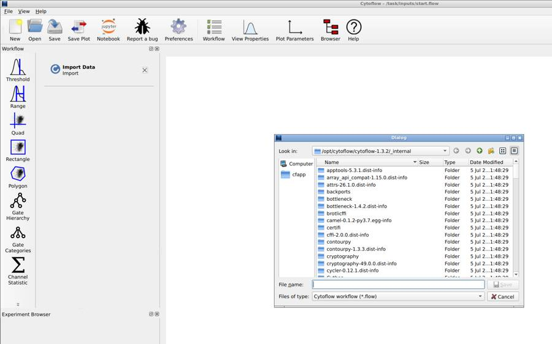
{"chunk_id":"d0fc79","wall_time_seconds":0.00000387,"exit_code":0,"original_token_count":509,"output":"/opt/cytoflow/cytoflow-1.3.2/_internal/cytoflowgui/help/operations/binning-1.py\n/opt/cytoflow/cytoflow-1.3.2/_internal/cytoflowgui/help/operations/binning-1.png\n/opt/cytoflow/cytoflow-1.3.2/_internal/cytoflowgui/help/operations/binning.html\n/opt/cytoflow/cytoflow-1.3.2/_internal/cytoflowgui/help/views/table-1.png\n/opt/cytoflow/cytoflow-1.3.2/_internal/cytoflowgui/help/views/histogram-1.png\n/opt/cytoflow/cytoflow-1.3.2/_internal/cytoflowgui/help/views/long_table-1.png\n/opt/cytoflow/cytoflow-1.3.2/_internal/cytoflowgui/help/views/long_table-1.py\n/opt/cytoflow/cytoflow-1.3.2/_internal/cytoflowgui/help/views/table.html\n/opt/cytoflow/cytoflow-1.3.2/_internal/cytoflowgui/help/views/table-1.py\n/opt/cytoflow/cytoflow-1.3.2/_internal/cytoflowgui/help/views/histogram_2d.html\n/opt/cytoflow/cytoflow-1.3.2/_internal/cytoflowgui/help/views/histogram-1.py\n/opt/cytoflow/cytoflow-1.3.2/_internal/cytoflowgui/help/views/histogram_2d-1.py\n/opt/cytoflow/cytoflow-1.3.2/_internal/cytoflowgui/help/views/histogram_2d-1.png\n/opt/cytoflow/cytoflow-1.3.2/_internal/cytoflowgui/help/views/long_table.html\n/opt/cytoflow/cytoflow-1.3.2/_internal/cytoflowgui/help/views/histogram.html\n/opt/cytoflow/cytoflow-1.3.2/_internal/cytoflowgui/help/plot_directive/views/table-1.png\n/opt/cytoflow/cytoflow-1.3.2/_internal/cytoflowgui/help/plot_directive/views/histogram-1.png\n/opt/cytoflow/cytoflow-1.3.2/_internal/cytoflowgui/help/plot_directive/views/long_table-1.png\n/opt/cytoflow/cytoflow-1.3.2/_internal/cytoflowgui/help/plot_directive/operations/binning-1.png\n/opt/cytoflow/cytoflow-1.3.2/_internal/cytoflowgui/help/plot_directive/views/histogram_2d-1.png\n/opt/cytoflow/cytoflow-1.3.2/_internal/cytoflowgui/help/_images/table-1.png\n/opt/cytoflow/cytoflow-1.3.2/_internal/cytoflowgui/help/_images/binning-1.png\n/opt/cytoflow/cytoflow-1.3.2/_internal/cytoflowgui/help/_images/histogram-1.png\n/opt/cytoflow/cytoflow-1.3.2/_internal/cytoflowgui/help/_images/long_table-1.png\n/opt/cytoflow/cytoflow-1.3.2/_internal/cytoflowgui/help/_images/histogram_2d-1.png\n"}text(await tools.exec_command({cmd:"cu paste /task/outputs/workflow.flow\ncu screenshot /tmp/screen.png","max_output_tokens":1000})); image((await tools.view_image({path:"/tmp/screen.png"})).image_url);
text(await tools.exec_command({cmd:"python - <<'PY'\nfrom pathlib import Path\nfrom html import unescape\nimport re\nfor name in ['views/table','views/long_table','operations/binning','operations/channel_stat']:\n p=Path('/opt/cytoflow/cytoflow-1.3.2/_internal/cytoflowgui/help')/(name+'.html')\n if p.exists():\n s=p.read_text(); s=re.sub('<[^>]+>', ' ', s); s=unescape(s); s=re.sub(r'\\s+', ' ', s)\n print(name, s)\nPY","max_output_tokens":6500}));
Script completed Wall time 1.5 seconds Output:
{"chunk_id":"edae70","wall_time_seconds":1.24619366,"exit_code":0,"original_token_count":4,"output":"/tmp/screen.png\n"}
{"chunk_id":"92b4b2","wall_time_seconds":0.00000415,"exit_code":127,"original_token_count":12,"output":"/bin/bash: line 1: python: command not found\n"}text(await tools.exec_command({cmd:"cu click 1311 746\ncu screenshot /tmp/screen.png","max_output_tokens":1000})); image((await tools.view_image({path:"/tmp/screen.png"})).image_url);
text(await tools.exec_command({cmd:"python3 - <<'PY'\nfrom pathlib import Path\nfrom html import unescape\nimport re\nfor name in ['views/table','views/long_table','operations/binning','operations/channel_stat']:\n p=Path('/opt/cytoflow/cytoflow-1.3.2/_internal/cytoflowgui/help')/(name+'.html')\n if p.exists():\n s=p.read_text(); s=re.sub('<[^>]+>', ' ', s); s=unescape(s); s=re.sub(r'\\s+', ' ', s)\n print(name, s)\nPY","max_output_tokens":6500}));
Script completed Wall time 0.2 seconds Output:
{"chunk_id":"940530","wall_time_seconds":0.00731698,"exit_code":0,"original_token_count":4,"output":"/tmp/screen.png\n"}
{"chunk_id":"8821ea","wall_time_seconds":0.000004,"exit_code":0,"original_token_count":434,"output":"views/table Table Table Make a table out of a statistic. The table can then be exported. Statistic Which statistic to view. Feature The column in the statistic to view (often a channel name.) Rows Which variable to use for the rows Subrows Which variable to use for subrows. Columns Which variable to use for the columns. Subcolumns Which variable to use for the subcolumns. Export Export the table to a CSV file. \nviews/long_table Long Table Long Table Make a long (“tidy”) table out of a statistic. The table can then be exported. Statistic Which statistic to view. Export Export the table to a CSV file. \noperations/binning Binning Binning Bin data along an axis. This operation creates equally spaced bins (in linear or log space) along an axis and adds a condition assigning each event to a bin. The value of the event’s condition is the left end of the bin’s interval in which the event is located. Name The name of the new condition created by this operation. Channel The channel to apply the binning to. Scale The scale to apply to the channel before binning. Bin Width How wide should each bin be? Can only set if Scale is linear or log (in which case, Bin Width is in log10-units.) \noperations/channel_stat Channel statistic Channel statistic Apply a function to subsets of a data set, and add it as a statistic to the experiment. First, the module groups the data by the unique values of the variables in By , then applies Function to the Channel in each group. Name The operation name. Becomes the new statistic’s name. Channel The channel to apply the function to. Function The function to compute on each group. Subset Only apply the function to a subset of the data. Useful if the function is very slow. \n"}text(await tools.exec_command({cmd:"cu click 242 181\ncu screenshot /tmp/screen.png","max_output_tokens":1000})); image((await tools.view_image({path:"/tmp/screen.png"})).image_url);
text(await tools.exec_command({cmd:"ps -eo pid,pcpu,pmem,rss,comm --sort=-rss | head -8","max_output_tokens":1000}));
Script completed Wall time 0.2 seconds Output:
{"chunk_id":"1289c2","wall_time_seconds":0.0160957,"exit_code":0,"original_token_count":4,"output":"/tmp/screen.png\n"}
{"chunk_id":"a23f42","wall_time_seconds":0.00000342,"exit_code":0,"original_token_count":67,"output":" PID %CPU %MEM RSS COMMAND\n 863 5.7 18.3 1493996 cytoflow\n 846 4.5 6.7 551264 cytoflow\n 7365 1.4 2.4 196852 codex\n 818 0.2 1.0 84364 Xvfb\n 933 0.0 0.8 72024 QtWebEngineProc\n 915 0.0 0.5 47752 QtWebEngineProc\n 893 0.0 0.5 47720 QtWebEngineProc\n"}text(await tools.exec_command({cmd:"python3 - <<'PY'\nfrom pathlib import Path\nfrom html import unescape\nimport re\nfor name in ['operations/polygon','operations/range','operations/threshold','views/scatterplot','views/histogram','views/histogram_2d']:\n p=Path('/opt/cytoflow/cytoflow-1.3.2/_internal/cytoflowgui/help')/(name+'.html')\n if p.exists():\n s=re.sub('<[^>]+>', ' ', p.read_text()); s=re.sub(r'\\s+', ' ', unescape(s)); print(name, s)\nPY","max_output_tokens":4000}));
text(await tools.clock__curr_time({}));
Script completed
Wall time 0.1 seconds
Output:
{"chunk_id":"688fe2","wall_time_seconds":0.00000444,"exit_code":0,"original_token_count":973,"output":"operations/polygon Polygon Gate Polygon Gate Draw a polygon gate. To add vertices, use a single-click; to close the polygon, click the first vertex a second time. Name The operation name. Used to name the new metadata field that’s created by this module. X Channel The name of the channel on the gate’s X axis. Y Channel The name of the channel on the gate’s Y axis. X Scale The scale of the X axis for the interactive plot. Y Scale The scale of the Y axis for the interactive plot Hue facet Show different experimental conditions in different colors. Subset Show only a subset of the data. \noperations/range Range Gate Range Gate Draw a range gate. To draw a new range, click-and-drag across the plot. Name The operation name. Used to name the new metadata field that’s created by this module. Channel The name of the channel to apply the gate to. Low The low threshold of the gate. High The high threshold of the gate. Scale The scale of the axis for the interactive plot Hue facet Show different experimental conditions in different colors. Subset Show only a subset of the data. \noperations/threshold Threshold Gate Threshold Gate Draw a threshold gate. To set a new threshold, click on the plot. Name The operation name. Used to name the new metadata field that’s created by this module. Channel The name of the channel to apply the gate to. Threshold The threshold of the gate. Scale The scale of the axis for the interactive plot Hue facet Show different experimental conditions in different colors. Subset Show only a subset of the data. \nviews/scatterplot Scatterplot Scatterplot Plot a scatterplot. X Channel, Y Channel The channels to plot on the X and Y axes. X Scale, Y Scale How to scale the X and Y axes of the plot. Color Channel If set, color each point by the value of a channel. Cannot set both Color Channel and Color Facet . Horizonal Facet Make multiple plots. Each column has a unique value of this variable. Vertical Facet Make multiple plots. Each row has a unique value of this variable. Color Facet Plot with multiple colors. Each color has a unique value of this variable. Cannot set both Color Channel and Color Facet . Color Scale If Color Channel is set or Color Facet is a numeric variable, use this scale for the color bar. Tab Facet Make multiple plots in differen tabs; each tab’s plot has a unique value of this variable. Subset Plot only a subset of the data in the experiment. \nviews/histogram Histogram Histogram Plots a histogram. Channel The channel for the plot. Scale How to scale the X axis of the plot. Horizonal Facet Make multiple plots. Each column has a unique value of this variable. Vertical Facet Make multiple plots. Each row has a unique value of this variable. Color Facet Plot with multiple colors. Each color has a unique value of this variable. Color Scale If Color Facet is a numeric variable, use this scale for the color bar. Tab Facet Make multiple plots in differen tabs; each tab’s plot has a unique value of this variable. Subset Plot only a subset of the data in the experiment. \nviews/histogram_2d 2D Histogram 2D Histogram Plots a 2-dimensional histogram. Similar to a density plot, but the number of events in a bin change the bin’s opacity, so you can use different colors. X Channel, Y Channel The channels to plot on the X and Y axes. X Scale, Y Scale How to scale the X and Y axes of the plot. Horizonal Facet Make multiple plots. Each column has a unique value of this variable. Vertical Facet Make multiple plots. Each row has a unique value of this variable. Color Facet Plot with multiple colors. Each color has a unique value of this variable. Color Scale If Color Facet is a numeric variable, use this scale for the color bar. Tab Facet Make multiple plots in differen tabs; each tab’s plot has a unique value of this variable. Subset Plot only a subset of the data in the experiment. \n"}
{"current_time":"2026-11-05 08:17:32 UTC"}{
"duration_ms": 45000
}Wall time: 45.0743 seconds Sleep completed.
text(await tools.exec_command({cmd:"cu screenshot /tmp/screen.png","max_output_tokens":1000})); image((await tools.view_image({path:"/tmp/screen.png"})).image_url);
text(await tools.exec_command({cmd:"ps -eo pid,pcpu,rss,comm --sort=-rss | head -5","max_output_tokens":1000}));
Script completed Wall time 0.2 seconds Output:
{"chunk_id":"23a6dc","wall_time_seconds":0.00000433,"exit_code":0,"original_token_count":4,"output":"/tmp/screen.png\n"}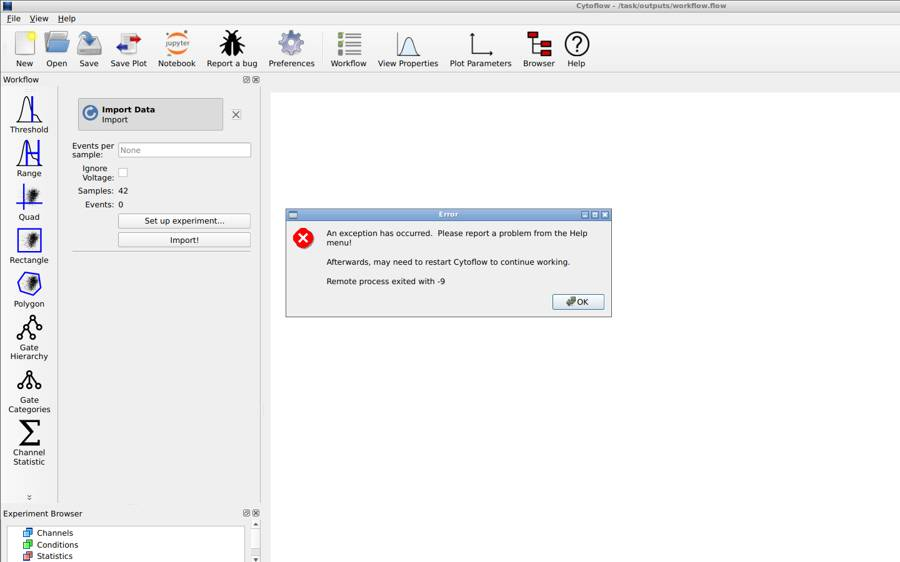
{"chunk_id":"7b0b00","wall_time_seconds":0.00000369,"exit_code":0,"original_token_count":32,"output":" PID %CPU RSS COMMAND\n 846 2.8 394852 cytoflow\n 7365 0.8 119936 codex\n 818 0.1 38072 Xvfb\n 833 0.1 23184 websockify\n"}text(await tools.exec_command({cmd:"free -h\ncat /sys/fs/cgroup/memory.max /sys/fs/cgroup/memory.peak /sys/fs/cgroup/memory.events\nps -ef | head -20\nls -lh /opt/cytoflow /task/outputs","max_output_tokens":3000}));
text(await tools.exec_command({cmd:"cu click 920 484\ncu screenshot /tmp/screen.png","max_output_tokens":1000})); image((await tools.view_image({path:"/tmp/screen.png"})).image_url);
Script completed Wall time 0.2 seconds Output:
{"chunk_id":"ab4194","wall_time_seconds":0.0000039,"exit_code":0,"original_token_count":481,"output":" total used free shared buff/cache available\nMem: 7.8Gi 865Mi 6.7Gi 15Mi 456Mi 6.9Gi\nSwap: 0B 0B 0B\ncat: /sys/fs/cgroup/memory.max: No such file or directory\ncat: /sys/fs/cgroup/memory.peak: No such file or directory\ncat: /sys/fs/cgroup/memory.events: No such file or directory\nUID PID PPID C STIME TTY TIME CMD\nroot 1 0 0 08:15 ? 00:00:00 /__modal/runch-agent\nroot 2 0 0 08:15 ? 00:00:00 [kthreadd]\nroot 3 2 0 08:15 ? 00:00:00 [pool_workqueue_release]\nroot 4 2 0 08:15 ? 00:00:00 [kworker/R-rcu_gp]\nroot 5 2 0 08:15 ? 00:00:00 [kworker/R-sync_wq]\nroot 6 2 0 08:15 ? 00:00:00 [kworker/R-kvfree_rcu_reclaim]\nroot 7 2 0 08:15 ? 00:00:00 [kworker/R-slub_flushwq]\nroot 8 2 0 08:15 ? 00:00:00 [kworker/R-netns]\nroot 9 2 0 08:15 ? 00:00:00 [kworker/0:0-events]\nroot 10 2 0 08:15 ? 00:00:00 [kworker/0:0H-kblockd]\nroot 11 2 0 08:15 ? 00:00:00 [kworker/0:1-events_freezable]\nroot 12 2 0 08:15 ? 00:00:00 [kworker/u16:0-iou_exit]\nroot 13 2 0 08:15 ? 00:00:00 [kworker/R-mm_percpu_wq]\nroot 14 2 0 08:15 ? 00:00:00 [ksoftirqd/0]\nroot 15 2 0 08:15 ? 00:00:00 [rcu_sched]\nroot 16 2 0 08:15 ? 00:00:00 [rcu_exp_par_gp_kthread_worker/0]\nroot 17 2 0 08:15 ? 00:00:00 [rcu_exp_gp_kthread_worker]\nroot 18 2 0 08:15 ? 00:00:00 [migration/0]\nroot 19 2 0 08:15 ? 00:00:00 [cpuhp/0]\n/opt/cytoflow:\ntotal 4.0K\ndrwxr-x--- 3 cfapp cfapp 4.0K Jul 5 21:48 cytoflow-1.3.2\n\n/task/outputs:\ntotal 12K\n-rw-rw-r-- 1 cfapp task 9.7K Nov 5 08:17 workflow.flow\n"}{"chunk_id":"0bf694","wall_time_seconds":0.00974637,"exit_code":0,"original_token_count":4,"output":"/tmp/screen.png\n"}text(await tools.exec_command({cmd:"df -h /tmp\ncat /proc/846/cmdline\ntr '\\0' '\\n' </proc/846/environ | rg 'DISPLAY|XAUTH|QT|HOME'\nls -l /opt/cytoflow/cytoflow-1.3.2\ncat /proc/meminfo | head -8\nls /sys/fs/cgroup","max_output_tokens":2000}));
text(await tools.exec_command({cmd:"dmesg | tail -15","max_output_tokens":2000}));
Script completed
Wall time 0.1 seconds
Output:
{"chunk_id":"74cd3d","wall_time_seconds":0.00000373,"exit_code":0,"original_token_count":232,"output":"Filesystem Size Used Avail Use% Mounted on\n/dev/root 504G 5.3G 499G 2% /\n/opt/cytoflow/cytoflow-1.3.2/cytoflow\u0000QT_XKB_CONFIG_ROOT=/usr/share/X11/xkb\nHOME=/home/cfapp\nDISPLAY=:1\ntotal 45156\ndrwxr-x--- 113 cfapp cfapp 12288 Jul 5 21:48 _internal\n-rwxr-x--- 1 cfapp cfapp 46226608 Jul 5 21:48 cytoflow\nMemTotal: 8140732 kB\nMemFree: 7038564 kB\nMemAvailable: 7254428 kB\nBuffers: 4440 kB\nCached: 467216 kB\nSwapCached: 0 kB\nActive: 522132 kB\nInactive: 481208 kB\ncgroup.controllers\ncgroup.max.depth\ncgroup.max.descendants\ncgroup.pressure\ncgroup.procs\ncgroup.stat\ncgroup.subtree_control\ncgroup.threads\ncpu.pressure\ncpu.stat\ncpu.stat.local\ncpuset.cpus.effective\ncpuset.cpus.isolated\ncpuset.mems.effective\nio.pressure\nio.stat\nmemory.numa_stat\nmemory.pressure\nmemory.reclaim\nmemory.stat\nmemory.zswap.writeback\nmisc.capacity\nmisc.current\nmisc.peak\n"}
{"chunk_id":"ed3bf9","wall_time_seconds":0.00000267,"exit_code":0,"original_token_count":490,"output":"[ 159.563002] [ 839] 0 839 1187 82 80 2 0 53248 0 0 runuser\n[ 159.563081] [ 840] 1002 840 1191 70 68 2 0 40960 0 0 start-cytoflow\n[ 159.563148] [ 846] 1002 846 899734 93517 90916 3 2598 1839104 0 0 cytoflow\n[ 159.563211] [ 861] 1002 861 21086 5522 5520 2 0 151552 0 0 cytoflow\n[ 159.563274] [ 863] 1002 863 2207801 1848187 1848178 2 7 15400960 0 0 cytoflow\n[ 159.563332] [ 893] 1002 893 52306 1872 1870 2 0 290816 0 0 QtWebEngineProc\n[ 159.563387] [ 915] 1002 915 52306 1875 1873 2 0 290816 0 0 QtWebEngineProc\n[ 159.563443] [ 917] 1002 917 52306 1876 1874 2 0 172032 0 0 QtWebEngineProc\n[ 159.563521] [ 933] 1002 933 1290952 3536 3273 2 261 622592 0 300 QtWebEngineProc\n[ 159.563602] [ 7144] 0 7144 2249 1142 1140 2 0 53248 0 0 bash\n[ 159.563665] [ 7365] 0 7365 153310 13192 13190 2 0 929792 0 0 codex\n[ 159.563709] [ 7366] 0 7366 786 29 28 1 0 45056 0 0 tee\n[ 159.563777] [ 7450] 0 7450 362205526 844 842 2 0 212992 0 0 codex-code-mode\n[ 159.563844] oom-kill:constraint=CONSTRAINT_NONE,nodemask=(null),cpuset=/,mems_allowed=0,global_oom,task_memcg=/,task=cytoflow,pid=863,uid=1002\n[ 159.563945] Out of memory: Killed process 863 (cytoflow) total-vm:8831204kB, anon-rss:7392712kB, file-rss:8kB, shmem-rss:28kB, UID:1002 pgtables:15040kB oom_score_adj:0\n"}text(await tools.exec_command({cmd:"fallocate -l 24G /tmp/cytoflow.swap\nchmod 600 /tmp/cytoflow.swap\nmkswap /tmp/cytoflow.swap\nswapon /tmp/cytoflow.swap\nfree -h\ncommand -v start-cytoflow\ncat /usr/local/bin/start-cytoflow","max_output_tokens":2000}));
Script completed
Wall time 0.1 seconds
Output:
{"chunk_id":"d43208","wall_time_seconds":0.0000037,"exit_code":0,"original_token_count":167,"output":"Setting up swapspace version 1, size = 24 GiB (25769799680 bytes)\nno label, UUID=19f6b824-e38d-4569-a781-8088f7b7923e\n total used free shared buff/cache available\nMem: 7.8Gi 862Mi 6.7Gi 15Mi 476Mi 6.9Gi\nSwap: 23Gi 0B 23Gi\n/usr/local/bin/start-cytoflow\n#!/bin/bash\n# Launch Cytoflow full-screen-ish; restart it if the agent closes it.\nBIN=$(find /opt/cytoflow -maxdepth 3 -type f -name 'cytoflow' -perm -u+x | head -1)\n[ -z \"$BIN\" ] && { echo \"cytoflow binary not found under /opt/cytoflow\"; exit 1; }\nwhile true; do\n \"$BIN\" >/tmp/cytoflow.log 2>&1\n sleep 1\ndone\n"}text(await tools.exec_command({cmd:"cu key alt+F4\ncu screenshot /tmp/screen.png","max_output_tokens":1000})); image((await tools.view_image({path:"/tmp/screen.png"})).image_url);
Script completed Wall time 0.1 seconds Output:
{"chunk_id":"262736","wall_time_seconds":0.00000435,"exit_code":0,"original_token_count":4,"output":"/tmp/screen.png\n"}text(await tools.exec_command({cmd:"cu screenshot /tmp/screen.png","max_output_tokens":1000})); image((await tools.view_image({path:"/tmp/screen.png"})).image_url);
text(await tools.exec_command({cmd:"tail -12 /tmp/cytoflow.log\nps -eo pid,rss,comm --sort=-rss | head -5","max_output_tokens":1000}));
Script completed Wall time 0.1 seconds Output:
{"chunk_id":"5c0370","wall_time_seconds":0.00000343,"exit_code":0,"original_token_count":4,"output":"/tmp/screen.png\n"}
{"chunk_id":"cd01d2","wall_time_seconds":0.00000378,"exit_code":0,"original_token_count":26,"output":" PID RSS COMMAND\n 7641 240272 cytoflow\n 7365 123024 codex\n 818 30432 Xvfb\n 833 23184 websockify\n"}{
"duration_ms": 10000
}Wall time: 10.0033 seconds Sleep completed.
text(await tools.exec_command({cmd:"cu screenshot /tmp/screen.png","max_output_tokens":1000})); image((await tools.view_image({path:"/tmp/screen.png"})).image_url);
Script completed Wall time 0.1 seconds Output:
{"chunk_id":"b48b05","wall_time_seconds":0.00000344,"exit_code":0,"original_token_count":4,"output":"/tmp/screen.png\n"}
text(await tools.exec_command({cmd:"cu click 90 70\ncu screenshot /tmp/screen.png","max_output_tokens":1000})); image((await tools.view_image({path:"/tmp/screen.png"})).image_url);
Script completed Wall time 0.2 seconds Output:
{"chunk_id":"27558c","wall_time_seconds":0.01610252,"exit_code":0,"original_token_count":4,"output":"/tmp/screen.png\n"}text(await tools.exec_command({cmd:"cu paste /task/outputs/workflow.flow\ncu key Return\ncu screenshot /tmp/screen.png","max_output_tokens":1000})); image((await tools.view_image({path:"/tmp/screen.png"})).image_url);
Script completed Wall time 1.4 seconds Output:
{"chunk_id":"fe62c6","wall_time_seconds":1.25556778,"exit_code":0,"original_token_count":4,"output":"/tmp/screen.png\n"}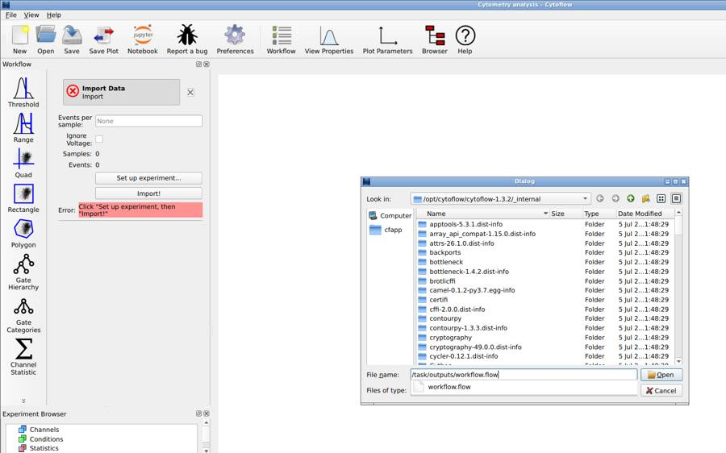
text(await tools.exec_command({cmd:"cu click 1310 745\ncu screenshot /tmp/screen.png","max_output_tokens":1000})); image((await tools.view_image({path:"/tmp/screen.png"})).image_url);
Script completed Wall time 0.2 seconds Output:
{"chunk_id":"50442e","wall_time_seconds":0.00740982,"exit_code":0,"original_token_count":4,"output":"/tmp/screen.png\n"}text(await tools.exec_command({cmd:"cu click 744 450\ncu click 241 179\ncu screenshot /tmp/screen.png","max_output_tokens":1000})); image((await tools.view_image({path:"/tmp/screen.png"})).image_url);
text(await tools.clock__curr_time({}));
Script completed Wall time 0.3 seconds Output:
{"chunk_id":"e533cd","wall_time_seconds":0.11501373,"exit_code":0,"original_token_count":4,"output":"/tmp/screen.png\n"}{"current_time":"2026-11-05 08:19:19 UTC"}{
"duration_ms": 45000
}Wall time: 45.0430 seconds Sleep completed.
text(await tools.exec_command({cmd:"cu screenshot /tmp/screen.png\nfree -h\ntail -5 /tmp/cytoflow.log","max_output_tokens":1000})); image((await tools.view_image({path:"/tmp/screen.png"})).image_url);
Script completed Wall time 0.2 seconds Output:
{"chunk_id":"18cc90","wall_time_seconds":0.00004915,"exit_code":0,"original_token_count":78,"output":"/tmp/screen.png\n total used free shared buff/cache available\nMem: 7.8Gi 3.7Gi 3.9Gi 1.7Mi 472Mi 4.1Gi\nSwap: 23Gi 2.6Gi 21Gi\nQXcbIntegration: Cannot create platform OpenGL context, neither GLX nor EGL are enabled\n"}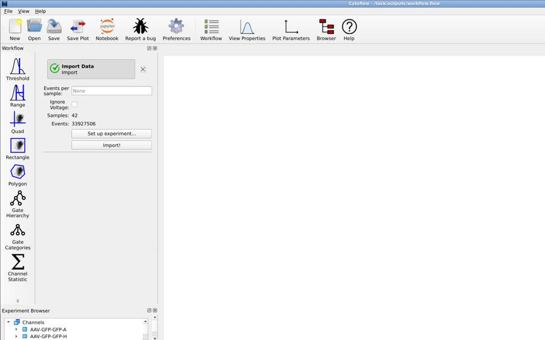
text(await tools.exec_command({cmd:"cu click 47 455\ncu screenshot /tmp/screen.png","max_output_tokens":1000})); image((await tools.view_image({path:"/tmp/screen.png"})).image_url);
Script completed Wall time 0.2 seconds Output:
{"chunk_id":"4d6e0e","wall_time_seconds":0.01176189,"exit_code":0,"original_token_count":4,"output":"/tmp/screen.png\n"}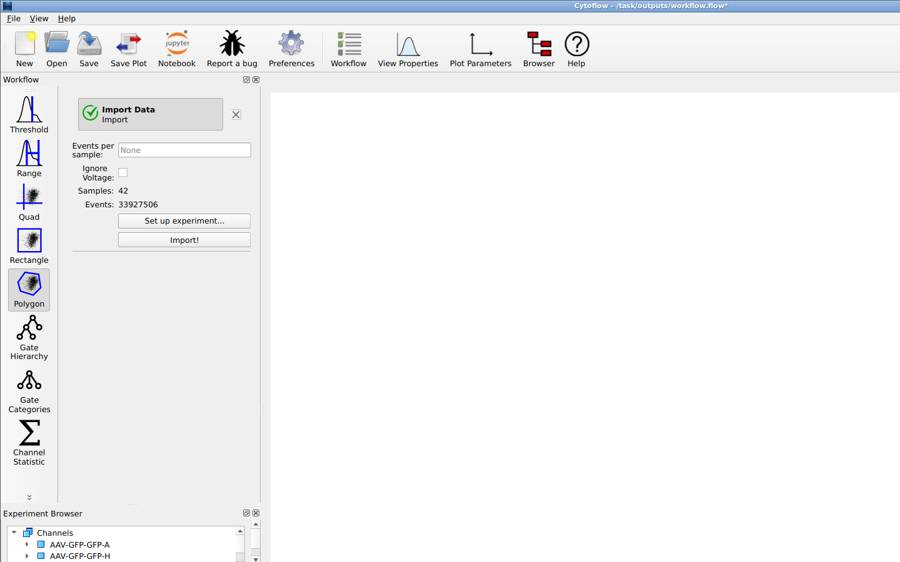
text(await tools.exec_command({cmd:"cu screenshot /tmp/screen.png","max_output_tokens":1000})); image((await tools.view_image({path:"/tmp/screen.png"})).image_url);
Script completed Wall time 0.1 seconds Output:
{"chunk_id":"4f418f","wall_time_seconds":0.00000365,"exit_code":0,"original_token_count":4,"output":"/tmp/screen.png\n"}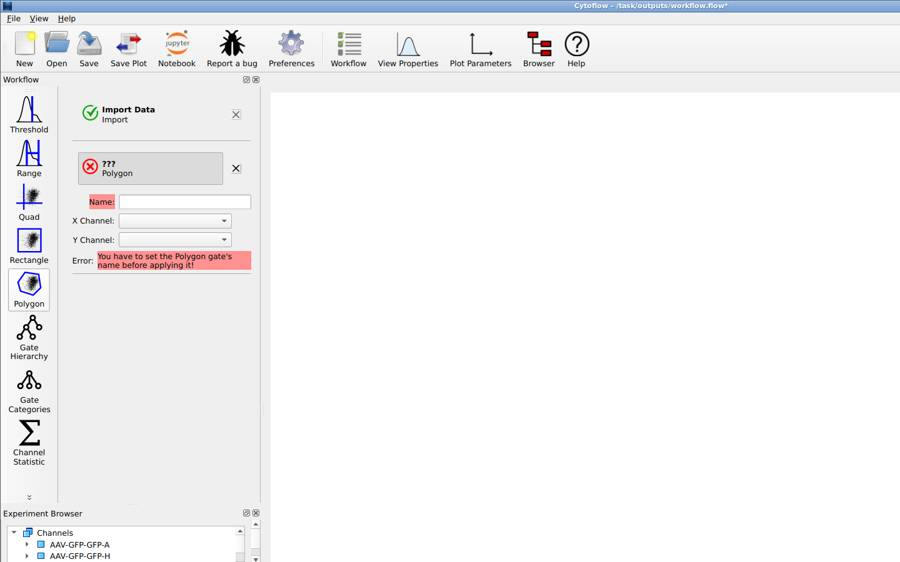
text(await tools.exec_command({cmd:"cu click 276 323\ncu type Cells\ncu click 358 353\ncu screenshot /tmp/screen.png","max_output_tokens":1000})); image((await tools.view_image({path:"/tmp/screen.png"})).image_url);
Script completed Wall time 0.4 seconds Output:
{"chunk_id":"7af0e5","wall_time_seconds":0.24638208,"exit_code":0,"original_token_count":4,"output":"/tmp/screen.png\n"}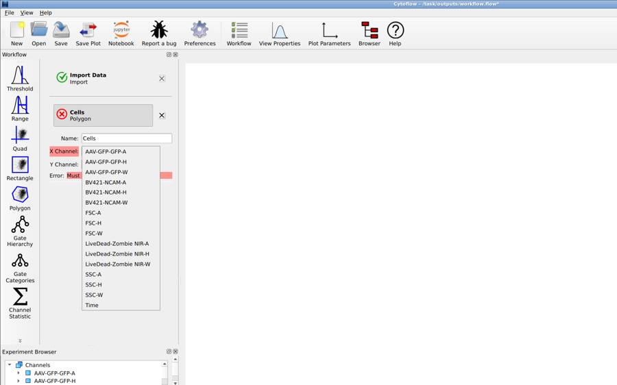
text(await tools.exec_command({cmd:"cu click 220 496\ncu click 357 385\ncu screenshot /tmp/screen.png","max_output_tokens":1000})); image((await tools.view_image({path:"/tmp/screen.png"})).image_url);
Script completed Wall time 0.3 seconds Output:
{"chunk_id":"53332c","wall_time_seconds":0.11383519,"exit_code":0,"original_token_count":4,"output":"/tmp/screen.png\n"}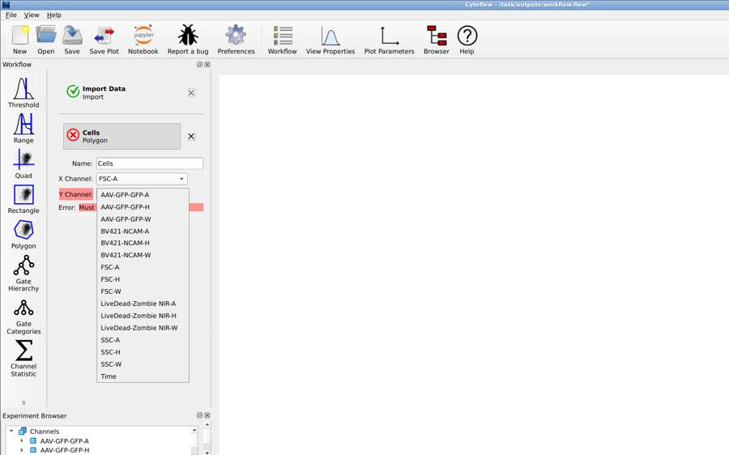
text(await tools.exec_command({cmd:"cu click 220 672\ncu click 650 70\ncu screenshot /tmp/screen.png","max_output_tokens":1000})); image((await tools.view_image({path:"/tmp/screen.png"})).image_url);
Script completed Wall time 0.3 seconds Output:
{"chunk_id":"2a6ad3","wall_time_seconds":0.12683266,"exit_code":0,"original_token_count":4,"output":"/tmp/screen.png\n"}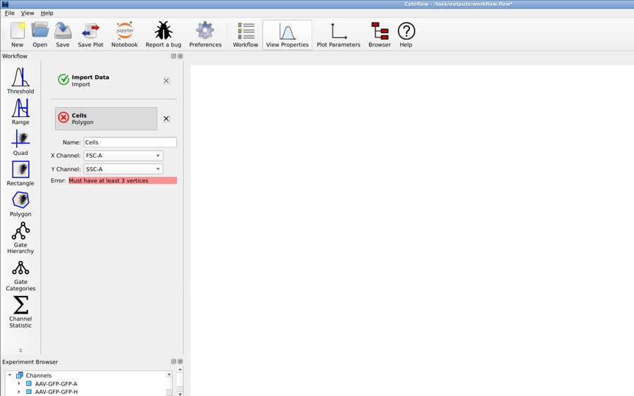
text(await tools.exec_command({cmd:"cu screenshot /tmp/screen.png","max_output_tokens":1000})); image((await tools.view_image({path:"/tmp/screen.png"})).image_url);
Script completed Wall time 0.1 seconds Output:
{"chunk_id":"60cc7c","wall_time_seconds":0.00000332,"exit_code":0,"original_token_count":4,"output":"/tmp/screen.png\n"}{
"duration_ms": 10000
}Wall time: 10.2326 seconds Sleep completed.
text(await tools.exec_command({cmd:"cu screenshot /tmp/screen.png\ntail -15 /tmp/cytoflow.log\nfree -h","max_output_tokens":1500})); image((await tools.view_image({path:"/tmp/screen.png"})).image_url);
Script completed Wall time 0.3 seconds Output:
{"chunk_id":"8655d0","wall_time_seconds":0.00002201,"exit_code":0,"original_token_count":78,"output":"/tmp/screen.png\nQXcbIntegration: Cannot create platform OpenGL context, neither GLX nor EGL are enabled\n total used free shared buff/cache available\nMem: 7.8Gi 7.4Gi 137Mi 280Ki 434Mi 332Mi\nSwap: 23Gi 6.4Gi 17Gi\n"}text(await tools.exec_command({cmd:"cu click 62 30\ncu screenshot /tmp/screen.png","max_output_tokens":1000})); image((await tools.view_image({path:"/tmp/screen.png"})).image_url);
Script completed Wall time 0.4 seconds Output:
{"chunk_id":"15ce50","wall_time_seconds":0.04683536,"exit_code":0,"original_token_count":4,"output":"/tmp/screen.png\n"}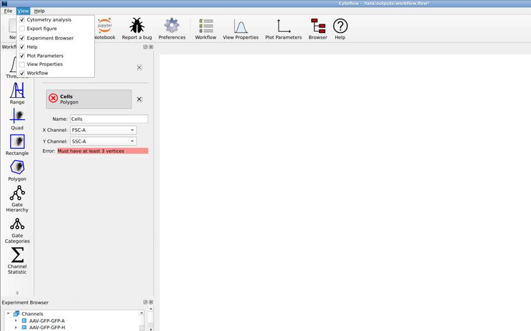
text(await tools.exec_command({cmd:"cu click 124 173\ncu screenshot /tmp/screen.png","max_output_tokens":1000})); image((await tools.view_image({path:"/tmp/screen.png"})).image_url);
Script completed Wall time 0.2 seconds Output:
{"chunk_id":"77173c","wall_time_seconds":0.02851906,"exit_code":0,"original_token_count":4,"output":"/tmp/screen.png\n"}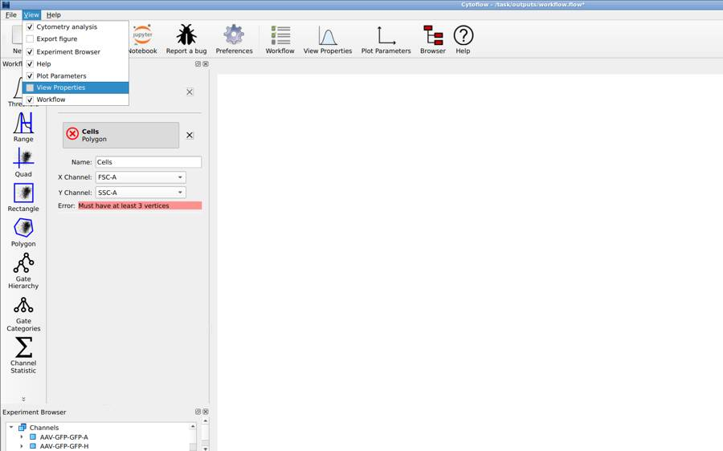
text(await tools.exec_command({cmd:"sleep 1\ncu screenshot /tmp/screen.png","max_output_tokens":1000})); image((await tools.view_image({path:"/tmp/screen.png"})).image_url);
Script completed Wall time 1.2 seconds Output:
{"chunk_id":"e25450","wall_time_seconds":0.92038223,"exit_code":0,"original_token_count":4,"output":"/tmp/screen.png\n"}text(await tools.exec_command({cmd:"cu click 672 9 double\nsleep 1\ncu screenshot /tmp/screen.png","max_output_tokens":1000})); image((await tools.view_image({path:"/tmp/screen.png"})).image_url);
Script completed Wall time 1.3 seconds Output:
{"chunk_id":"7f6931","wall_time_seconds":1.13326882,"exit_code":0,"original_token_count":4,"output":"/tmp/screen.png\n"}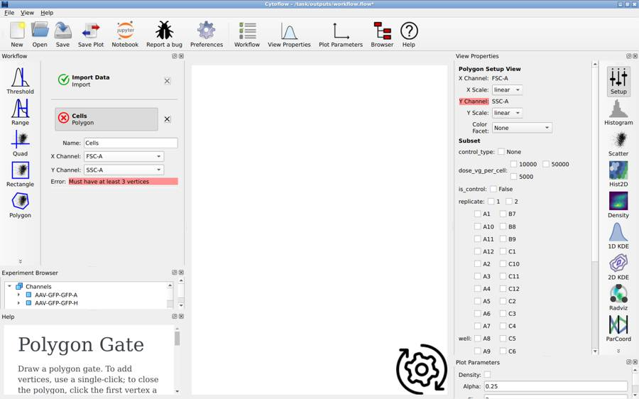
text(await tools.exec_command({cmd:"cu click 1076 482\ncu click 1099 844\ncu click 409 711\ncu click 409 616\ncu click 769 68\ncu key ctrl+s\nsleep 1\ncu screenshot /tmp/screen.png","max_output_tokens":1000})); image((await tools.view_image({path:"/tmp/screen.png"})).image_url);
Script completed Wall time 2.6 seconds Output:
{"chunk_id":"2dbbae","wall_time_seconds":1.851210489,"exit_code":0,"original_token_count":4,"output":"/tmp/screen.png\n"}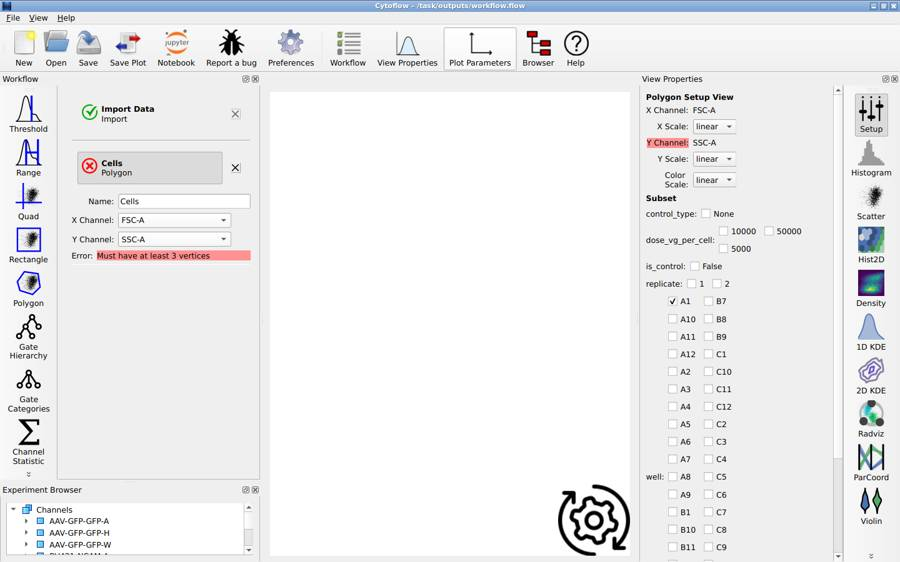
text(await tools.exec_command({cmd:"cu click 408 783\nsleep 1\ncu screenshot /tmp/screen.png\nfree -h\nps -eo pid,pcpu,rss,comm --sort=-rss | head -6","max_output_tokens":1500})); image((await tools.view_image({path:"/tmp/screen.png"})).image_url);
text(await tools.clock__curr_time({}));
Script completed Wall time 1.7 seconds Output:
{"chunk_id":"edb832","wall_time_seconds":1.31377511,"exit_code":0,"original_token_count":95,"output":"/tmp/screen.png\n total used free shared buff/cache available\nMem: 7.8Gi 7.4Gi 117Mi 4.6Mi 462Mi 342Mi\nSwap: 23Gi 11Gi 12Gi\n PID %CPU RSS COMMAND\n 7661 50.4 7346940 cytoflow\n 7365 1.5 56100 codex\n 7641 3.7 31460 cytoflow\n 7450 0.2 14436 codex-code-mode\n 818 0.1 14224 Xvfb\n"}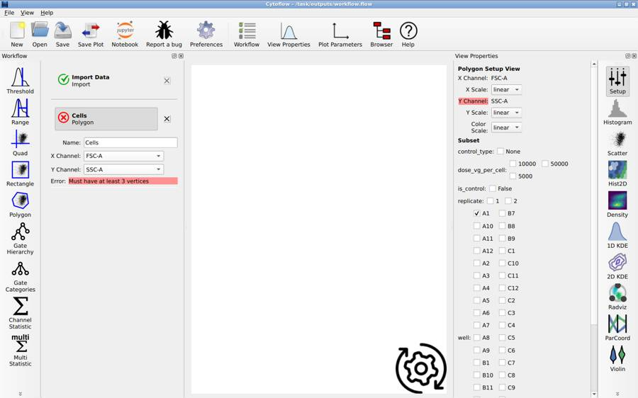
{"current_time":"2026-11-05 08:21:36 UTC"}{
"duration_ms": 45000
}Wall time: 45.0343 seconds Sleep completed.
text(await tools.exec_command({cmd:"cu screenshot /tmp/screen.png\nfree -h\ntail -8 /tmp/cytoflow.log","max_output_tokens":1500})); image((await tools.view_image({path:"/tmp/screen.png"})).image_url);
Script completed Wall time 0.1 seconds Output:
{"chunk_id":"d51191","wall_time_seconds":0.00000599,"exit_code":0,"original_token_count":177,"output":"/tmp/screen.png\n total used free shared buff/cache available\nMem: 7.8Gi 391Mi 7.2Gi 4.4Mi 447Mi 7.4Gi\nSwap: 23Gi 571Mi 23Gi\n File \"multiprocessing/connection.py\", line 250, in recv\n File \"multiprocessing/connection.py\", line 250, in recv\n File \"multiprocessing/connection.py\", line 430, in _recv_bytes\n File \"multiprocessing/connection.py\", line 430, in _recv_bytes\n File \"multiprocessing/connection.py\", line 395, in _recv\nConnectionResetError: [Errno 104] Connection reset by peer\n File \"multiprocessing/connection.py\", line 395, in _recv\nConnectionResetError: [Errno 104] Connection reset by peer\n"}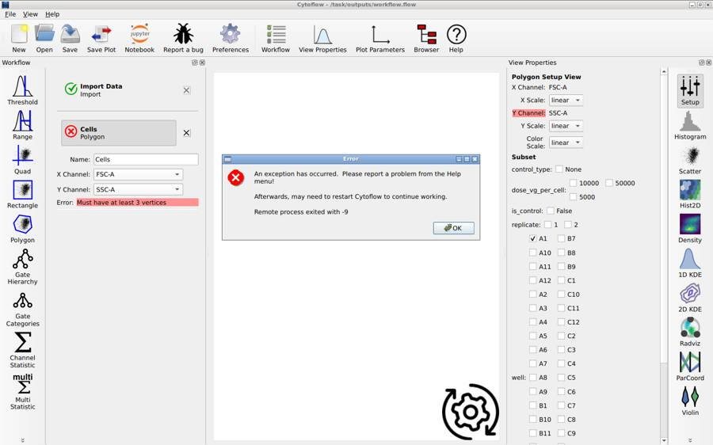
text(await tools.exec_command({cmd:"dmesg | tail -3\ncu click 920 459\ncu key alt+F4\nsleep 10\ncu screenshot /tmp/screen.png","max_output_tokens":1000})); image((await tools.view_image({path:"/tmp/screen.png"})).image_url);
Script failed
Wall time 10.2 seconds
Output:
{"chunk_id":"955977","wall_time_seconds":10.001299819,"session_id":52029,"original_token_count":113,"output":"[ 396.342934] [ 7725] 1002 7725 1309818 2 0 2 0 634880 3289 300 QtWebEngineProc\n[ 396.342990] oom-kill:constraint=CONSTRAINT_NONE,nodemask=(null),cpuset=/,mems_allowed=0,global_oom,task_memcg=/,task=cytoflow,pid=7661,uid=1002\n[ 396.343102] Out of memory: Killed process 7661 (cytoflow) total-vm:33894084kB, anon-rss:7813844kB, file-rss:8kB, shmem-rss:0kB, UID:1002 pgtables:64512kB oom_score_adj:0\n"}
Script error:
unable to process image: invalid or unsupported image datatext(await tools.write_stdin({session_id:52029,chars:"",yield_time_ms:1000,max_output_tokens:1000}));
text(await tools.exec_command({cmd:"cu screenshot /tmp/screen.png","max_output_tokens":1000})); image((await tools.view_image({path:"/tmp/screen.png"})).image_url);
Script completed Wall time 0.1 seconds Output:
{"chunk_id":"36428e","wall_time_seconds":0.00000312,"exit_code":0,"original_token_count":4,"output":"/tmp/screen.png\n"}{"chunk_id":"57f164","wall_time_seconds":0.00000408,"exit_code":0,"original_token_count":4,"output":"/tmp/screen.png\n"}text(await tools.exec_command({cmd:"cu click 672 9 double\ncu click 90 70\nsleep 1\ncu screenshot /tmp/screen.png","max_output_tokens":1000})); image((await tools.view_image({path:"/tmp/screen.png"})).image_url);
Script completed Wall time 1.4 seconds Output:
{"chunk_id":"4039ab","wall_time_seconds":1.22372199,"exit_code":0,"original_token_count":4,"output":"/tmp/screen.png\n"}
text(await tools.exec_command({cmd:"cu paste /task/outputs/workflow.flow\nsleep .3\ncu click 980 576\nsleep 1\ncu screenshot /tmp/screen.png","max_output_tokens":1000})); image((await tools.view_image({path:"/tmp/screen.png"})).image_url);
Script completed Wall time 2.8 seconds Output:
{"chunk_id":"60227b","wall_time_seconds":2.6532717200000002,"exit_code":0,"original_token_count":4,"output":"/tmp/screen.png\n"}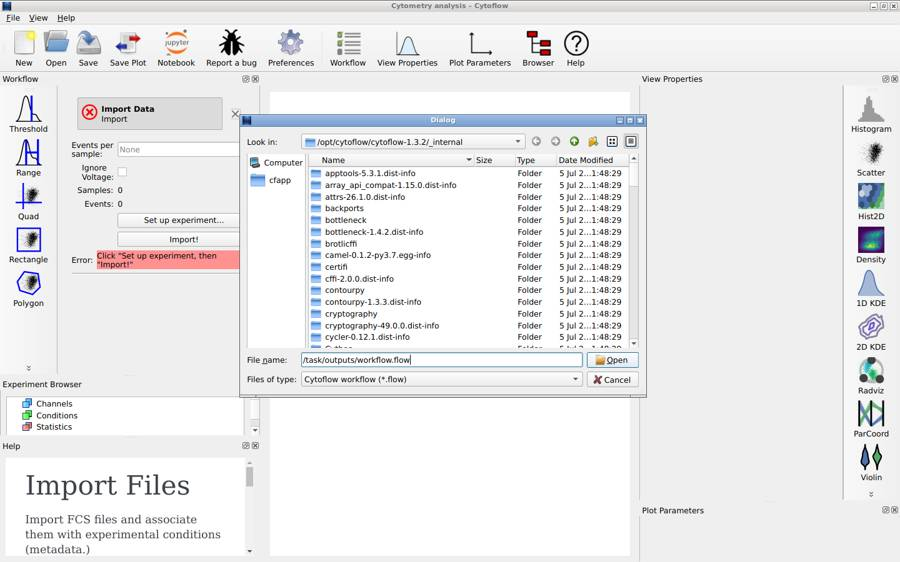
text(await tools.exec_command({cmd:"cu click 980 576\nsleep 1\ncu screenshot /tmp/screen.png","max_output_tokens":1000})); image((await tools.view_image({path:"/tmp/screen.png"})).image_url);
Script completed Wall time 1.2 seconds Output:
{"chunk_id":"d4542e","wall_time_seconds":1.01236994,"exit_code":0,"original_token_count":4,"output":"/tmp/screen.png\n"}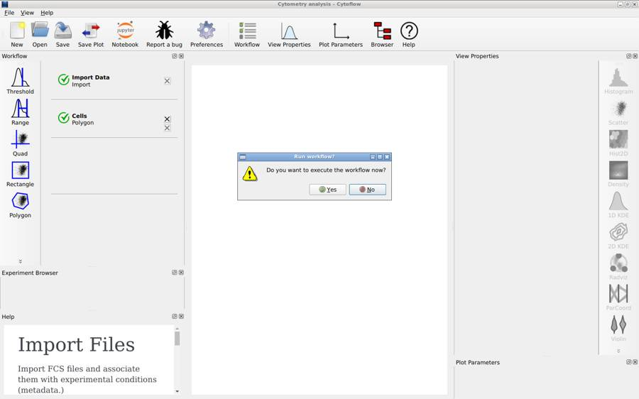
text(await tools.exec_command({cmd:"cu click 739 428\ncu click 407 714\ncu click 407 615\nsleep 1\ncu screenshot /tmp/screen.png","max_output_tokens":1000})); image((await tools.view_image({path:"/tmp/screen.png"})).image_url);
Script completed Wall time 1.4 seconds Output:
{"chunk_id":"5178b0","wall_time_seconds":1.22659596,"exit_code":0,"original_token_count":4,"output":"/tmp/screen.png\n"}
text(await tools.exec_command({cmd:"fallocate -l 40G /tmp/cytoflow-extra.swap\nchmod 600 /tmp/cytoflow-extra.swap\nmkswap /tmp/cytoflow-extra.swap\nswapon /tmp/cytoflow-extra.swap\ncu click 408 783\ncu click 240 266\nsleep 1\ncu screenshot /tmp/screen.png","max_output_tokens":1000})); image((await tools.view_image({path:"/tmp/screen.png"})).image_url);
Script completed Wall time 1.4 seconds Output:
{"chunk_id":"398523","wall_time_seconds":1.18382679,"exit_code":0,"original_token_count":34,"output":"Setting up swapspace version 1, size = 40 GiB (42949668864 bytes)\nno label, UUID=01c858a4-2606-49dc-a9bd-b0c1ff5b577a\n/tmp/screen.png\n"}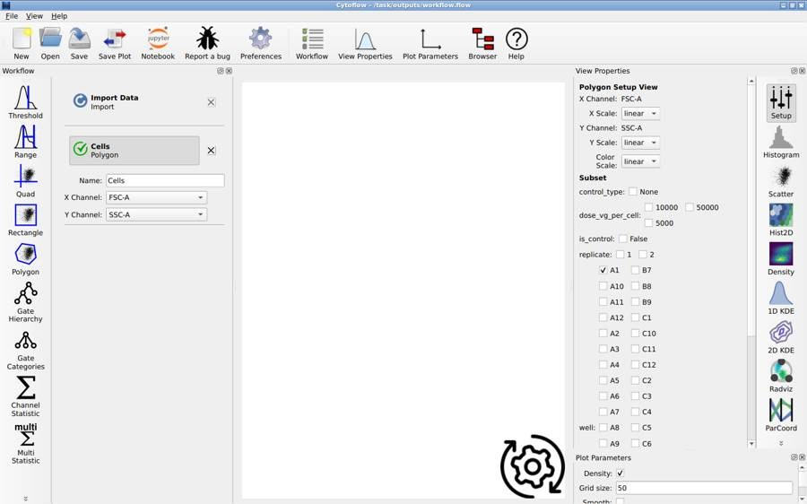
{
"duration_ms": 45000
}Wall time: 45.0561 seconds Sleep completed.
text(await tools.exec_command({cmd:"cu screenshot /tmp/screen.png\nfree -h","max_output_tokens":1000})); image((await tools.view_image({path:"/tmp/screen.png"})).image_url);
Script completed Wall time 0.2 seconds Output:
{"chunk_id":"bea421","wall_time_seconds":0.00000666,"exit_code":0,"original_token_count":56,"output":"/tmp/screen.png\n total used free shared buff/cache available\nMem: 7.8Gi 6.3Gi 1.2Gi 5.0Mi 497Mi 1.5Gi\nSwap: 63Gi 2.0Gi 62Gi\n"}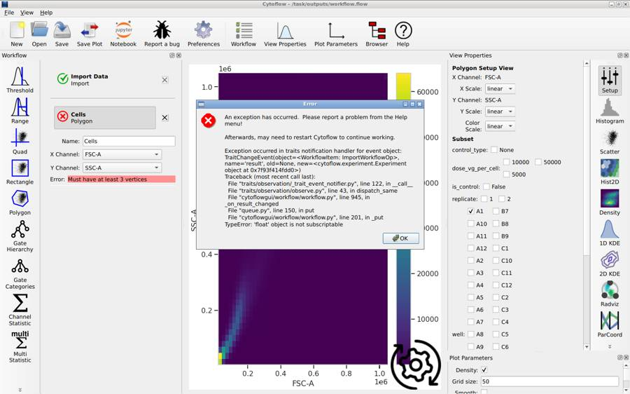
text(await tools.exec_command({cmd:"cu click 917 543\ncu click 1431 815\nsleep 1\ncu screenshot /tmp/screen.png","max_output_tokens":1000})); image((await tools.view_image({path:"/tmp/screen.png"})).image_url);
Script completed Wall time 1.3 seconds Output:
{"chunk_id":"469774","wall_time_seconds":1.1264922099999999,"exit_code":0,"original_token_count":4,"output":"/tmp/screen.png\n"}text(await tools.exec_command({cmd:"cu click 1165 202\nsleep .3\ncu screenshot /tmp/screen.png","max_output_tokens":1000})); image((await tools.view_image({path:"/tmp/screen.png"})).image_url);
Script completed Wall time 0.5 seconds Output:
{"chunk_id":"7f837e","wall_time_seconds":0.3174362,"exit_code":0,"original_token_count":4,"output":"/tmp/screen.png\n"}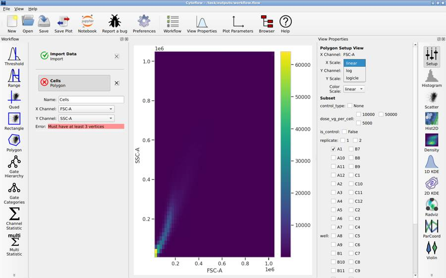
text(await tools.exec_command({cmd:"cu click 1140 252\ncu click 1165 255\nsleep .3\ncu screenshot /tmp/screen.png","max_output_tokens":1000})); image((await tools.view_image({path:"/tmp/screen.png"})).image_url);
Script completed Wall time 0.6 seconds Output:
{"chunk_id":"7f4fa8","wall_time_seconds":0.42649793,"exit_code":0,"original_token_count":4,"output":"/tmp/screen.png\n"}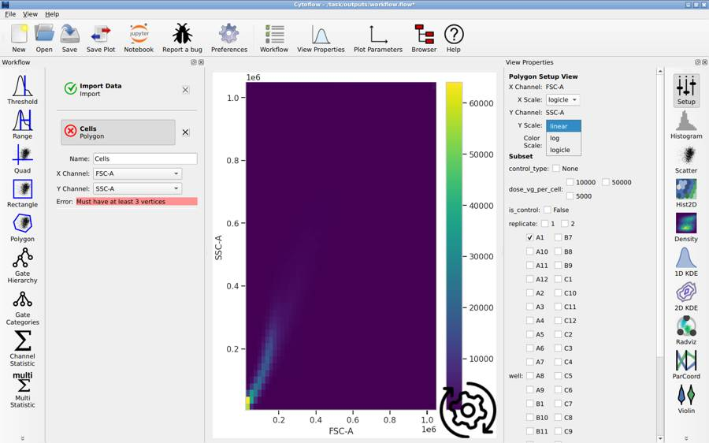
text(await tools.exec_command({cmd:"cu click 1138 302\ncu key ctrl+s\nsleep 5\ncu screenshot /tmp/screen.png","max_output_tokens":1000})); image((await tools.view_image({path:"/tmp/screen.png"})).image_url);
Script completed Wall time 5.2 seconds Output:
{"chunk_id":"c6953c","wall_time_seconds":5.04812991,"exit_code":0,"original_token_count":4,"output":"/tmp/screen.png\n"}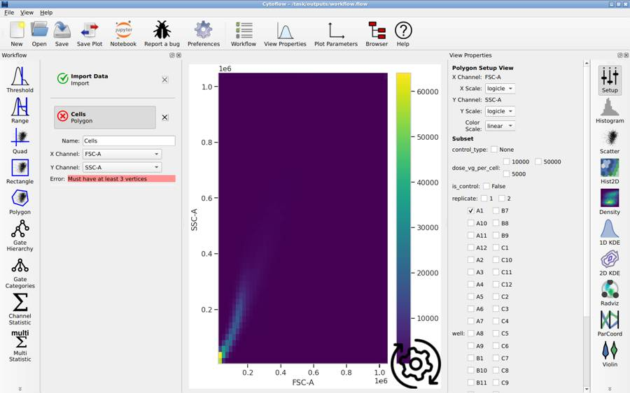
{
"duration_ms": 20000
}Wall time: 20.0046 seconds Sleep completed.
text(await tools.exec_command({cmd:"cu screenshot /tmp/screen.png","max_output_tokens":1000})); image((await tools.view_image({path:"/tmp/screen.png"})).image_url);
text(await tools.clock__curr_time({}));
Script completed Wall time 0.1 seconds Output:
{"chunk_id":"fe91d0","wall_time_seconds":0.00000388,"exit_code":0,"original_token_count":4,"output":"/tmp/screen.png\n"}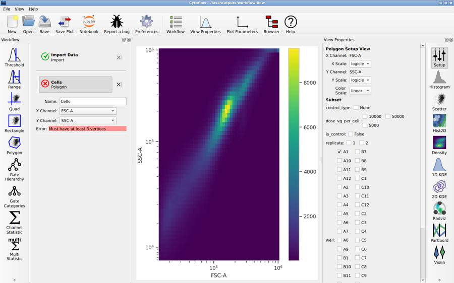
{"current_time":"2026-11-05 08:25:05 UTC"}text(await tools.exec_command({cmd:"cu click 628 499\ncu click 665 550\ncu click 820 425\ncu click 876 253\ncu click 876 180\ncu click 770 180\ncu click 660 395\ncu click 628 499\ncu key ctrl+s\nsleep 2\ncu screenshot /tmp/screen.png","max_output_tokens":1000})); image((await tools.view_image({path:"/tmp/screen.png"})).image_url);
Script completed Wall time 3.0 seconds Output:
{"chunk_id":"aaddd5","wall_time_seconds":2.822857869,"exit_code":0,"original_token_count":4,"output":"/tmp/screen.png\n"}text(await tools.exec_command({cmd:"cu click 1075 678\ncu click 1075 482\ncu key ctrl+s\nsleep 5\ncu screenshot /tmp/screen.png","max_output_tokens":1000})); image((await tools.view_image({path:"/tmp/screen.png"})).image_url);
Script completed Wall time 5.6 seconds Output:
{"chunk_id":"66b774","wall_time_seconds":5.176186529,"exit_code":0,"original_token_count":4,"output":"/tmp/screen.png\n"}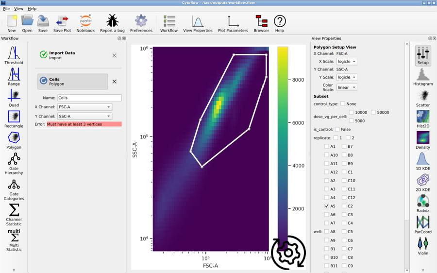
{
"duration_ms": 20000
}Wall time: 20.0038 seconds Sleep completed.
text(await tools.exec_command({cmd:"cu screenshot /tmp/screen.png\nfree -h","max_output_tokens":1000})); image((await tools.view_image({path:"/tmp/screen.png"})).image_url);
Script completed Wall time 0.1 seconds Output:
{"chunk_id":"5bd7c8","wall_time_seconds":0.00000406,"exit_code":0,"original_token_count":56,"output":"/tmp/screen.png\n total used free shared buff/cache available\nMem: 7.8Gi 7.1Gi 533Mi 980Ki 388Mi 700Mi\nSwap: 63Gi 3.3Gi 60Gi\n"}text(await tools.exec_command({cmd:"tail -100 /task/outputs/workflow.flow","max_output_tokens":3000}));
text(await tools.clock__curr_time({}));
Script completed
Wall time 0.0 seconds
Output:
{"chunk_id":"5c0cd2","wall_time_seconds":0.00000407,"exit_code":0,"original_token_count":433,"output":" - 23\n - 13\n - 14\n - 15\n - 24\n - 28\n - 29\n - 30\n - 31\n - 32\n - 33\n - 34\n - 35\n - 25\n - 26\n - 27\n - 36\n - 37\n - 38\n - 39\n - 40\n - 41\n levels:\n - !pandas-index;1\n dtype: object\n name: control_type\n values:\n - none\n - !pandas-index;1\n dtype: object\n name: dose_vg_per_cell\n values:\n - '10000'\n - '5000'\n - '50000'\n - !pandas-index;1\n dtype: object\n name: is_control\n values:\n - 'false'\n - !pandas-index;1\n dtype: object\n name: replicate\n values:\n - '1'\n - '2'\n - !pandas-index;1\n dtype: object\n name: well\n values:\n - A1\n - A10\n - A11\n - A12\n - A2\n - A3\n - A4\n - A5\n - A6\n - A7\n - A8\n - A9\n - B1\n - B10\n - B11\n - B12\n - B2\n - B3\n - B4\n - B5\n - B6\n - B7\n - B8\n - B9\n - C1\n - C10\n - C11\n - C12\n - C2\n - C3\n - C4\n - C5\n - C6\n - C7\n - C8\n - C9\n - D1\n - D2\n - D3\n - D4\n - D5\n - D6\n names:\n - control_type\n - dose_vg_per_cell\n - is_control\n - replicate\n - well\n views:\n - *id002\n"}
{"current_time":"2026-11-05 08:26:20 UTC"}text(await tools.exec_command({cmd:"rg -n -A35 -B5 'polygon|vertices|Cells|density|selected' /task/outputs/workflow.flow | head -170\ncu screenshot /tmp/screen.png","max_output_tokens":2500})); image((await tools.view_image({path:"/tmp/screen.png"})).image_url);
Script completed Wall time 0.1 seconds Output:
{"chunk_id":"044dc4","wall_time_seconds":0.0000046,"exit_code":0,"original_token_count":742,"output":"1102- - 37\n1103- - 38\n1104- - 39\n1105- - 40\n1106- - 41\n1107: current_view: &id002 !polygon-view;3\n1108- current_plot: null\n1109- huefacet: ''\n1110- huescale: linear\n1111: op: &id001 !polygon;1\n1112: name: Cells\n1113: vertices:\n1114- - !!python/tuple\n1115- - 63496.47502123075\n1116- - 72964.52092184487\n1117- - !!python/tuple\n1118- - 88902.27267476884\n1119- - 53584.18958839214\n1120- - !!python/tuple\n1121- - 473572.97893608885\n1122- - 118649.84358243301\n1123- - !!python/tuple\n1124- - 944623.5651392492\n1125- - 446185.45308936294\n1126- - !!python/tuple\n1127- - 944623.5651392492\n1128- - 831454.5837884133\n1129- - !!python/tuple\n1130- - 264094.54111247294\n1131- - 831454.5837884133\n1132- - !!python/tuple\n1133- - 84715.19338586912\n1134- - 146950.42690071894\n1135- xchannel: FSC-A\n1136- xscale: logicle\n1137- ychannel: SSC-A\n1138- yscale: logicle\n1139: plot_params: !polygon-params;1\n1140- alpha: 0.25\n1141- col_wrap: null\n1142: density: true\n1143- despine: true\n1144- gridsize: 50\n1145- huelabel: ''\n1146- legend: true\n1147- marker: o\n1148- max_quantile: 1.0\n1149- min_quantile: 0.001\n1150- s: 2.0\n1151- sharex: true\n1152- sharey: true\n1153- smoothed: false\n1154- smoothed_sigma: 1.0\n1155- sns_context: notebook\n1156- sns_style: whitegrid\n1157- title: ''\n1158- xlabel: ''\n1159- xlim: !!python/tuple\n1160- - null\n1161- - null\n1162- ylabel: ''\n1163- ylim: !!python/tuple\n1164- - null\n1165- - null\n1166- subset_list:\n1167- - !category-subset;1\n1168- name: control_type\n1169: selected: []\n1170- values:\n1171- - none\n1172- - !category-subset;1\n1173- name: dose_vg_per_cell\n1174: selected: []\n1175- values:\n1176- - '10000'\n1177- - '5000'\n1178- - '50000'\n1179- - !category-subset;1\n1180- name: is_control\n1181: selected: []\n1182- values:\n1183- - 'false'\n1184- - !category-subset;1\n1185- name: replicate\n1186: selected: []\n1187- values:\n1188- - '1'\n1189- - '2'\n1190- - !category-subset;1\n1191- name: well\n1192: selected:\n1193- - A5\n1194- values:\n1195- - A1\n1196- - A10\n1197- - A11\n1198- - A12\n1199- - A2\n1200- - A3\n1201- - A4\n1202- - A5\n1203- - A6\n1204- - A7\n1205- - A8\n1206- - A9\n1207- - B1\n1208- - B10\n1209- - B11\n1210- - B12\n1211- - B2\n1212- - B3\n1213- - B4\n1214- - B5\n1215- - B6\n1216- - B7\n1217- - B8\n1218- - B9\n1219- - C1\n1220- - C10\n1221- - C11\n1222- - C12\n1223- - C2\n1224- - C3\n1225- - C4\n1226- - C5\n1227- - C6\n/tmp/screen.png\n"}{
"duration_ms": 30000
}Wall time: 30.0029 seconds Sleep completed.
text(await tools.exec_command({cmd:"cu screenshot /tmp/screen.png\ntail -10 /tmp/cytoflow.log\nps -eo pid,pcpu,rss,comm --sort=-rss | head -5","max_output_tokens":1000})); image((await tools.view_image({path:"/tmp/screen.png"})).image_url);
Script completed Wall time 0.1 seconds Output:
{"chunk_id":"1a58d9","wall_time_seconds":0.00000419,"exit_code":0,"original_token_count":222,"output":"/tmp/screen.png\nQXcbIntegration: Cannot create platform OpenGL context, neither GLX nor EGL are enabled\n2026-11-05 08:23:52,870 ERROR:traits:Exception occurred in traits notification handler for event object: TraitChangeEvent(object=<WorkflowItem: ImportWorkflowOp>, name='result', old=None, new=<cytoflow.experiment.Experiment object at 0x7f93f414fdd0>)\nTraceback (most recent call last):\n File \"traits/observation/_trait_event_notifier.py\", line 122, in __call__\n File \"traits/observation/observe.py\", line 43, in dispatch_same\n File \"cytoflowgui/workflow/workflow.py\", line 945, in _on_result_changed\n File \"queue.py\", line 150, in put\n File \"cytoflowgui/workflow/workflow.py\", line 201, in _put\nTypeError: 'float' object is not subscriptable\n PID %CPU RSS COMMAND\n 7956 65.4 5761320 cytoflow\n 7365 1.0 156148 codex\n 7943 1.8 78964 cytoflow\n 7450 0.1 14420 codex-code-mode\n"}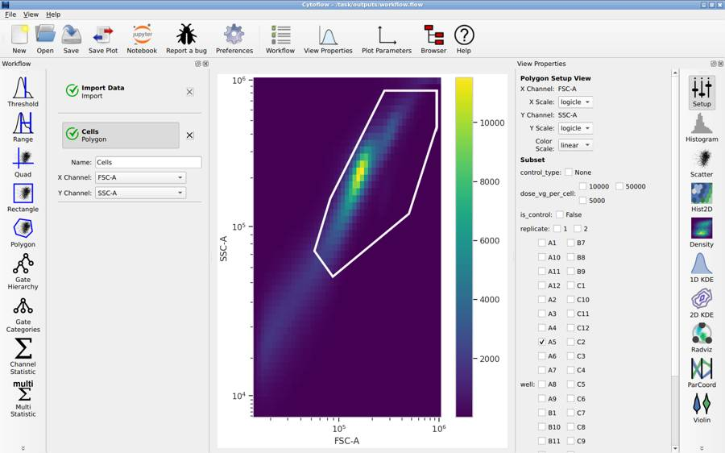
text(await tools.exec_command({cmd:"cu click 1133 567\ncu click 1075 678\nsleep 5\ncu screenshot /tmp/screen.png","max_output_tokens":1000})); image((await tools.view_image({path:"/tmp/screen.png"})).image_url);
Script completed Wall time 5.3 seconds Output:
{"chunk_id":"0df87f","wall_time_seconds":5.12813361,"exit_code":0,"original_token_count":4,"output":"/tmp/screen.png\n"}{
"duration_ms": 15000
}Wall time: 15.0217 seconds Sleep completed.
text(await tools.exec_command({cmd:"cu screenshot /tmp/screen.png","max_output_tokens":1000})); image((await tools.view_image({path:"/tmp/screen.png"})).image_url);
Script completed Wall time 0.1 seconds Output:
{"chunk_id":"cdf5a0","wall_time_seconds":0.00000771,"exit_code":0,"original_token_count":4,"output":"/tmp/screen.png\n"}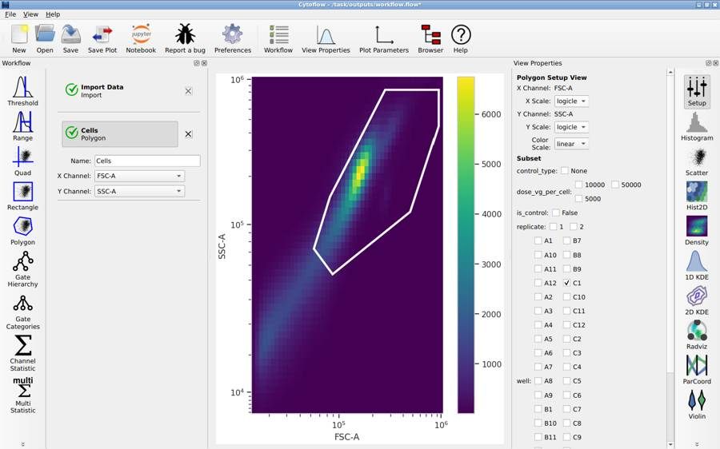
text(await tools.exec_command({cmd:"cu key ctrl+s\ncu screenshot /task/outputs/Cells_C1.png\ncu click 46 454\nsleep 1\ncu screenshot /tmp/screen.png","max_output_tokens":1000})); image((await tools.view_image({path:"/tmp/screen.png"})).image_url);
Script completed Wall time 1.3 seconds Output:
{"chunk_id":"e3b2ad","wall_time_seconds":1.11193304,"exit_code":0,"original_token_count":11,"output":"/task/outputs/Cells_C1.png\n/tmp/screen.png\n"}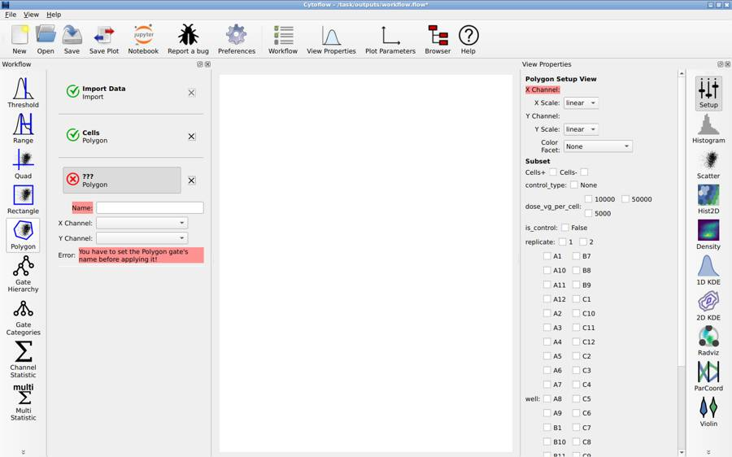
text(await tools.exec_command({cmd:"cu click 1088 338\ncu click 1075 504\ncu click 274 408\ncu type Singlets\ncu click 357 439\nsleep .3\ncu screenshot /tmp/screen.png","max_output_tokens":1000})); image((await tools.view_image({path:"/tmp/screen.png"})).image_url);
Script completed Wall time 1.0 seconds Output:
{"chunk_id":"eb139e","wall_time_seconds":0.851835739,"exit_code":0,"original_token_count":4,"output":"/tmp/screen.png\n"}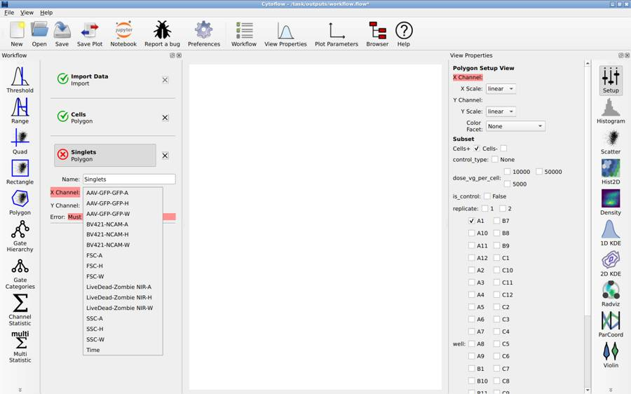
text(await tools.exec_command({cmd:"cu click 221 750\ncu click 356 470\nsleep .3\ncu screenshot /tmp/screen.png","max_output_tokens":1000})); image((await tools.view_image({path:"/tmp/screen.png"})).image_url);
Script completed Wall time 0.6 seconds Output:
{"chunk_id":"8f028d","wall_time_seconds":0.42526172,"exit_code":0,"original_token_count":4,"output":"/tmp/screen.png\n"}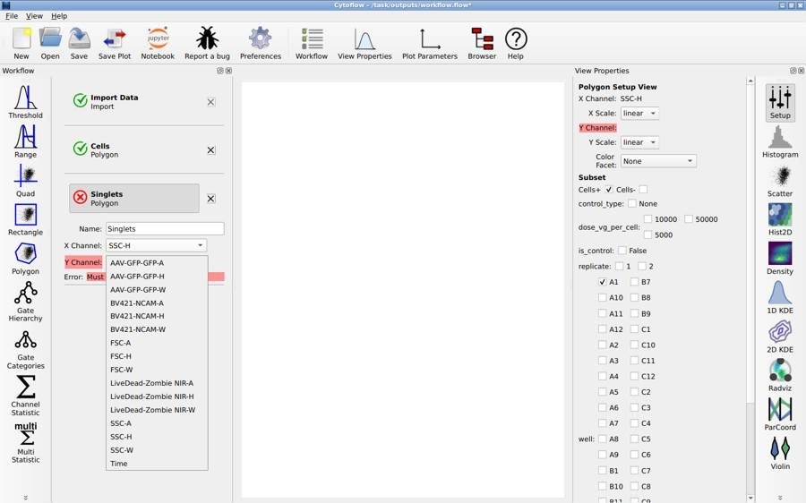
text(await tools.exec_command({cmd:"cu click 220 756\ncu click 768 70\nsleep 1\ncu screenshot /tmp/screen.png","max_output_tokens":1000})); image((await tools.view_image({path:"/tmp/screen.png"})).image_url);
Script completed Wall time 1.3 seconds Output:
{"chunk_id":"156389","wall_time_seconds":1.12408172,"exit_code":0,"original_token_count":4,"output":"/tmp/screen.png\n"}text(await tools.exec_command({cmd:"cu click 1098 844\ncu key ctrl+s\nsleep 5\ncu screenshot /tmp/screen.png","max_output_tokens":1000})); image((await tools.view_image({path:"/tmp/screen.png"})).image_url);
Script completed Wall time 5.2 seconds Output:
{"chunk_id":"82dc19","wall_time_seconds":5.0476083,"exit_code":0,"original_token_count":4,"output":"/tmp/screen.png\n"}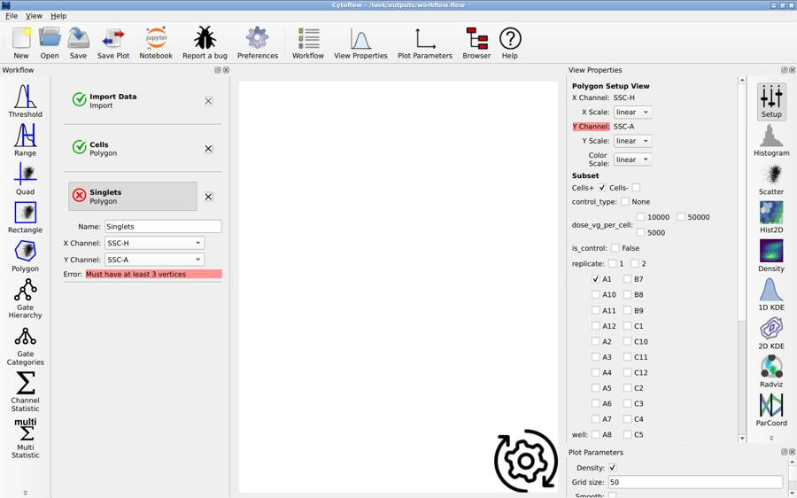
{
"duration_ms": 15000
}Wall time: 15.0143 seconds Sleep completed.
text(await tools.exec_command({cmd:"cu screenshot /tmp/screen.png","max_output_tokens":1000})); image((await tools.view_image({path:"/tmp/screen.png"})).image_url);
Script completed Wall time 0.1 seconds Output:
{"chunk_id":"406693","wall_time_seconds":0.00000469,"exit_code":0,"original_token_count":4,"output":"/tmp/screen.png\n"}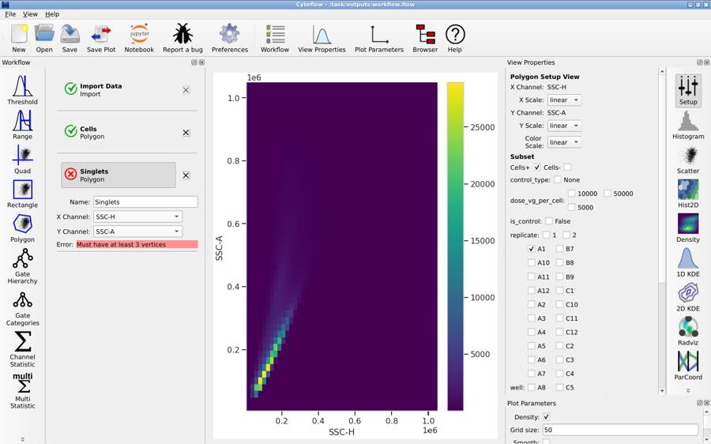
text(await tools.exec_command({cmd:"cu click 512 805\ncu click 520 805\ncu click 751 261\ncu click 710 261\ncu click 512 789\ncu click 512 805\nsleep 1\ncu key ctrl+s\ncu screenshot /tmp/screen.png","max_output_tokens":1000})); image((await tools.view_image({path:"/tmp/screen.png"})).image_url);
Script completed Wall time 2.2 seconds Output:
{"chunk_id":"974c01","wall_time_seconds":1.7002916099999998,"exit_code":0,"original_token_count":4,"output":"/tmp/screen.png\n"}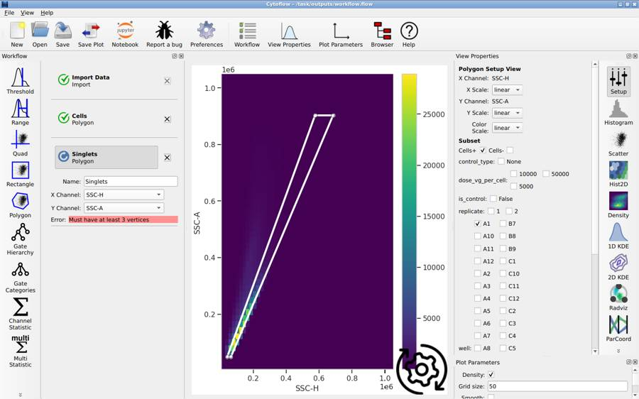
{
"duration_ms": 20000
}Wall time: 20.0040 seconds Sleep completed.
text(await tools.exec_command({cmd:"cu screenshot /tmp/screen.png","max_output_tokens":1000})); image((await tools.view_image({path:"/tmp/screen.png"})).image_url);
Script completed Wall time 0.1 seconds Output:
{"chunk_id":"c94e58","wall_time_seconds":0.00000524,"exit_code":0,"original_token_count":4,"output":"/tmp/screen.png\n"}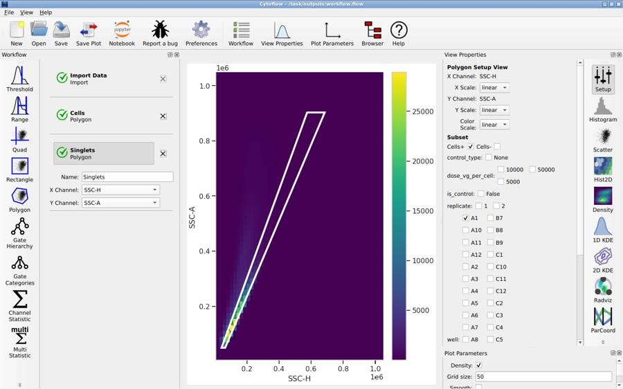
text(await tools.exec_command({cmd:"cu screenshot /task/outputs/Singlets_A1.png\ncu click 47 245\nsleep 1\ncu screenshot /tmp/screen.png","max_output_tokens":1000})); image((await tools.view_image({path:"/tmp/screen.png"})).image_url);
Script completed Wall time 1.3 seconds Output:
{"chunk_id":"87496d","wall_time_seconds":1.10185454,"exit_code":0,"original_token_count":12,"output":"/task/outputs/Singlets_A1.png\n/tmp/screen.png\n"}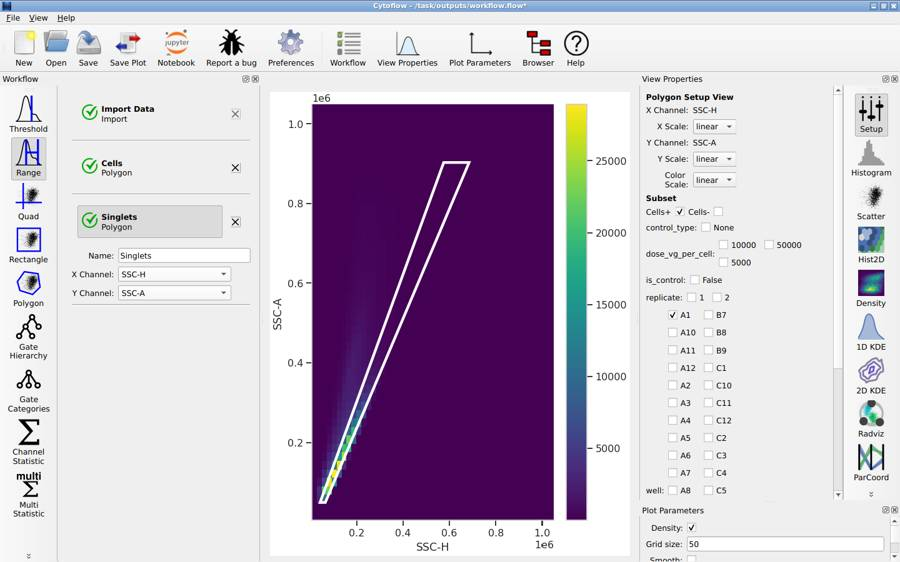
text(await tools.exec_command({cmd:"sleep 1\ncu screenshot /tmp/screen.png","max_output_tokens":1000})); image((await tools.view_image({path:"/tmp/screen.png"})).image_url);
Script completed Wall time 1.1 seconds Output:
{"chunk_id":"c66350","wall_time_seconds":0.91280704,"exit_code":0,"original_token_count":4,"output":"/tmp/screen.png\n"}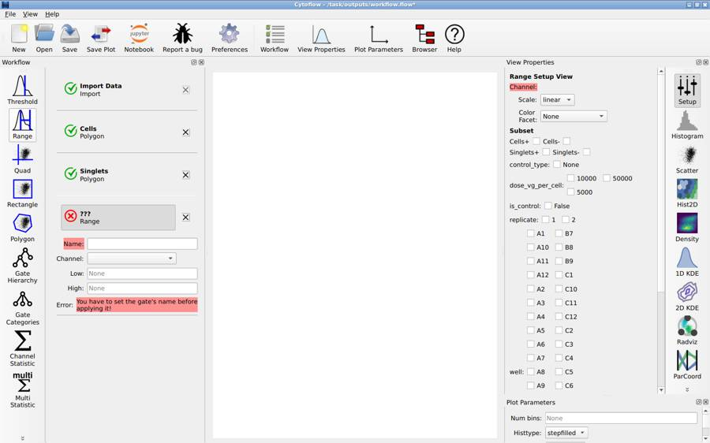
text(await tools.exec_command({cmd:"cu click 1088 286\ncu click 1107 309\ncu click 1075 474\ncu click 1075 670\ncu click 1134 558\ncu click 279 494\ncu type Live\ncu click 346 524\nsleep .3\ncu screenshot /tmp/screen.png","max_output_tokens":1000})); image((await tools.view_image({path:"/tmp/screen.png"})).image_url);
Script completed Wall time 1.2 seconds Output:
{"chunk_id":"9b3eab","wall_time_seconds":1.06224079,"exit_code":0,"original_token_count":4,"output":"/tmp/screen.png\n"}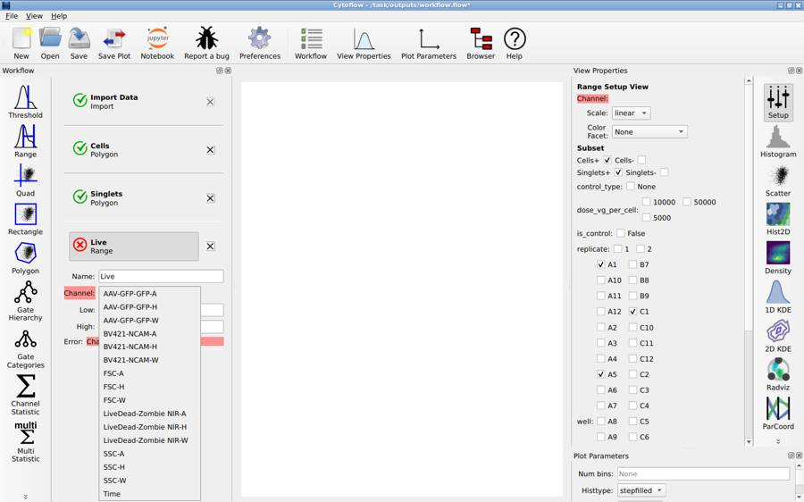
text(await tools.exec_command({cmd:"cu click 261 742\ncu click 1152 202\nsleep .3\ncu screenshot /tmp/screen.png","max_output_tokens":1000})); image((await tools.view_image({path:"/tmp/screen.png"})).image_url);
Script completed Wall time 0.6 seconds Output:
{"chunk_id":"5730e0","wall_time_seconds":0.42734079,"exit_code":0,"original_token_count":4,"output":"/tmp/screen.png\n"}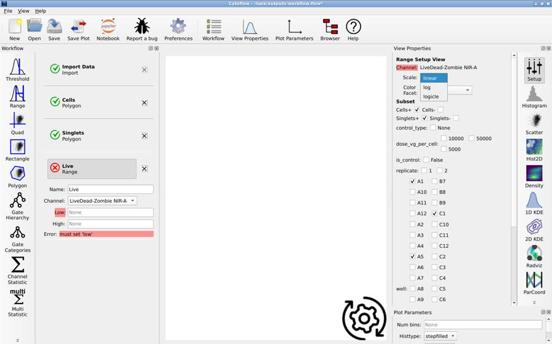
text(await tools.exec_command({cmd:"cu click 1131 253\ncu click 1219 235\nsleep .3\ncu screenshot /tmp/screen.png","max_output_tokens":1000})); image((await tools.view_image({path:"/tmp/screen.png"})).image_url);
Script completed Wall time 0.6 seconds Output:
{"chunk_id":"480809","wall_time_seconds":0.42686703,"exit_code":0,"original_token_count":4,"output":"/tmp/screen.png\n"}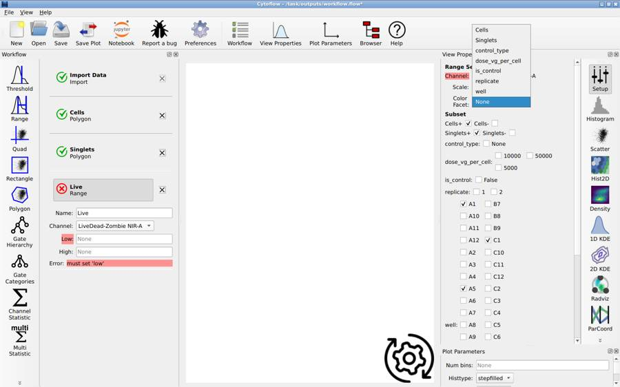
text(await tools.exec_command({cmd:"cu click 1116 212\ncu click 1179 877\nsleep .3\ncu screenshot /tmp/screen.png","max_output_tokens":1000})); image((await tools.view_image({path:"/tmp/screen.png"})).image_url);
Script completed Wall time 0.6 seconds Output:
{"chunk_id":"545285","wall_time_seconds":0.42665679,"exit_code":0,"original_token_count":4,"output":"/tmp/screen.png\n"}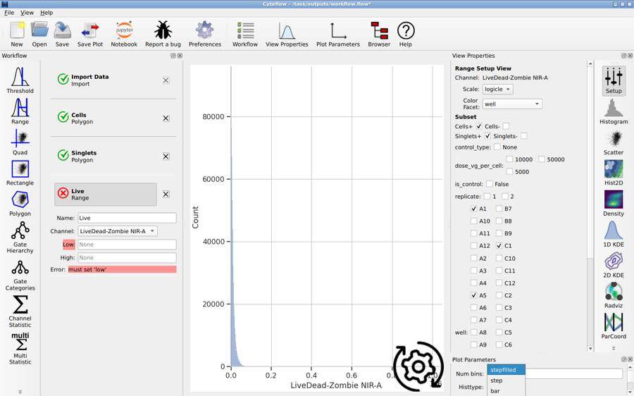
text(await tools.exec_command({cmd:"cu click 1130 864\ncu click 1238 848\ncu key ctrl+a\ncu type 256\ncu key Tab\ncu key ctrl+s\nsleep 5\ncu screenshot /tmp/screen.png","max_output_tokens":1000})); image((await tools.view_image({path:"/tmp/screen.png"})).image_url);
Script completed Wall time 5.4 seconds Output:
{"chunk_id":"ba74c3","wall_time_seconds":5.275164109,"exit_code":0,"original_token_count":4,"output":"/tmp/screen.png\n"}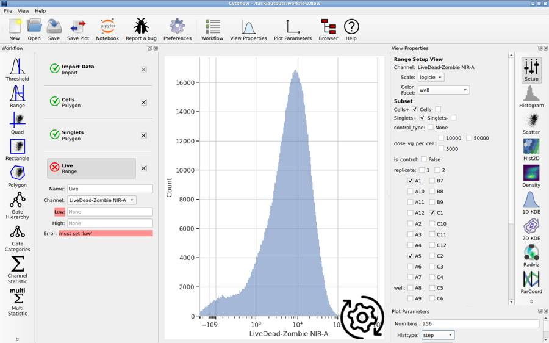
{
"duration_ms": 20000
}Wall time: 20.0033 seconds Sleep completed.
text(await tools.exec_command({cmd:"cu screenshot /tmp/screen.png","max_output_tokens":1000})); image((await tools.view_image({path:"/tmp/screen.png"})).image_url);
Script completed Wall time 0.1 seconds Output:
{"chunk_id":"dc9f7c","wall_time_seconds":0.00000465,"exit_code":0,"original_token_count":4,"output":"/tmp/screen.png\n"}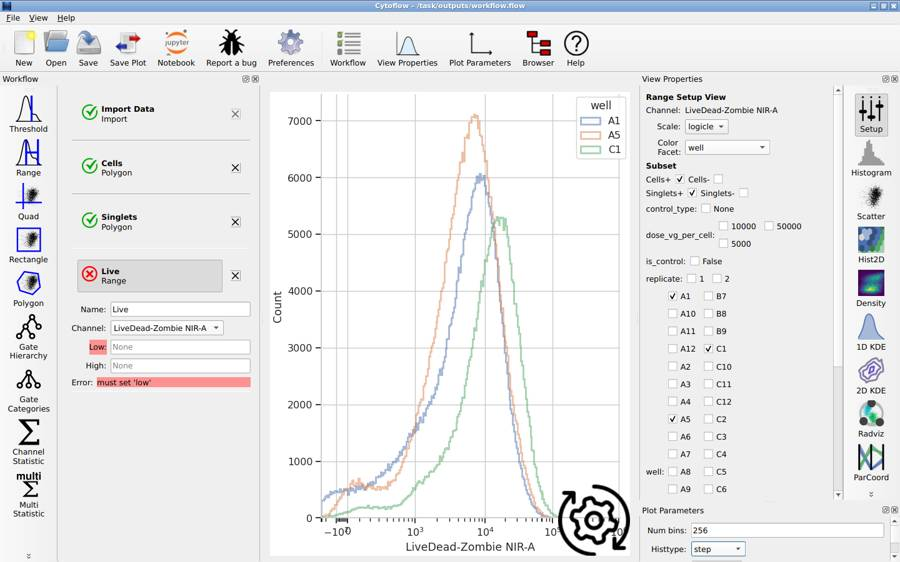
text(await tools.exec_command({cmd:"cu click 273 555\ncu key ctrl+a\ncu type -1000000\ncu key Tab\ncu click 276 586\ncu key ctrl+a\ncu type 300\ncu key Tab\ncu key ctrl+s\nsleep 3\ncu screenshot /tmp/screen.png","max_output_tokens":1000})); image((await tools.view_image({path:"/tmp/screen.png"})).image_url);
Script completed Wall time 3.7 seconds Output:
{"chunk_id":"1f6824","wall_time_seconds":3.53221959,"exit_code":0,"original_token_count":4,"output":"/tmp/screen.png\n"}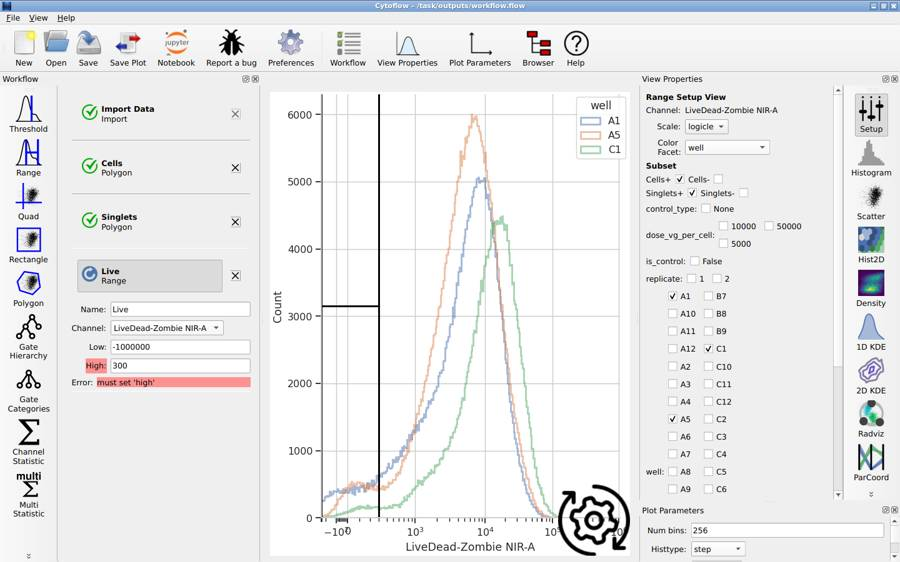
text(await tools.exec_command({cmd:"cu click 1134 474\ncu click 1075 726\ncu scroll 1257 698 down 4\nsleep 1\ncu screenshot /tmp/screen.png","max_output_tokens":1000})); image((await tools.view_image({path:"/tmp/screen.png"})).image_url);
Script completed Wall time 1.7 seconds Output:
{"chunk_id":"ec0702","wall_time_seconds":1.5309329900000002,"exit_code":0,"original_token_count":4,"output":"/tmp/screen.png\n"}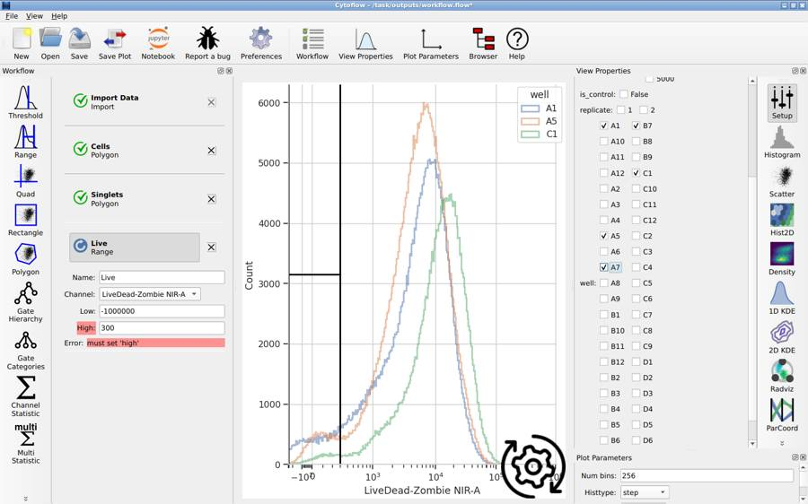
text(await tools.exec_command({cmd:"cu click 1133 562\ncu click 1133 646\ncu key ctrl+s\nsleep 5\ncu screenshot /tmp/screen.png","max_output_tokens":1000})); image((await tools.view_image({path:"/tmp/screen.png"})).image_url);
Script completed Wall time 5.3 seconds Output:
{"chunk_id":"a3bdf8","wall_time_seconds":5.157108839,"exit_code":0,"original_token_count":4,"output":"/tmp/screen.png\n"}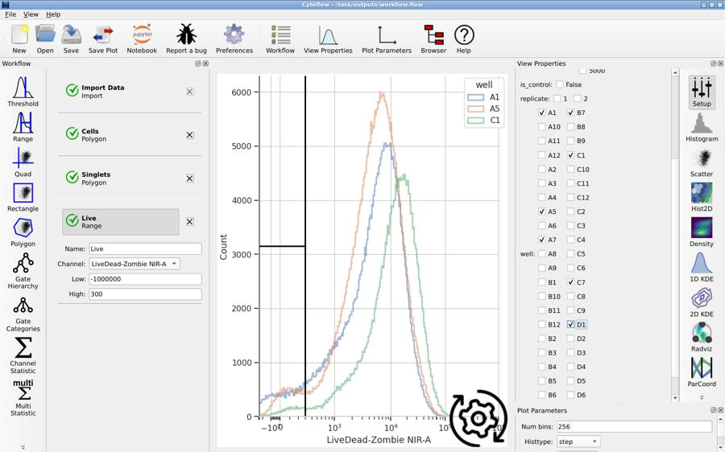
text(await tools.exec_command({cmd:"cu click 1075 561\ncu key ctrl+s\nsleep 5\ncu screenshot /tmp/screen.png","max_output_tokens":1000})); image((await tools.view_image({path:"/tmp/screen.png"})).image_url);
Script completed Wall time 5.2 seconds Output:
{"chunk_id":"c47d2a","wall_time_seconds":5.051514509,"exit_code":0,"original_token_count":4,"output":"/tmp/screen.png\n"}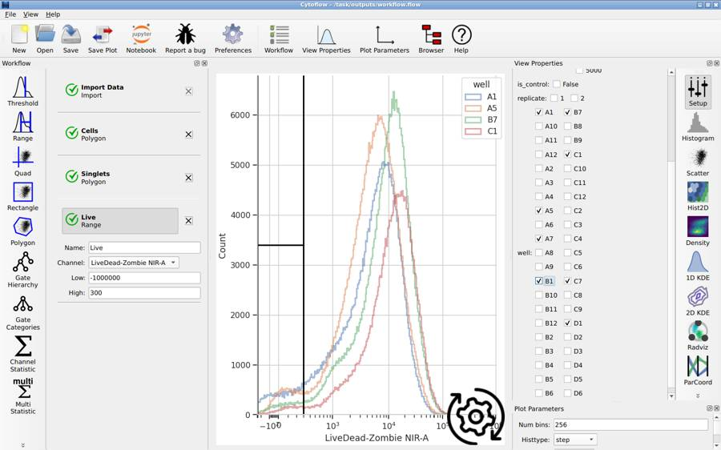
{
"duration_ms": 25000
}Wall time: 25.0035 seconds Sleep completed.
text(await tools.exec_command({cmd:"cu screenshot /tmp/screen.png","max_output_tokens":1000})); image((await tools.view_image({path:"/tmp/screen.png"})).image_url);
Script completed Wall time 0.1 seconds Output:
{"chunk_id":"940d91","wall_time_seconds":0.00000467,"exit_code":0,"original_token_count":4,"output":"/tmp/screen.png\n"}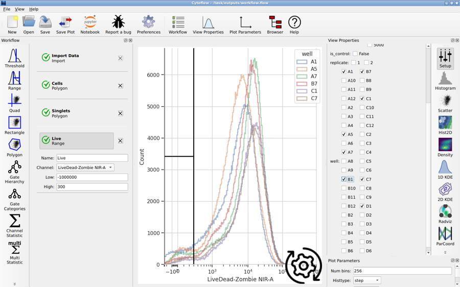
{
"duration_ms": 40000
}Wall time: 40.0044 seconds Sleep completed.
text(await tools.exec_command({cmd:"cu screenshot /tmp/screen.png\nfree -h","max_output_tokens":1000})); image((await tools.view_image({path:"/tmp/screen.png"})).image_url);
text(await tools.clock__curr_time({}));
Script completed Wall time 0.1 seconds Output:
{"chunk_id":"68779d","wall_time_seconds":0.00000444,"exit_code":0,"original_token_count":56,"output":"/tmp/screen.png\n total used free shared buff/cache available\nMem: 7.8Gi 6.5Gi 915Mi 5.7Mi 581Mi 1.2Gi\nSwap: 63Gi 3.5Gi 60Gi\n"}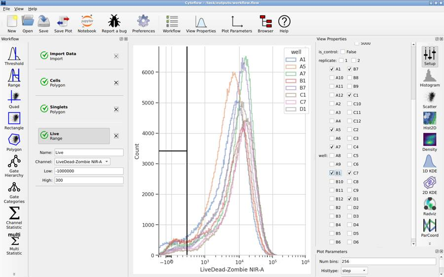
{"current_time":"2026-11-05 08:33:40 UTC"}text(await tools.exec_command({cmd:"cu screenshot /task/outputs/Live_boundary.png\ncu click 47 176\nsleep 1\ncu screenshot /tmp/screen.png","max_output_tokens":1000})); image((await tools.view_image({path:"/tmp/screen.png"})).image_url);
Script completed Wall time 1.3 seconds Output:
{"chunk_id":"a89289","wall_time_seconds":1.0797737,"exit_code":0,"original_token_count":12,"output":"/task/outputs/Live_boundary.png\n/tmp/screen.png\n"}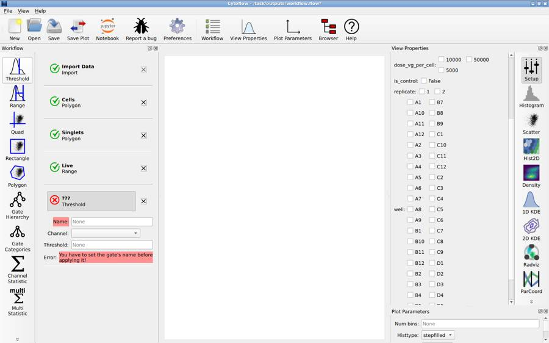
text(await tools.exec_command({cmd:"cu click 1075 267\ncu click 1075 520\ncu click 1075 605\ncu click 1133 267\ncu click 1133 351\ncu click 1133 605\ncu click 1133 689\ncu scroll 1232 360 up 8\ncu click 284 582\ncu key ctrl+a\ncu type GFP_pos\nsleep .5\ncu screenshot /tmp/screen.png","max_output_tokens":1000})); image((await tools.view_image({path:"/tmp/screen.png"})).image_url);
Script completed Wall time 2.5 seconds Output:
{"chunk_id":"847d2d","wall_time_seconds":2.283968509,"exit_code":0,"original_token_count":4,"output":"/tmp/screen.png\n"}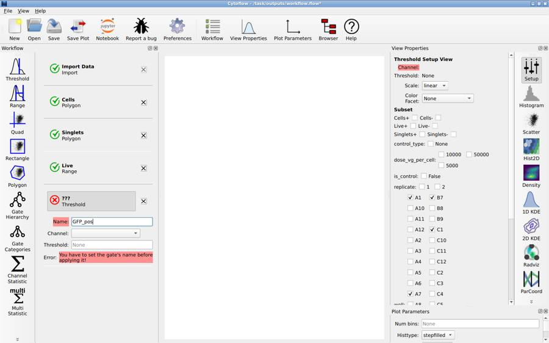
text(await tools.exec_command({cmd:"cu click 1088 309\ncu click 1083 330\ncu click 1107 352\ncu click 1165 224\nsleep .2\ncu screenshot /tmp/screen.png","max_output_tokens":1000})); image((await tools.view_image({path:"/tmp/screen.png"})).image_url);
Script completed Wall time 0.7 seconds Output:
{"chunk_id":"3f5305","wall_time_seconds":0.53586334,"exit_code":0,"original_token_count":4,"output":"/tmp/screen.png\n"}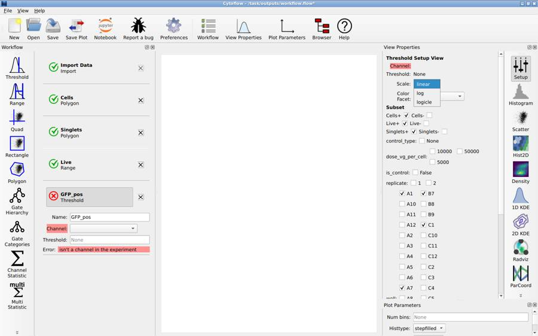
text(await tools.exec_command({cmd:"cu click 1140 272\ncu click 1230 258\nsleep .2\ncu screenshot /tmp/screen.png","max_output_tokens":1000})); image((await tools.view_image({path:"/tmp/screen.png"})).image_url);
Script completed Wall time 0.5 seconds Output:
{"chunk_id":"5db11e","wall_time_seconds":0.32471205,"exit_code":0,"original_token_count":4,"output":"/tmp/screen.png\n"}text(await tools.exec_command({cmd:"cu click 1127 235\ncu click 1182 877\nsleep .2\ncu screenshot /tmp/screen.png","max_output_tokens":1000})); image((await tools.view_image({path:"/tmp/screen.png"})).image_url);
Script completed Wall time 0.5 seconds Output:
{"chunk_id":"e9a4ff","wall_time_seconds":0.32391503,"exit_code":0,"original_token_count":4,"output":"/tmp/screen.png\n"}text(await tools.exec_command({cmd:"cu click 1135 865\ncu click 1230 848\ncu key ctrl+a\ncu type 256\ncu key Tab\ncu click 356 612\nsleep .2\ncu screenshot /tmp/screen.png","max_output_tokens":1000})); image((await tools.view_image({path:"/tmp/screen.png"})).image_url);
Script completed Wall time 0.7 seconds Output:
{"chunk_id":"71c7da","wall_time_seconds":0.5549458,"exit_code":0,"original_token_count":4,"output":"/tmp/screen.png\n"}text(await tools.exec_command({cmd:"cu click 271 528\ncu key ctrl+s\nsleep 5\ncu screenshot /tmp/screen.png","max_output_tokens":1000})); image((await tools.view_image({path:"/tmp/screen.png"})).image_url);
Script completed Wall time 5.3 seconds Output:
{"chunk_id":"4ec8fa","wall_time_seconds":5.04969636,"exit_code":0,"original_token_count":4,"output":"/tmp/screen.png\n"}{
"duration_ms": 15000
}Wall time: 15.0031 seconds Sleep completed.
text(await tools.exec_command({cmd:"cu screenshot /tmp/screen.png","max_output_tokens":1000})); image((await tools.view_image({path:"/tmp/screen.png"})).image_url);
Script completed Wall time 0.1 seconds Output:
{"chunk_id":"65ca97","wall_time_seconds":0.00000414,"exit_code":0,"original_token_count":4,"output":"/tmp/screen.png\n"}text(await tools.exec_command({cmd:"cu click 282 642\ncu key ctrl+a\ncu type 1000\ncu key Tab\nsleep 1\ncu key ctrl+s\ncu screenshot /tmp/screen.png","max_output_tokens":1000})); image((await tools.view_image({path:"/tmp/screen.png"})).image_url);
Script completed Wall time 1.4 seconds Output:
{"chunk_id":"844e14","wall_time_seconds":1.19823354,"exit_code":0,"original_token_count":4,"output":"/tmp/screen.png\n"}{
"duration_ms": 15000
}Wall time: 15.0049 seconds Sleep completed.
text(await tools.exec_command({cmd:"cu screenshot /tmp/screen.png","max_output_tokens":1000})); image((await tools.view_image({path:"/tmp/screen.png"})).image_url);
Script completed Wall time 0.1 seconds Output:
{"chunk_id":"491f7a","wall_time_seconds":0.00000486,"exit_code":0,"original_token_count":4,"output":"/tmp/screen.png\n"}text(await tools.exec_command({cmd:"cu screenshot /task/outputs/GFP_boundary_initial.png\ncu click 45 695\nsleep 1\ncu screenshot /tmp/screen.png","max_output_tokens":1000})); image((await tools.view_image({path:"/tmp/screen.png"})).image_url);
Script completed Wall time 1.3 seconds Output:
{"chunk_id":"aea49f","wall_time_seconds":1.07701917,"exit_code":0,"original_token_count":14,"output":"/task/outputs/GFP_boundary_initial.png\n/tmp/screen.png\n"}text(await tools.exec_command({cmd:"cu click 274 667\ncu key ctrl+a\ncu type MembershipCounts\ncu click 185 757\ncu click 185 785\ncu click 185 812\ncu click 185 841\ncu click 298 841\ncu click 347 698\nsleep .3\ncu screenshot /tmp/screen.png","max_output_tokens":1000})); image((await tools.view_image({path:"/tmp/screen.png"})).image_url);
Script completed Wall time 1.6 seconds Output:
{"chunk_id":"7b2276","wall_time_seconds":1.39730637,"exit_code":0,"original_token_count":4,"output":"/tmp/screen.png\n"}text(await tools.exec_command({cmd:"cu click 204 672\ncu click 320 729\nsleep .3\ncu screenshot /tmp/screen.png","max_output_tokens":1000})); image((await tools.view_image({path:"/tmp/screen.png"})).image_url);
Script completed Wall time 0.6 seconds Output:
{"chunk_id":"011425","wall_time_seconds":0.424353749,"exit_code":0,"original_token_count":4,"output":"/tmp/screen.png\n"}text(await tools.exec_command({cmd:"cu click 209 576\ncu key ctrl+s\ncu scroll 1397 740 down 6\nsleep 1\ncu screenshot /tmp/screen.png","max_output_tokens":1000})); image((await tools.view_image({path:"/tmp/screen.png"})).image_url);
Script completed Wall time 1.9 seconds Output:
{"chunk_id":"68035b","wall_time_seconds":1.68727081,"exit_code":0,"original_token_count":4,"output":"/tmp/screen.png\n"}text(await tools.exec_command({cmd:"cu click 1393 791\nsleep 1\ncu screenshot /tmp/screen.png","max_output_tokens":1000})); image((await tools.view_image({path:"/tmp/screen.png"})).image_url);
Script completed Wall time 1.2 seconds Output:
{"chunk_id":"87d068","wall_time_seconds":1.02141638,"exit_code":0,"original_token_count":4,"output":"/tmp/screen.png\n"}text(await tools.exec_command({cmd:"cu click 1400 597\nsleep 1\ncu screenshot /tmp/screen.png","max_output_tokens":1000})); image((await tools.view_image({path:"/tmp/screen.png"})).image_url);
Script completed Wall time 1.7 seconds Output:
{"chunk_id":"1cd3a9","wall_time_seconds":1.20653741,"exit_code":0,"original_token_count":4,"output":"/tmp/screen.png\n"}{
"duration_ms": 20000
}Wall time: 20.3901 seconds Sleep completed.
text(await tools.exec_command({cmd:"cu screenshot /tmp/screen.png\nfree -h","max_output_tokens":1000})); image((await tools.view_image({path:"/tmp/screen.png"})).image_url);
Script completed Wall time 0.4 seconds Output:
{"chunk_id":"5abfc4","wall_time_seconds":0.05469252,"exit_code":0,"original_token_count":56,"output":"/tmp/screen.png\n total used free shared buff/cache available\nMem: 7.8Gi 7.5Gi 126Mi 424Ki 377Mi 263Mi\nSwap: 63Gi 7.9Gi 56Gi\n"}text(await tools.exec_command({cmd:"python3 - <<'PY'\nfrom pathlib import Path\np=Path('/task/inputs/raw/Serotype panel_2_Rep2_Group_A1.fcs')\nwith p.open('rb') as f:\n h=f.read(58); start=int(h[10:18]); stop=int(h[18:26]); f.seek(start); raw=f.read(stop-start+1).decode('latin1')\nparts=raw.split(raw[0])[1:]; meta=dict(zip(parts[::2],parts[1::2]))\nfor k,v in meta.items():\n if k in ['$TOT','$TIMESTEP','$BTIM','$ETIM','$DATE','$PAR'] or (k.startswith('$P') and k.endswith(('N','R','S'))): print(k,v)\nPY","max_output_tokens":2500}));
text(await tools.exec_command({cmd:"cu screenshot /tmp/screen.png","max_output_tokens":1000})); image((await tools.view_image({path:"/tmp/screen.png"})).image_url);
Script completed Wall time 0.2 seconds Output:
{"chunk_id":"34327d","wall_time_seconds":0.00000742,"exit_code":0,"original_token_count":186,"output":"$PAR 16\n$TOT 978726\n$P1S Time\n$P1N Time\n$P1R 67108864\n$P2S FSC-A\n$P2N FSC-A\n$P2R 1048576\n$P3S SSC-A\n$P3N SSC-A\n$P3R 1048576\n$P4S AAV-GFP-GFP-A\n$P4N BL1-A\n$P4R 1048576\n$P5S LiveDead-Zombie NIR-A\n$P5N RL3-A\n$P5R 1048576\n$P6S BV421-NCAM-A\n$P6N VL1-A\n$P6R 1048576\n$P7S FSC-H\n$P7N FSC-H\n$P7R 1048576\n$P8S SSC-H\n$P8N SSC-H\n$P8R 1048576\n$P9S AAV-GFP-GFP-H\n$P9N BL1-H\n$P9R 1048576\n$P10S LiveDead-Zombie NIR-H\n$P10N RL3-H\n$P10R 1048576\n$P11S BV421-NCAM-H\n$P11N VL1-H\n$P11R 1048576\n$P12S FSC-W\n$P12N FSC-W\n$P12R 1024\n$P13S SSC-W\n$P13N SSC-W\n$P13R 1024\n$P14S AAV-GFP-GFP-W\n$P14N BL1-W\n$P14R 1024\n$P15S LiveDead-Zombie NIR-W\n$P15N RL3-W\n$P15R 1024\n$P16S BV421-NCAM-W\n$P16N VL1-W\n$P16R 1024\n$BTIM 09:28:23\n$DATE 06-Mar-2023\n$ETIM 09:29:09\n$TIMESTEP 0.001\n"}{"chunk_id":"6fea0e","wall_time_seconds":0.00000404,"exit_code":0,"original_token_count":4,"output":"/tmp/screen.png\n"}text(await tools.exec_command({cmd:"cu click 1233 181\nsleep .2\ncu screenshot /tmp/screen.png","max_output_tokens":1000})); image((await tools.view_image({path:"/tmp/screen.png"})).image_url);
Script completed Wall time 0.4 seconds Output:
{"chunk_id":"5fdfbe","wall_time_seconds":0.21904208,"exit_code":0,"original_token_count":4,"output":"/tmp/screen.png\n"}text(await tools.exec_command({cmd:"cu click 1164 205\nsleep 2\ncu screenshot /tmp/screen.png","max_output_tokens":1000})); image((await tools.view_image({path:"/tmp/screen.png"})).image_url);
Script completed Wall time 2.2 seconds Output:
{"chunk_id":"4aedc6","wall_time_seconds":2.019897889,"exit_code":0,"original_token_count":4,"output":"/tmp/screen.png\n"}text(await tools.exec_command({cmd:"cu click 1160 211\nsleep 1\ncu screenshot /tmp/screen.png","max_output_tokens":1000})); image((await tools.view_image({path:"/tmp/screen.png"})).image_url);
Script completed Wall time 1.2 seconds Output:
{"chunk_id":"3a1c9f","wall_time_seconds":1.02368766,"exit_code":0,"original_token_count":4,"output":"/tmp/screen.png\n"}text(await tools.exec_command({cmd:"cu paste /task/outputs/membership_counts_export.csv\nsleep .5\ncu click 980 566\nsleep 1\ncu screenshot /tmp/screen.png","max_output_tokens":1000})); image((await tools.view_image({path:"/tmp/screen.png"})).image_url);
Script completed Wall time 3.0 seconds Output:
{"chunk_id":"6d3316","wall_time_seconds":2.85279708,"exit_code":0,"original_token_count":4,"output":"/tmp/screen.png\n"}text(await tools.exec_command({cmd:"head -10 /task/outputs/membership_counts_export.csv\nwc -l /task/outputs/membership_counts_export.csv\ncu key ctrl+s","max_output_tokens":1500}));
Script completed
Wall time 0.1 seconds
Output:
{"chunk_id":"9859c3","wall_time_seconds":0.00000451,"exit_code":0,"original_token_count":68,"output":"Cells,GFP_pos,Live,Singlets,well,FSC-A\n0,0,0,0,A1,158192.0\n0,0,0,0,A10,153540.0\n0,0,0,0,A11,150034.0\n0,0,0,0,A12,168760.0\n0,0,0,0,A2,175779.0\n0,0,0,0,A3,155996.0\n0,0,0,0,A4,153592.0\n0,0,0,0,A5,167616.0\n0,0,0,0,A6,135305.0\n672 /task/outputs/membership_counts_export.csv\n"}text(await tools.exec_command({cmd:"cat > /task/outputs/reshape_counts.py <<'PY'\nfrom pathlib import Path\nimport pandas as pd\nout=Path('/task/outputs')\nlayout=pd.read_csv('/task/inputs/plate_layout.csv')\ns=pd.read_csv(out/'membership_counts_export.csv')\nrows=[]; summaries=[]\nfor r in layout.itertuples(index=False):\n w=s[s.well.eq(r.well)]; total=int(w['FSC-A'].sum()); parent=total; mask=pd.Series(True,index=w.index); summary={'well':r.well,'total':total}\n for pop,parent_name in zip(['Cells','Singlets','Live','GFP_pos'],['all_events','Cells','Singlets','Live']):\n mask &= w[pop].eq(1); count=int(w.loc[mask,'FSC-A'].sum())\n rows.append(dict(file=r.file,well=r.well,population=pop,count=count,parent_population=parent_name,pct_of_parent=100*count/parent if parent else 0.0))\n summary[pop]=count; summary[pop+'_pct']=100*count/parent if parent else 0.0; parent=count\n summaries.append(summary)\npd.DataFrame(rows).to_csv(out/'counts.csv',index=False)\npd.DataFrame(summaries).to_csv(out/'population_summary.csv',index=False)\n# Read FCS TEXT metadata only, never the DATA segment.\nmetadata=[]\nfor r in layout.itertuples(index=False):\n with (Path('/task/inputs/raw')/r.file).open('rb') as f:\n h=f.read(58); start=int(h[10:18]); end=int(h[18:26]); f.seek(start); raw=f.read(end-start+1).decode('latin1')\n fields=raw.split(raw[0])[1:]; m=dict(zip(fields[::2],fields[1::2]))\n metadata.append({'well':r.well,'metadata_total':int(m['$TOT']),'timestep_seconds':m.get('$TIMESTEP'),'begin_time':m.get('$BTIM'),'end_time':m.get('$ETIM'),'FSC_A_range':m.get('$P2R'),'SSC_A_range':m.get('$P3R')})\nmeta=pd.DataFrame(metadata); meta.to_csv(out/'acquisition_metadata.csv',index=False)\na=pd.DataFrame(summaries).merge(meta,on='well'); assert a.total.eq(a.metadata_total).all(); assert len(rows)==168\nprint(a[['well','total','Cells','Singlets','Live','GFP_pos','GFP_pos_pct','begin_time','end_time']].to_string(index=False))\nprint('Total:',a.total.sum(),'all 42 agree with TEXT $TOT metadata')\nPY\npython3 /task/outputs/reshape_counts.py","max_output_tokens":5000}));
Script completed
Wall time 0.5 seconds
Output:
{"chunk_id":"61a25f","wall_time_seconds":0.35230204,"exit_code":0,"original_token_count":852,"output":"well total Cells Singlets Live GFP_pos GFP_pos_pct begin_time end_time\n A1 978726 664733 385092 27053 96 0.354859 09:28:23 09:29:09\n A2 935707 620570 438839 19632 148 0.753871 09:29:39 09:31:17\n A3 925910 616447 438211 22001 180 0.818145 09:31:46 09:33:24\n A4 892332 602663 428213 18367 174 0.947351 09:33:53 09:35:31\n A5 986514 653064 451437 20565 194 0.943350 09:36:00 09:37:39\n A6 755396 508335 378190 13974 174 1.245170 09:38:09 09:39:46\n A7 848859 546262 381990 16872 101 0.598625 09:40:14 09:41:53\n A8 710140 471006 348757 16449 134 0.814639 09:42:21 09:44:00\n A9 958681 604586 397258 23027 69 0.299648 09:44:28 09:46:06\n A10 870505 564318 392277 19683 108 0.548697 09:46:35 09:48:14\n A11 844586 531119 381637 21849 149 0.681953 09:48:42 09:50:21\n A12 947510 604188 422809 20625 247 1.197576 09:50:50 09:52:28\n B1 733754 432106 298117 19159 11 0.057414 09:52:57 09:54:36\n B2 728886 429078 298399 18005 29 0.161066 09:55:04 09:56:43\n B3 667298 397359 290055 12377 138 1.114971 09:57:11 09:58:50\n B4 598212 352654 267808 15126 50 0.330557 09:59:18 10:00:56\n B5 837561 517451 370722 23459 120 0.511531 10:01:24 10:03:03\n B6 877336 533160 371051 26269 116 0.441585 10:03:31 10:05:10\n B7 954909 593105 405100 11152 100 0.896700 10:05:38 10:07:17\n B8 918778 574668 406682 12141 174 1.433160 10:07:46 10:09:24\n B9 862070 554391 397412 12869 175 1.359857 10:09:53 10:11:32\n B10 1083648 679946 459888 13824 171 1.236979 10:12:00 10:13:39\n B11 988574 616360 431231 13596 207 1.522507 10:14:08 10:15:47\n B12 904103 560916 400358 11578 237 2.046986 10:16:15 10:17:54\n C1 624718 369628 289386 5914 109 1.843084 10:18:23 10:20:01\n C2 695572 409585 309110 8508 181 2.127409 10:20:29 10:22:08\n C3 656321 381762 282251 9958 106 1.064471 10:22:36 10:24:14\n C4 679504 411988 311619 8551 129 1.508595 10:24:43 10:26:21\n C5 689593 417975 318674 7958 101 1.269163 10:26:49 10:28:28\n C6 891011 536038 381334 9307 88 0.945525 10:28:56 10:30:34\n C7 649735 369046 280099 8233 108 1.311794 10:31:03 10:32:42\n C8 639518 373504 285827 9551 352 3.685478 10:33:10 10:34:49\n C9 801299 494306 356216 12820 238 1.856474 10:35:17 10:36:55\n C10 927162 580990 405543 14153 197 1.391931 10:37:24 10:39:02\n C11 868685 545269 388956 12441 130 1.044932 10:39:31 10:41:09\n C12 578214 358987 281866 7567 61 0.806132 10:41:38 10:43:16\n D1 800840 484967 352433 10989 51 0.464100 10:43:44 10:45:23\n D2 894591 556336 397800 12874 137 1.064160 10:45:51 10:47:30\n D3 915097 563513 387983 15746 79 0.501715 10:47:59 10:49:37\n D4 925805 584827 409757 13665 72 0.526894 10:50:06 10:51:44\n D5 153195 90640 81227 1281 13 1.014832 10:52:13 10:53:52\n D6 726651 446283 339997 5469 44 0.804535 10:54:19 10:55:58\nTotal: 33927506 all 42 agree with TEXT $TOT metadata\n"}text(await tools.exec_command({cmd:"cu click 46 889\nsleep .5\ncu screenshot /tmp/screen.png","max_output_tokens":1000})); image((await tools.view_image({path:"/tmp/screen.png"})).image_url);
Script completed Wall time 0.7 seconds Output:
{"chunk_id":"d03948","wall_time_seconds":0.52171698,"exit_code":0,"original_token_count":4,"output":"/tmp/screen.png\n"}text(await tools.exec_command({cmd:"cu click 130 481\nsleep 1\ncu screenshot /tmp/screen.png","max_output_tokens":1000})); image((await tools.view_image({path:"/tmp/screen.png"})).image_url);
Script completed Wall time 1.2 seconds Output:
{"chunk_id":"82e7d5","wall_time_seconds":1.01883863,"exit_code":0,"original_token_count":4,"output":"/tmp/screen.png\n"}text(await tools.exec_command({cmd:"sleep 1\ncu screenshot /tmp/screen.png","max_output_tokens":1000})); image((await tools.view_image({path:"/tmp/screen.png"})).image_url);
Script completed Wall time 1.1 seconds Output:
{"chunk_id":"c80960","wall_time_seconds":0.91463804,"exit_code":0,"original_token_count":4,"output":"/tmp/screen.png\n"}
text(await tools.exec_command({cmd:"cu click 47 890\ncu scroll 353 741 down 5\ncu click 1076 451\nsleep .5\ncu screenshot /tmp/screen.png","max_output_tokens":1000})); image((await tools.view_image({path:"/tmp/screen.png"})).image_url);
Script completed Wall time 1.3 seconds Output:
{"chunk_id":"44d468","wall_time_seconds":1.1332374,"exit_code":0,"original_token_count":4,"output":"/tmp/screen.png\n"}text(await tools.exec_command({cmd:"cu click 286 754\ncu key ctrl+a\ncu type Time_bin\ncu click 279 846\ncu key ctrl+a\ncu type 1000\ncu key Tab\ncu click 355 785\nsleep .3\ncu screenshot /tmp/screen.png","max_output_tokens":1000})); image((await tools.view_image({path:"/tmp/screen.png"})).image_url);
Script completed Wall time 1.1 seconds Output:
{"chunk_id":"6f5c99","wall_time_seconds":0.919137289,"exit_code":0,"original_token_count":4,"output":"/tmp/screen.png\n"}text(await tools.exec_command({cmd:"cu click 211 886\ncu key ctrl+s\nsleep 5\ncu screenshot /tmp/screen.png","max_output_tokens":1000})); image((await tools.view_image({path:"/tmp/screen.png"})).image_url);
Script completed Wall time 5.2 seconds Output:
{"chunk_id":"78dd9a","wall_time_seconds":5.058055869,"exit_code":0,"original_token_count":4,"output":"/tmp/screen.png\n"}{
"duration_ms": 20000
}Wall time: 20.0036 seconds Sleep completed.
text(await tools.exec_command({cmd:"cu screenshot /tmp/screen.png","max_output_tokens":1000})); image((await tools.view_image({path:"/tmp/screen.png"})).image_url);
Script completed Wall time 0.1 seconds Output:
{"chunk_id":"55f40d","wall_time_seconds":0.00000438,"exit_code":0,"original_token_count":4,"output":"/tmp/screen.png\n"}text(await tools.exec_command({cmd:"cu click 47 692\nsleep 1\ncu scroll 339 737 down 8\nsleep .5\ncu screenshot /tmp/screen.png","max_output_tokens":1000})); image((await tools.view_image({path:"/tmp/screen.png"})).image_url);
Script completed Wall time 2.5 seconds Output:
{"chunk_id":"11a5b4","wall_time_seconds":2.33304346,"exit_code":0,"original_token_count":4,"output":"/tmp/screen.png\n"}text(await tools.exec_command({cmd:"cu click 281 716\ncu key ctrl+a\ncu type TimeCounts\ncu click 185 805\ncu scroll 121 751 down 6\nsleep .5\ncu screenshot /tmp/screen.png","max_output_tokens":1000})); image((await tools.view_image({path:"/tmp/screen.png"})).image_url);
Script completed Wall time 1.7 seconds Output:
{"chunk_id":"efdd8d","wall_time_seconds":1.51569463,"exit_code":0,"original_token_count":4,"output":"/tmp/screen.png\n"}text(await tools.exec_command({cmd:"cu click 185 543\ncu click 274 543\ncu click 346 370\nsleep .2\ncu screenshot /tmp/screen.png","max_output_tokens":1000})); image((await tools.view_image({path:"/tmp/screen.png"})).image_url);
Script completed Wall time 0.6 seconds Output:
{"chunk_id":"f83755","wall_time_seconds":0.43212738,"exit_code":0,"original_token_count":4,"output":"/tmp/screen.png\n"}text(await tools.exec_command({cmd:"cu click 204 394\ncu click 319 402\nsleep .2\ncu screenshot /tmp/screen.png","max_output_tokens":1000})); image((await tools.view_image({path:"/tmp/screen.png"})).image_url);
Script completed Wall time 0.5 seconds Output:
{"chunk_id":"7e71ab","wall_time_seconds":0.32324233,"exit_code":0,"original_token_count":4,"output":"/tmp/screen.png\n"}text(await tools.exec_command({cmd:"cu click 206 402\ncu key ctrl+s\ncu click 1393 791\nsleep .5\ncu screenshot /tmp/screen.png","max_output_tokens":1000})); image((await tools.view_image({path:"/tmp/screen.png"})).image_url);
Script completed Wall time 0.9 seconds Output:
{"chunk_id":"43cde5","wall_time_seconds":0.68630163,"exit_code":0,"original_token_count":4,"output":"/tmp/screen.png\n"}text(await tools.exec_command({cmd:"cu click 1400 595\nsleep 2\ncu screenshot /tmp/screen.png","max_output_tokens":1000})); image((await tools.view_image({path:"/tmp/screen.png"})).image_url);
Script completed Wall time 2.2 seconds Output:
{"chunk_id":"3c6350","wall_time_seconds":2.02992525,"exit_code":0,"original_token_count":4,"output":"/tmp/screen.png\n"}{
"duration_ms": 25000
}Wall time: 25.0392 seconds Sleep completed.
text(await tools.exec_command({cmd:"cu screenshot /tmp/screen.png","max_output_tokens":1000})); image((await tools.view_image({path:"/tmp/screen.png"})).image_url);
Script completed Wall time 0.2 seconds Output:
{"chunk_id":"92454f","wall_time_seconds":0.00000757,"exit_code":0,"original_token_count":4,"output":"/tmp/screen.png\n"}text(await tools.exec_command({cmd:"python3 - <<'PY'\nimport pandas as pd\ns=pd.read_csv('/task/outputs/population_summary.csv')\nprint('Lowest GFP fractions:')\nprint(s.nsmallest(8,'GFP_pos_pct')[['well','Live','GFP_pos','GFP_pos_pct']].to_string(index=False))\nprint('Lowest live counts:')\nprint(s.nsmallest(6,'Live')[['well','total','Cells','Singlets','Live']].to_string(index=False))\nm=pd.read_csv('/task/outputs/acquisition_metadata.csv'); print('Time steps:',m.timestep_seconds.unique())\nPY","max_output_tokens":1500}));
text(await tools.clock__curr_time({}));
Script completed
Wall time 0.5 seconds
Output:
{"chunk_id":"95e8c7","wall_time_seconds":0.32879043,"exit_code":0,"original_token_count":151,"output":"Lowest GFP fractions:\nwell Live GFP_pos GFP_pos_pct\n B1 19159 11 0.057414\n B2 18005 29 0.161066\n A9 23027 69 0.299648\n B4 15126 50 0.330557\n A1 27053 96 0.354859\n B6 26269 116 0.441585\n D1 10989 51 0.464100\n D3 15746 79 0.501715\nLowest live counts:\nwell total Cells Singlets Live\n D5 153195 90640 81227 1281\n D6 726651 446283 339997 5469\n C1 624718 369628 289386 5914\n C12 578214 358987 281866 7567\n C5 689593 417975 318674 7958\n C7 649735 369046 280099 8233\nTime steps: [0.001]\n"}
{"current_time":"2026-11-05 08:42:36 UTC"}{
"duration_ms": 30000
}Wall time: 30.0049 seconds Sleep completed.
text(await tools.exec_command({cmd:"cu screenshot /tmp/screen.png","max_output_tokens":1000})); image((await tools.view_image({path:"/tmp/screen.png"})).image_url);
Script completed Wall time 0.1 seconds Output:
{"chunk_id":"830f79","wall_time_seconds":0.00000423,"exit_code":0,"original_token_count":4,"output":"/tmp/screen.png\n"}text(await tools.exec_command({cmd:"cu click 1232 181\nsleep .2\ncu screenshot /tmp/screen.png","max_output_tokens":1000})); image((await tools.view_image({path:"/tmp/screen.png"})).image_url);
Script completed Wall time 0.4 seconds Output:
{"chunk_id":"c4317b","wall_time_seconds":0.22057191,"exit_code":0,"original_token_count":4,"output":"/tmp/screen.png\n"}text(await tools.exec_command({cmd:"cu click 1143 230\nsleep 1\ncu click 1168 210\nsleep .5\ncu screenshot /tmp/screen.png","max_output_tokens":1000})); image((await tools.view_image({path:"/tmp/screen.png"})).image_url);
Script completed Wall time 1.8 seconds Output:
{"chunk_id":"105afa","wall_time_seconds":1.63440023,"exit_code":0,"original_token_count":4,"output":"/tmp/screen.png\n"}text(await tools.exec_command({cmd:"cu paste /task/outputs/time_counts_export.csv\nsleep .5\ncu click 980 567\nsleep 1\ncu screenshot /tmp/screen.png","max_output_tokens":1000})); image((await tools.view_image({path:"/tmp/screen.png"})).image_url);
Script completed Wall time 3.0 seconds Output:
{"chunk_id":"692c64","wall_time_seconds":2.85646177,"exit_code":0,"original_token_count":4,"output":"/tmp/screen.png\n"}text(await tools.exec_command({cmd:"cu key ctrl+s\ncu click 46 890\nsleep .2\ncu click 129 482\nsleep 2\ncu click 46 890\ncu scroll 120 748 down 8\nsleep .5\ncu screenshot /tmp/screen.png","max_output_tokens":1000})); image((await tools.view_image({path:"/tmp/screen.png"})).image_url);
text(await tools.exec_command({cmd:"head -4 /task/outputs/time_counts_export.csv\nwc -l /task/outputs/time_counts_export.csv","max_output_tokens":1000}));
Script completed Wall time 4.0 seconds Output:
{"chunk_id":"42c044","wall_time_seconds":3.774431319,"exit_code":0,"original_token_count":4,"output":"/tmp/screen.png\n"}{"chunk_id":"180e4a","wall_time_seconds":0.00000262,"exit_code":0,"original_token_count":28,"output":"Cells,Time_bin,well,FSC-A\n0,0,A1,7370.0\n0,0,A10,3108.0\n0,0,A11,2911.0\n8131 /task/outputs/time_counts_export.csv\n"}text(await tools.exec_command({cmd:"cu click 46 890\nsleep .5\ncu screenshot /tmp/screen.png","max_output_tokens":1000})); image((await tools.view_image({path:"/tmp/screen.png"})).image_url);
text(await tools.exec_command({cmd:"cat > /task/outputs/analyze_time.py <<'PY'\nimport pandas as pd,numpy as np,matplotlib\nmatplotlib.use('Agg')\nimport matplotlib.pyplot as plt\nfrom pathlib import Path\np=Path('/task/outputs'); d=pd.read_csv(p/'time_counts_export.csv'); summary=pd.read_csv(p/'population_summary.csv'); meta=pd.read_csv(p/'acquisition_metadata.csv')\nr=d.groupby(['well','Time_bin'])['FSC-A'].sum().unstack(0).fillna(0)\nc=d[d.Cells.eq(1)].pivot(index='Time_bin',columns='well',values='FSC-A').fillna(0).reindex_like(r).fillna(0)\nassert (r.sum().sort_index().values==summary.set_index('well').total.sort_index().values).all()\nfig,axs=plt.subplots(7,6,figsize=(24,21),sharex=True)\nmetrics=[]\nfor ax,row in zip(axs.flat,summary.itertuples(index=False)):\n w=row.well; y=r[w]; occupied=y[y>0]; last=int(occupied.index.max()/1000); yy=y.loc[:last*1000]; interior=yy.iloc[2:-2]; med=float(interior.median()); early=float(yy.iloc[2:12].mean()); end=float(yy.iloc[-11:-1].mean())\n lo=interior[interior<.25*med]; hi=interior[interior>2.5*med]\n metrics.append({'well':w,'last_bin_s':last,'median_rate':med,'first_10_rate':early,'last_10_rate':end,'end_start_ratio':end/early,'min_interior_rate':float(interior.min()),'max_interior_rate':float(interior.max()),'low_bins_s':','.join(str(int(x/1000)) for x in lo.index),'high_bins_s':','.join(str(int(x/1000)) for x in hi.index),'rate_cv':float(interior.std()/interior.mean())})\n ax.step(yy.index/1000,yy.values,where='post',label='All events',color='#286090',lw=1)\n ax.step(yy.index/1000,c.loc[yy.index,w],where='post',label='Cells',color='#4e9d63',lw=1)\n ax.set_title(f'{w}: N={row.total:,}; Live={row.Live:,}',fontsize=10); ax.grid(alpha=.25); ax.set_xlim(0,100); ax.tick_params(labelsize=8)\nfor ax in axs[-1]: ax.set_xlabel('Acquisition Time (s; 1-s bins)')\nfor ax in axs[:,0]:ax.set_ylabel('Events / second')\naxs[0,0].legend(fontsize=8);fig.tight_layout();fig.savefig(p/'time_qc_all_wells.png',dpi=140);fig.savefig(p/'time_qc_all_wells.pdf');plt.close(fig)\nm=pd.DataFrame(metrics);m.to_csv(p/'time_qc_metrics.csv',index=False)\nprint(m.to_string(index=False))\nPY\npython3 /task/outputs/analyze_time.py","max_output_tokens":5000}));
Script completed Wall time 4.6 seconds Output:
{"chunk_id":"ca8232","wall_time_seconds":0.52042104,"exit_code":0,"original_token_count":4,"output":"/tmp/screen.png\n"}{"chunk_id":"ce11b4","wall_time_seconds":3.69522849,"exit_code":0,"original_token_count":1570,"output":"well last_bin_s median_rate first_10_rate last_10_rate end_start_ratio min_interior_rate max_interior_rate low_bins_s high_bins_s rate_cv\n A1 46 21582.0 22037.0 19469.4 0.883487 17413.0 22638.0 0.053233\n A2 97 9738.5 10286.5 8522.0 0.828464 7499.0 10799.0 0.055324\n A3 97 9752.5 10206.5 7844.7 0.768598 6937.0 10654.0 0.069479\n A4 97 9276.0 9534.1 8485.6 0.890026 7735.0 10070.0 0.051846\n A5 97 10293.5 10697.6 9334.4 0.872570 7319.0 11297.0 0.058944\n A6 97 7946.5 8139.2 7028.4 0.863525 5864.0 8592.0 0.060318\n A7 97 8876.0 9072.7 8092.0 0.891906 6996.0 9594.0 0.053527\n A8 97 7394.5 6942.0 6989.4 1.006828 5354.0 7962.0 0.061954\n A9 97 9976.5 10306.2 8994.1 0.872688 7823.0 10923.0 0.056874\n A10 97 9131.5 9685.4 7748.2 0.799988 6544.0 10137.0 0.073128\n A11 97 8779.5 8957.7 8123.5 0.906873 7212.0 9747.0 0.053564\n A12 97 9868.5 10507.9 8283.1 0.788274 6730.0 11012.0 0.065873\n B1 97 7648.5 7786.8 6938.4 0.891046 5352.0 8350.0 0.059696\n B2 97 7527.5 7817.7 7078.1 0.905394 6130.0 8294.0 0.056041\n B3 97 6970.5 6988.8 6447.0 0.922476 5716.0 7468.0 0.057419\n B4 97 6295.0 6545.9 5242.7 0.800914 3945.0 6960.0 0.071415\n B5 97 8785.5 9205.9 7486.9 0.813272 5790.0 9646.0 0.068790\n B6 97 9089.5 9688.7 7942.4 0.819759 5944.0 10142.0 0.065571\n B7 97 10229.5 6052.3 9122.5 1.507278 1782.0 17476.0 2,3 0.245081\n B8 97 9984.5 8224.8 8490.7 1.032329 34.0 15194.0 2,3 0.199834\n B9 97 8892.0 8847.8 8520.4 0.962996 7352.0 9530.0 0.049224\n B10 97 11411.5 11992.8 9517.1 0.793568 7303.0 12541.0 0.070388\n B11 97 10335.5 10776.3 8946.9 0.830239 7036.0 11430.0 0.066784\n B12 97 9375.0 9606.1 8719.1 0.907663 7958.0 10284.0 0.047433\n C1 97 6462.5 6505.5 6010.3 0.923880 5270.0 7068.0 0.047006\n C2 97 7309.0 7484.0 6065.5 0.810462 4430.0 7898.0 0.074776\n C3 97 6978.5 7186.8 5420.2 0.754188 3652.0 7636.0 0.091602\n C4 97 7182.0 7518.1 5568.5 0.740679 4122.0 7826.0 0.083021\n C5 97 7139.0 7220.0 6778.0 0.938781 5981.0 7691.0 0.047794\n C6 97 9332.0 10164.1 7779.0 0.765341 6224.0 14018.0 0.091346\n C7 97 6688.5 6759.0 6666.7 0.986344 5552.0 7350.0 0.041355\n C8 97 6644.5 6705.5 6181.5 0.921855 5175.0 7167.0 0.053512\n C9 97 8293.5 8323.6 7636.3 0.917428 6769.0 8806.0 0.052324\n C10 97 9781.0 10285.5 7872.9 0.765437 5779.0 10901.0 0.085787\n C11 97 9040.5 9798.6 8557.3 0.873319 7670.0 12986.0 0.070556\n C12 97 6046.5 6402.5 5464.3 0.853463 4786.0 6850.0 0.065146\n D1 97 8318.0 8626.7 7860.2 0.911148 7191.0 9276.0 0.046486\n D2 97 9299.5 9402.7 8995.6 0.956704 8064.0 10032.0 0.046987\n D3 97 9470.5 9632.9 8873.9 0.921208 7848.0 10199.0 0.043647\n D4 97
… [427 more characters not shown]text(await tools.exec_command({cmd:"cu click 130 482\nsleep 2\ncu screenshot /tmp/screen.png","max_output_tokens":1000})); image((await tools.view_image({path:"/tmp/screen.png"})).image_url);
image((await tools.view_image({path:"/task/outputs/time_qc_all_wells.png"})).image_url);
Script completed Wall time 2.3 seconds Output:
{"chunk_id":"dacf51","wall_time_seconds":2.02027676,"exit_code":0,"original_token_count":4,"output":"/tmp/screen.png\n"}text(await tools.exec_command({cmd:"cu click 46 890\ncu scroll 119 756 down 9\nsleep .5\ncu screenshot /tmp/screen.png","max_output_tokens":1000})); image((await tools.view_image({path:"/tmp/screen.png"})).image_url);
Script completed Wall time 1.6 seconds Output:
{"chunk_id":"7d27e1","wall_time_seconds":1.42908148,"exit_code":0,"original_token_count":4,"output":"/tmp/screen.png\n"}text(await tools.exec_command({cmd:"cu click 1075 482\ncu click 272 756\ncu key ctrl+a\ncu type NearMax_FSC\ncu click 272 845\ncu key ctrl+a\ncu type 1048000\ncu key Tab\ncu click 353 785\nsleep .3\ncu screenshot /tmp/screen.png","max_output_tokens":1000})); image((await tools.view_image({path:"/tmp/screen.png"})).image_url);
Script completed Wall time 1.4 seconds Output:
{"chunk_id":"03c913","wall_time_seconds":1.18196588,"exit_code":0,"original_token_count":4,"output":"/tmp/screen.png\n"}text(await tools.exec_command({cmd:"cu click 209 672\ncu key ctrl+s\nsleep 5\ncu screenshot /tmp/screen.png","max_output_tokens":1000})); image((await tools.view_image({path:"/tmp/screen.png"})).image_url);
Script completed Wall time 5.2 seconds Output:
{"chunk_id":"24ee37","wall_time_seconds":5.05829708,"exit_code":0,"original_token_count":4,"output":"/tmp/screen.png\n"}text(await tools.exec_command({cmd:"python3 - <<'PY'\nimport pandas as pd\nx=pd.read_csv('/task/outputs/time_counts_export.csv'); x['second']=x.Time_bin/1000\nfor w in ['B7','B8','D5']:\n p=x[x.well.eq(w)].pivot(index='second',columns='Cells',values='FSC-A').fillna(0); p['all']=p.sum(axis=1);p['Cells_pct']=100*p[1]/p['all']\n print(w);print(p.loc[:40].to_string())\n if w=='B7': print(p.loc[55:65].to_string())\nPY","max_output_tokens":4000}));
Script completed
Wall time 0.5 seconds
Output:
{"chunk_id":"0880e8","wall_time_seconds":0.3065567,"exit_code":0,"original_token_count":1518,"output":"B7\nCells 0 1 all Cells_pct\nsecond \n0.0 280.0 32.0 312.0 10.256410\n1.0 632.0 1152.0 1784.0 64.573991\n2.0 842.0 940.0 1782.0 52.749719\n3.0 962.0 859.0 1821.0 47.171884\n4.0 2398.0 3119.0 5517.0 56.534348\n5.0 2970.0 3611.0 6581.0 54.870081\n6.0 2246.0 2671.0 4917.0 54.321741\n7.0 3018.0 3804.0 6822.0 55.760774\n8.0 3504.0 5090.0 8594.0 59.227368\n9.0 3661.0 5897.0 9558.0 61.697008\n10.0 3545.0 4620.0 8165.0 56.582976\n11.0 3155.0 3611.0 6766.0 53.369790\n12.0 2603.0 2698.0 5301.0 50.896057\n13.0 3061.0 2088.0 5149.0 40.551563\n14.0 5002.0 8959.0 13961.0 64.171621\n15.0 5100.0 8881.0 13981.0 63.521923\n16.0 4972.0 8562.0 13534.0 63.262893\n17.0 4989.0 7962.0 12951.0 61.477878\n18.0 4872.0 7762.0 12634.0 61.437391\n19.0 4782.0 7228.0 12010.0 60.183181\n20.0 4854.0 7052.0 11906.0 59.230640\n21.0 4722.0 6961.0 11683.0 59.582299\n22.0 4856.0 6779.0 11635.0 58.263859\n23.0 4667.0 6699.0 11366.0 58.938941\n24.0 4642.0 6630.0 11272.0 58.818311\n25.0 4655.0 6573.0 11228.0 58.541147\n26.0 4757.0 6459.0 11216.0 57.587375\n27.0 4625.0 6567.0 11192.0 58.675840\n28.0 4623.0 6476.0 11099.0 58.347599\n29.0 5232.0 9439.0 14671.0 64.337809\n30.0 6389.0 11087.0 17476.0 63.441291\n31.0 6717.0 9361.0 16078.0 58.222416\n32.0 5592.0 7381.0 12973.0 56.895090\n33.0 4447.0 6496.0 10943.0 59.362149\n34.0 4153.0 6700.0 10853.0 61.734083\n35.0 4072.0 6701.0 10773.0 62.201801\n36.0 3988.0 6846.0 10834.0 63.189958\n37.0 3788.0 6412.0 10200.0 62.862745\n38.0 3783.0 6665.0 10448.0 63.792113\n39.0 3990.0 6895.0 10885.0 63.344051\n40.0 3787.0 6725.0 10512.0 63.974505\nCells 0 1 all Cells_pct\nsecond \n55.0 3091.0 5198.0 8289.0 62.709615\n56.0 3632.0 6629.0 10261.0 64.603840\n57.0 3406.0 5713.0 9119.0 62.649413\n58.0 2903.0 4726.0 7629.0 61.947831\n59.0 3007.0 4824.0 7831.0 61.601328\n60.0 3298.0 5102.0 8400.0 60.738095\n61.0 1776.0 2109.0 3885.0 54.285714\n62.0 3881.0 6853.0 10734.0 63.843861\n63.0 3906.0 7933.0 11839.0 67.007349\n64.0 3260.0 6942.0 10202.0 68.045481\n65.0 3528.0 7322.0 10850.0 67.483871\nB8\nCells 0 1 all Cells_pct\nsecond \n0.0 566.0 80.0 646.0 12.383901\n1.0 86.0 6.0 92.0 6.521739\n2.0 31.0 3.0 34.0 8.823529\n3.0 1125.0 1077.0 2202.0 48.910082\n4.0 2683.0 3579.0 6262.0 57.154264\n5.0 2680.0 3421.0 6101.0 56.072775\n6.0 2565.0 3078.0 5643.0 54.545455\n7.0 2832.0 3176.0 6008.0 52.862850\n8.0 4801.0 7067.0 11868.0 59.546680\n9.0 6464.0 8730.0 15194.0 57.456891\n10.0 6042.0 8665.0 14707.0 58.917522\n11.0 5491.0 8738.0 14229.0 61.409797\n12.0 5190.0 8357.0 13547.0 61.688935\n13.0 4834.0 7432.0 12266.0 60.590249\n14.0 4624.0 6867.0 11491.0 59.759812\n15.0 4386.0 6590.0 10976.0 60.040087\n16.0 4309.0 6403.0 10712.0 59.774085\n17.0 4145.0 6123.0 10268.0 59.631866\n18.0 4114.0 6091.0 10205.0 59.686428\n19.0 4093.0 6010.0 10103.0 59.487281\n20.0 4103.0 6115.0 10218.0 59.845371\n21.0 3962.0 6133.0 10095.0 60.752848\n22.0 4036.0 5990.0 10026.0 59.744664\n23.0 3924.0 6165.0 10089.0 61.106155\n24.0 3855.0 5991.0 9846.0 60.847044\n25.0 3737.0 6253.0 9990.0 62.592593\n26.0 3738.0 6312.0 10050.0 62.805970\n27.0 3844.0 6310.0 10154.0 62.142998\n28.0 3769.0 6240.0 10009.0 62.343890\n29.0 3673.0 6355.0 10028.0 63.372557\n30.0 3679.0 6283.0 9962.0 63.069665\n31.0 3761.0 6382.0 10143.0 62.920241\n32.0 3633.0 6438.0 10071.0 63.926125\n33.0 3628.0 6447.0 10075.0 63.990074\n34.0 3618.0 6546.0 10164.0 64.403778\n35.0 3724.0 6513.0 10237.0 63.622155\n36.0 3653.0 6502.0 10155.0 64.027573\n37.0 3588.0 6506.0 10094.0 64.454131\n38.0 3533.0 6602.0 10135.0 65.140602\n39.0 3517.0 6475.0 9992.0 64.801841\n40.0 3621.0 6592.0 10213.0 64.545188\nD5\nCells 0 1 all Cells_pct\nsecond \n0.0 489.0 723.0 1212.0 59.653465\n1.0 463.0 723.0 1186.0 60.961214\n2.0 505.0 738.0 1243.0 59.372486\n3.0 546.0 851.0 1397.0 60.916249\n4.0 576.0 904.0 1480.0 61.081081\n5.0 627.0 948.0 1575.0 60.190476\n6.0 646.0 950.0 1596.0 59.523810\n7.0 697.0 957.0 1654.0 57.859734\n8.0 742.0 981.0 1723.0 56.935577\n9.0 778.0 989.0 1767.0 55.970572\n10.0 758.0 911.0 1669.0 54.583583\n11.0 711.0 867.0 1578.0 54.942966\n12.0 678.0 838.0 1516.0 55.277045\n13.0 675.0 841.0 1516.0 55.474934\n14.0 676.0 881.0 1557.0 56.583173\n15.0 687.0 889.0 1576.0 56.408629\n16.0 684.0 911.0 1595.0 57.115987\n17.0 728.0 901.0 1629.0 55.310006\n18.0 718.0 886.0 1604.0 55.236908\n19.0 694.0 942.0 1636.0 57.579462\n20.0 715.0 927.0 1642.0 56.455542\n21.0 710.0 917.0 1627.0 56.361401\n22.0 678.0 962.0 1640.0 58.658537\n23.0 736.0 931.0 1667.0 55.848830\n24.0 673.0 1001.0 1674.0 59.796894\n25.0 669.0 921.0 1590.0 57.924528\n26.0 681.0 962.0 1643.0 58.551430\n27.0 712.0 956.0 1668.0 57.314149\n28.0 686.0 938.0 1624.0 57.758621\n29.0 718.0 924.0 1642.0 56.272838\n30.0 673.0 944.0 1617.0 58.379716\n31.0 639.0 971.0 1610.0 60.310559\n32.0 71
… [370 more characters not shown]text(await tools.exec_command({cmd:"cu screenshot /tmp/screen.png","max_output_tokens":1000})); image((await tools.view_image({path:"/tmp/screen.png"})).image_url);
Script completed Wall time 0.1 seconds Output:
{"chunk_id":"1af522","wall_time_seconds":0.00000406,"exit_code":0,"original_token_count":4,"output":"/tmp/screen.png\n"}text(await tools.exec_command({cmd:"cu click 46 890\nsleep .5\ncu click 130 482\nsleep 2\ncu screenshot /tmp/screen.png","max_output_tokens":1000})); image((await tools.view_image({path:"/tmp/screen.png"})).image_url);
Script completed Wall time 2.8 seconds Output:
{"chunk_id":"46816b","wall_time_seconds":2.636293619,"exit_code":0,"original_token_count":4,"output":"/tmp/screen.png\n"}text(await tools.exec_command({cmd:"cu click 46 890\ncu scroll 120 745 down 7\ncu click 1075 512\nsleep .5\ncu screenshot /tmp/screen.png","max_output_tokens":1000})); image((await tools.view_image({path:"/tmp/screen.png"})).image_url);
Script completed Wall time 1.5 seconds Output:
{"chunk_id":"b188e5","wall_time_seconds":1.3344373,"exit_code":0,"original_token_count":4,"output":"/tmp/screen.png\n"}text(await tools.exec_command({cmd:"cu click 274 755\ncu key ctrl+a\ncu type NearMax_SSC\ncu click 270 846\ncu key ctrl+a\ncu type 1048000\ncu key Tab\ncu click 353 785\nsleep .2\ncu screenshot /tmp/screen.png","max_output_tokens":1000})); image((await tools.view_image({path:"/tmp/screen.png"})).image_url);
Script completed Wall time 1.1 seconds Output:
{"chunk_id":"949d63","wall_time_seconds":0.9730882,"exit_code":0,"original_token_count":4,"output":"/tmp/screen.png\n"}text(await tools.exec_command({cmd:"cu click 212 815\ncu key ctrl+s\nsleep 5\ncu screenshot /tmp/screen.png","max_output_tokens":1000})); image((await tools.view_image({path:"/tmp/screen.png"})).image_url);
Script completed Wall time 5.2 seconds Output:
{"chunk_id":"cdaaa1","wall_time_seconds":5.05390854,"exit_code":0,"original_token_count":4,"output":"/tmp/screen.png\n"}{
"duration_ms": 20000
}Wall time: 20.0147 seconds Sleep completed.
text(await tools.exec_command({cmd:"cu screenshot /tmp/screen.png","max_output_tokens":1000})); image((await tools.view_image({path:"/tmp/screen.png"})).image_url);
Script completed Wall time 0.2 seconds Output:
{"chunk_id":"903075","wall_time_seconds":0.00000502,"exit_code":0,"original_token_count":4,"output":"/tmp/screen.png\n"}text(await tools.exec_command({cmd:"cu click 46 890\nsleep .5\ncu click 130 482\nsleep 2\ncu click 46 890\ncu scroll 120 745 down 7\nsleep .5\ncu screenshot /tmp/screen.png","max_output_tokens":1000})); image((await tools.view_image({path:"/tmp/screen.png"})).image_url);
Script completed Wall time 4.1 seconds Output:
{"chunk_id":"21615a","wall_time_seconds":3.9498196500000002,"exit_code":0,"original_token_count":4,"output":"/tmp/screen.png\n"}text(await tools.exec_command({cmd:"cu click 1075 542\ncu click 274 755\ncu key ctrl+a\ncu type NearMax_GFP\ncu click 270 845\ncu key ctrl+a\ncu type 1048000\ncu key Tab\ncu click 353 785\nsleep .2\ncu screenshot /tmp/screen.png","max_output_tokens":1000})); image((await tools.view_image({path:"/tmp/screen.png"})).image_url);
Script completed Wall time 1.2 seconds Output:
{"chunk_id":"352e92","wall_time_seconds":1.0769868,"exit_code":0,"original_token_count":4,"output":"/tmp/screen.png\n"}text(await tools.exec_command({cmd:"cu click 250 528\ncu key ctrl+s\nsleep 5\ncu screenshot /tmp/screen.png","max_output_tokens":1000})); image((await tools.view_image({path:"/tmp/screen.png"})).image_url);
Script completed Wall time 5.3 seconds Output:
{"chunk_id":"13b4bf","wall_time_seconds":5.08357004,"exit_code":0,"original_token_count":4,"output":"/tmp/screen.png\n"}{
"duration_ms": 20000
}Wall time: 20.0037 seconds Sleep completed.
text(await tools.exec_command({cmd:"cu screenshot /tmp/screen.png","max_output_tokens":1000})); image((await tools.view_image({path:"/tmp/screen.png"})).image_url);
Script completed Wall time 0.1 seconds Output:
{"chunk_id":"7da030","wall_time_seconds":0.00000831,"exit_code":0,"original_token_count":4,"output":"/tmp/screen.png\n"}text(await tools.exec_command({cmd:"cu click 46 890\nsleep .5\ncu click 130 482\nsleep 2\ncu click 46 890\ncu scroll 120 745 down 7\nsleep .5\ncu screenshot /tmp/screen.png","max_output_tokens":1000})); image((await tools.view_image({path:"/tmp/screen.png"})).image_url);
Script completed Wall time 4.1 seconds Output:
{"chunk_id":"62e5e4","wall_time_seconds":3.943837979,"exit_code":0,"original_token_count":4,"output":"/tmp/screen.png\n"}text(await tools.exec_command({cmd:"cu click 1075 572\ncu click 274 755\ncu key ctrl+a\ncu type NearMax_Zombie\ncu click 270 845\ncu key ctrl+a\ncu type 1048000\ncu key Tab\ncu click 353 785\nsleep .2\ncu screenshot /tmp/screen.png","max_output_tokens":1000})); image((await tools.view_image({path:"/tmp/screen.png"})).image_url);
Script completed Wall time 1.3 seconds Output:
{"chunk_id":"43771a","wall_time_seconds":1.15342181,"exit_code":0,"original_token_count":4,"output":"/tmp/screen.png\n"}text(await tools.exec_command({cmd:"cu click 269 743\ncu key ctrl+s\nsleep 5\ncu screenshot /tmp/screen.png","max_output_tokens":1000})); image((await tools.view_image({path:"/tmp/screen.png"})).image_url);
Script completed Wall time 5.6 seconds Output:
{"chunk_id":"2a9801","wall_time_seconds":5.21910293,"exit_code":0,"original_token_count":4,"output":"/tmp/screen.png\n"}{
"duration_ms": 20000
}Wall time: 20.0677 seconds Sleep completed.
text(await tools.exec_command({cmd:"cu screenshot /tmp/screen.png","max_output_tokens":1000})); image((await tools.view_image({path:"/tmp/screen.png"})).image_url);
Script completed Wall time 0.2 seconds Output:
{"chunk_id":"7304be","wall_time_seconds":0.00001117,"exit_code":0,"original_token_count":4,"output":"/tmp/screen.png\n"}text(await tools.exec_command({cmd:"cu click 46 694\nsleep 2\ncu scroll 121 749 down 11\nsleep .5\ncu screenshot /tmp/screen.png","max_output_tokens":1000})); image((await tools.view_image({path:"/tmp/screen.png"})).image_url);
Script completed Wall time 3.8 seconds Output:
{"chunk_id":"2cd89a","wall_time_seconds":3.63037177,"exit_code":0,"original_token_count":4,"output":"/tmp/screen.png\n"}text(await tools.exec_command({cmd:"cu click 274 364\ncu key ctrl+a\ncu type SaturationCounts\ncu click 185 537\ncu click 185 565\ncu click 185 593\ncu click 185 621\ncu click 327 621\ncu click 347 394\nsleep .2\ncu screenshot /tmp/screen.png","max_output_tokens":1000})); image((await tools.view_image({path:"/tmp/screen.png"})).image_url);
Script completed Wall time 1.5 seconds Output:
{"chunk_id":"3912ed","wall_time_seconds":1.3010282499999999,"exit_code":0,"original_token_count":4,"output":"/tmp/screen.png\n"}text(await tools.exec_command({cmd:"cu click 206 537\ncu click 319 423\nsleep .2\ncu screenshot /tmp/screen.png","max_output_tokens":1000})); image((await tools.view_image({path:"/tmp/screen.png"})).image_url);
Script completed Wall time 0.5 seconds Output:
{"chunk_id":"d75598","wall_time_seconds":0.32475653,"exit_code":0,"original_token_count":4,"output":"/tmp/screen.png\n"}text(await tools.exec_command({cmd:"cu click 206 424\ncu key ctrl+s\ncu click 1394 792\nsleep .5\ncu click 1400 594\nsleep 2\ncu screenshot /tmp/screen.png","max_output_tokens":1000})); image((await tools.view_image({path:"/tmp/screen.png"})).image_url);
Script completed Wall time 3.0 seconds Output:
{"chunk_id":"a8c481","wall_time_seconds":2.78306975,"exit_code":0,"original_token_count":4,"output":"/tmp/screen.png\n"}text(await tools.exec_command({cmd:"cu click 1400 595\nsleep 1\ncu screenshot /tmp/screen.png","max_output_tokens":1000})); image((await tools.view_image({path:"/tmp/screen.png"})).image_url);
Script completed Wall time 1.4 seconds Output:
{"chunk_id":"4e5a0e","wall_time_seconds":1.06791992,"exit_code":0,"original_token_count":4,"output":"/tmp/screen.png\n"}text(await tools.exec_command({cmd:"cu scroll 121 390 up 30\nsleep 1\ncu screenshot /tmp/screen.png","max_output_tokens":1000})); image((await tools.view_image({path:"/tmp/screen.png"})).image_url);
Script completed Wall time 4.7 seconds Output:
{"chunk_id":"7f37cc","wall_time_seconds":3.95644826,"exit_code":0,"original_token_count":4,"output":"/tmp/screen.png\n"}text(await tools.exec_command({cmd:"cu click 236 527\nsleep 1\ncu click 1394 244\nsleep 1\ncu screenshot /tmp/screen.png","max_output_tokens":1000})); image((await tools.view_image({path:"/tmp/screen.png"})).image_url);
Script completed Wall time 2.5 seconds Output:
{"chunk_id":"8d56bf","wall_time_seconds":2.19602431,"exit_code":0,"original_token_count":4,"output":"/tmp/screen.png\n"}text(await tools.exec_command({cmd:"sleep 2\ncu screenshot /tmp/screen.png\nfree -h","max_output_tokens":1000})); image((await tools.view_image({path:"/tmp/screen.png"})).image_url);
Script completed Wall time 2.3 seconds Output:
{"chunk_id":"3ca5c1","wall_time_seconds":1.9595161,"exit_code":0,"original_token_count":56,"output":"/tmp/screen.png\n total used free shared buff/cache available\nMem: 7.8Gi 7.4Gi 116Mi 3.2Mi 438Mi 330Mi\nSwap: 63Gi 11Gi 52Gi\n"}text(await tools.exec_command({cmd:"cu click 1088 440\ncu click 1084 484\ncu click 1107 506\ncu click 1162 211\nsleep .2\ncu screenshot /tmp/screen.png","max_output_tokens":1000})); image((await tools.view_image({path:"/tmp/screen.png"})).image_url);
Script completed Wall time 0.9 seconds Output:
{"chunk_id":"6d1b05","wall_time_seconds":0.64019702,"exit_code":0,"original_token_count":4,"output":"/tmp/screen.png\n"}text(await tools.exec_command({cmd:"cu click 1133 261\ncu click 1227 317\nsleep .2\ncu screenshot /tmp/screen.png","max_output_tokens":1000})); image((await tools.view_image({path:"/tmp/screen.png"})).image_url);
Script completed Wall time 0.9 seconds Output:
{"chunk_id":"0f9c69","wall_time_seconds":0.35068769,"exit_code":0,"original_token_count":4,"output":"/tmp/screen.png\n"}text(await tools.exec_command({cmd:"cu click 1129 294\ncu scroll 1258 699 down 6\nsleep .5\ncu screenshot /tmp/screen.png","max_output_tokens":1000})); image((await tools.view_image({path:"/tmp/screen.png"})).image_url);
Script completed Wall time 1.4 seconds Output:
{"chunk_id":"fc2709","wall_time_seconds":1.13974191,"exit_code":0,"original_token_count":4,"output":"/tmp/screen.png\n"}text(await tools.exec_command({cmd:"cu click 1075 634\ncu click 1075 746\ncu click 1207 849\ncu key ctrl+a\ncu type 256\ncu key Tab\ncu click 1181 879\nsleep .2\ncu screenshot /tmp/screen.png","max_output_tokens":1000})); image((await tools.view_image({path:"/tmp/screen.png"})).image_url);
Script completed Wall time 0.8 seconds Output:
{"chunk_id":"9f22c3","wall_time_seconds":0.66666183,"exit_code":0,"original_token_count":4,"output":"/tmp/screen.png\n"}text(await tools.exec_command({cmd:"cu click 1135 865\ncu scroll 1258 350 up 10\nsleep .5\ncu click 1274 181\nsleep .2\ncu screenshot /tmp/screen.png","max_output_tokens":1000})); image((await tools.view_image({path:"/tmp/screen.png"})).image_url);
Script completed Wall time 2.2 seconds Output:
{"chunk_id":"4f99b3","wall_time_seconds":1.868341119,"exit_code":0,"original_token_count":4,"output":"/tmp/screen.png\n"}text(await tools.exec_command({cmd:"cu click 1184 181\ncu key ctrl+s\nsleep 5\ncu screenshot /tmp/screen.png","max_output_tokens":1000})); image((await tools.view_image({path:"/tmp/screen.png"})).image_url);
Script completed Wall time 5.3 seconds Output:
{"chunk_id":"0c1d76","wall_time_seconds":5.086969069,"exit_code":0,"original_token_count":4,"output":"/tmp/screen.png\n"}{
"duration_ms": 20000
}Wall time: 20.0119 seconds Sleep completed.
text(await tools.exec_command({cmd:"cu screenshot /tmp/screen.png","max_output_tokens":1000})); image((await tools.view_image({path:"/tmp/screen.png"})).image_url);
text(await tools.clock__curr_time({}));
Script completed Wall time 0.2 seconds Output:
{"chunk_id":"d7142b","wall_time_seconds":0.000008,"exit_code":0,"original_token_count":4,"output":"/tmp/screen.png\n"}{"current_time":"2026-11-05 08:53:57 UTC"}text(await tools.exec_command({cmd:"tail -15 /tmp/cytoflow.log\nls -lh /task/outputs/workflow.flow /task/outputs/counts.csv /task/outputs/time_counts_export.csv","max_output_tokens":1500}));
Script completed
Wall time 0.1 seconds
Output:
{"chunk_id":"95fd08","wall_time_seconds":0.00000519,"exit_code":0,"original_token_count":238,"output":"QXcbIntegration: Cannot create platform OpenGL context, neither GLX nor EGL are enabled\n2026-11-05 08:23:52,870 ERROR:traits:Exception occurred in traits notification handler for event object: TraitChangeEvent(object=<WorkflowItem: ImportWorkflowOp>, name='result', old=None, new=<cytoflow.experiment.Experiment object at 0x7f93f414fdd0>)\nTraceback (most recent call last):\n File \"traits/observation/_trait_event_notifier.py\", line 122, in __call__\n File \"traits/observation/observe.py\", line 43, in dispatch_same\n File \"cytoflowgui/workflow/workflow.py\", line 945, in _on_result_changed\n File \"queue.py\", line 150, in put\n File \"cytoflowgui/workflow/workflow.py\", line 201, in _put\nTypeError: 'float' object is not subscriptable\n-rw-r--r-- 1 root task 13K Nov 5 08:38 /task/outputs/counts.csv\n-rw-rw-r-- 1 cfapp task 144K Nov 5 08:44 /task/outputs/time_counts_export.csv\n-rw-rw-r-- 1 cfapp task 3.7M Nov 5 08:53 /task/outputs/workflow.flow\n"}text(await tools.exec_command({cmd:"rg -n -m 3 -A9 'events:|name: Singlets|name: Live|name: GFP_pos' /task/outputs/workflow.flow | head -70\ncu screenshot /tmp/screen.png","max_output_tokens":1500})); image((await tools.view_image({path:"/tmp/screen.png"})).image_url);
Script completed Wall time 0.1 seconds Output:
{"chunk_id":"68ae46","wall_time_seconds":0.00000403,"exit_code":0,"original_token_count":141,"output":"200: fcs_name: LiveDead-Zombie NIR-A\n201- range: 1048576.0\n202- type: channel\n203- voltage: '300'\n204- LiveDead-Zombie NIR-H:\n205: fcs_name: LiveDead-Zombie NIR-H\n206- range: 1048576.0\n207- type: channel\n208- voltage: '300'\n209- LiveDead-Zombie NIR-W:\n210: fcs_name: LiveDead-Zombie NIR-W\n211- range: 1024.0\n212- type: channel\n213- voltage: '300'\n214- SSC-A:\n215- fcs_name: SSC-A\n216- range: 1048576.0\n217- type: channel\n218- voltage: '300'\n219- SSC-H:\n/tmp/screen.png\n"}text(await tools.exec_command({cmd:"cu screenshot /task/outputs/GFP_negative_B1_B2.png\ncu click 1394 314\nsleep 2\ncu screenshot /tmp/screen.png","max_output_tokens":1000})); image((await tools.view_image({path:"/tmp/screen.png"})).image_url);
Script completed Wall time 2.3 seconds Output:
{"chunk_id":"14fbda","wall_time_seconds":2.08130084,"exit_code":0,"original_token_count":14,"output":"/task/outputs/GFP_negative_B1_B2.png\n/tmp/screen.png\n"}text(await tools.exec_command({cmd:"cu click 1088 532\ncu click 1084 575\ncu click 1107 597\ncu click 1191 211\nsleep .2\ncu screenshot /tmp/screen.png","max_output_tokens":1000})); image((await tools.view_image({path:"/tmp/screen.png"})).image_url);
Script completed Wall time 0.7 seconds Output:
{"chunk_id":"799970","wall_time_seconds":0.53690948,"exit_code":0,"original_token_count":4,"output":"/tmp/screen.png\n"}text(await tools.exec_command({cmd:"cu click 1162 260\ncu click 1258 443\nsleep .2\ncu screenshot /tmp/screen.png","max_output_tokens":1000})); image((await tools.view_image({path:"/tmp/screen.png"})).image_url);
Script completed Wall time 0.5 seconds Output:
{"chunk_id":"8ddc04","wall_time_seconds":0.32815412,"exit_code":0,"original_token_count":4,"output":"/tmp/screen.png\n"}text(await tools.exec_command({cmd:"cu click 1170 254\ncu scroll 1256 697 down 8\nsleep .5\ncu screenshot /tmp/screen.png","max_output_tokens":1000})); image((await tools.view_image({path:"/tmp/screen.png"})).image_url);
Script completed Wall time 1.5 seconds Output:
{"chunk_id":"0756f6","wall_time_seconds":1.32642975,"exit_code":0,"original_token_count":4,"output":"/tmp/screen.png\n"}text(await tools.exec_command({cmd:"cu click 1075 599\ncu click 1075 712\ncu scroll 1256 350 up 14\nsleep .5\ncu click 1302 181\nsleep .2\ncu screenshot /tmp/screen.png","max_output_tokens":1000})); image((await tools.view_image({path:"/tmp/screen.png"})).image_url);
Script completed Wall time 2.5 seconds Output:
{"chunk_id":"2c79bc","wall_time_seconds":2.34757724,"exit_code":0,"original_token_count":4,"output":"/tmp/screen.png\n"}text(await tools.exec_command({cmd:"cu key Escape\ncu scroll 1341 490 up 30\nsleep .5\ncu screenshot /tmp/screen.png","max_output_tokens":1000})); image((await tools.view_image({path:"/tmp/screen.png"})).image_url);
Script completed Wall time 3.9 seconds Output:
{"chunk_id":"527c31","wall_time_seconds":3.591620599,"exit_code":0,"original_token_count":4,"output":"/tmp/screen.png\n"}text(await tools.exec_command({cmd:"cu click 1258 481\ncu key End\ncu key Return\ncu click 1302 181\ncu key Home\ncu key Return\nsleep .5\ncu screenshot /tmp/screen.png","max_output_tokens":1000})); image((await tools.view_image({path:"/tmp/screen.png"})).image_url);
Script completed Wall time 0.9 seconds Output:
{"chunk_id":"27bce7","wall_time_seconds":0.70155784,"exit_code":0,"original_token_count":4,"output":"/tmp/screen.png\n"}text(await tools.exec_command({cmd:"cu click 1302 241\ncu key End\ncu key Up\ncu key Up\ncu key Up\ncu key Return\ncu key ctrl+s\nsleep 5\ncu screenshot /tmp/screen.png","max_output_tokens":1000})); image((await tools.view_image({path:"/tmp/screen.png"})).image_url);
Script completed Wall time 5.3 seconds Output:
{"chunk_id":"f7095f","wall_time_seconds":5.137312379,"exit_code":0,"original_token_count":4,"output":"/tmp/screen.png\n"}{
"duration_ms": 20000
}Wall time: 20.0044 seconds Sleep completed.
text(await tools.exec_command({cmd:"cu screenshot /tmp/screen.png","max_output_tokens":1000})); image((await tools.view_image({path:"/tmp/screen.png"})).image_url);
Script completed Wall time 0.1 seconds Output:
{"chunk_id":"40e625","wall_time_seconds":0.00000459,"exit_code":0,"original_token_count":4,"output":"/tmp/screen.png\n"}text(await tools.exec_command({cmd:"cu screenshot /task/outputs/GFP_vs_SSC_B1_B2.png\ncu click 235 439\nsleep 1\ncu click 1394 314\nsleep 2\ncu screenshot /tmp/screen.png","max_output_tokens":1000})); image((await tools.view_image({path:"/tmp/screen.png"})).image_url);
Script completed Wall time 3.4 seconds Output:
{"chunk_id":"b30d2d","wall_time_seconds":3.19296068,"exit_code":0,"original_token_count":13,"output":"/task/outputs/GFP_vs_SSC_B1_B2.png\n/tmp/screen.png\n"}text(await tools.exec_command({cmd:"cu click 1088 531\ncu click 1107 575\ncu click 1191 211\ncu key End\ncu key Return\ncu click 1257 444\ncu key Home\ncu key Down\ncu key Return\ncu scroll 1341 650 down 8\nsleep .5\ncu screenshot /tmp/screen.png","max_output_tokens":1000})); image((await tools.view_image({path:"/tmp/screen.png"})).image_url);
Script completed Wall time 1.9 seconds Output:
{"chunk_id":"26220d","wall_time_seconds":1.7285746400000002,"exit_code":0,"original_token_count":4,"output":"/tmp/screen.png\n"}text(await tools.exec_command({cmd:"cu click 1075 438\ncu click 1133 325\ncu scroll 1341 490 up 20\nsleep .5\ncu click 1302 181\ncu key End\ncu key Up\ncu key Up\ncu key Up\ncu key Up\ncu key Up\ncu key Up\ncu key Return\ncu click 1302 241\ncu key End\ncu key Up\ncu key Up\ncu key Up\ncu key Return\ncu key ctrl+s\nsleep 3\ncu screenshot /tmp/screen.png","max_output_tokens":1000})); image((await tools.view_image({path:"/tmp/screen.png"})).image_url);
Script completed Wall time 6.3 seconds Output:
{"chunk_id":"970746","wall_time_seconds":6.090955319,"exit_code":0,"original_token_count":4,"output":"/tmp/screen.png\n"}{
"duration_ms": 20000
}Wall time: 20.0072 seconds Sleep completed.
text(await tools.exec_command({cmd:"cu screenshot /tmp/screen.png","max_output_tokens":1000})); image((await tools.view_image({path:"/tmp/screen.png"})).image_url);
Script completed Wall time 0.1 seconds Output:
{"chunk_id":"da7aa0","wall_time_seconds":0.00000495,"exit_code":0,"original_token_count":4,"output":"/tmp/screen.png\n"}text(await tools.exec_command({cmd:"cu screenshot /task/outputs/Live_vs_SSC_A5_C1.png\ncu click 1394 244\nsleep 2\ncu screenshot /tmp/screen.png","max_output_tokens":1000})); image((await tools.view_image({path:"/tmp/screen.png"})).image_url);
Script completed Wall time 2.3 seconds Output:
{"chunk_id":"12e9e0","wall_time_seconds":2.08611137,"exit_code":0,"original_token_count":13,"output":"/task/outputs/Live_vs_SSC_A5_C1.png\n/tmp/screen.png\n"}text(await tools.exec_command({cmd:"cu click 1088 440\ncu click 1107 484\ncu click 1163 211\ncu key End\ncu key Return\ncu click 1228 317\ncu key End\ncu key Up\ncu key Return\ncu click 1214 849\ncu key ctrl+a\ncu type 256\ncu key Tab\ncu click 1182 879\ncu key Home\ncu key Down\ncu key Return\ncu drag 1191 803 1191 555\nsleep 1\ncu screenshot /tmp/screen.png","max_output_tokens":1000})); image((await tools.view_image({path:"/tmp/screen.png"})).image_url);
Script completed Wall time 2.0 seconds Output:
{"chunk_id":"dbb864","wall_time_seconds":1.8127966899999999,"exit_code":0,"original_token_count":4,"output":"/tmp/screen.png\n"}text(await tools.exec_command({cmd:"cu scroll 1431 870 down 5\nsleep .5\ncu screenshot /tmp/screen.png","max_output_tokens":1000})); image((await tools.view_image({path:"/tmp/screen.png"})).image_url);
Script completed Wall time 1.1 seconds Output:
{"chunk_id":"0fda89","wall_time_seconds":0.92141763,"exit_code":0,"original_token_count":4,"output":"/tmp/screen.png\n"}text(await tools.exec_command({cmd:"cu scroll 1431 870 down 4\nsleep .5\ncu screenshot /tmp/screen.png","max_output_tokens":1000})); image((await tools.view_image({path:"/tmp/screen.png"})).image_url);
Script completed Wall time 1.0 seconds Output:
{"chunk_id":"bc671a","wall_time_seconds":0.82164362,"exit_code":0,"original_token_count":4,"output":"/tmp/screen.png\n"}text(await tools.exec_command({cmd:"cu click 1134 847\ncu click 1273 181\ncu key End\ncu key Up\ncu key Up\ncu key Up\ncu key Up\ncu key Up\ncu key Up\ncu key Return\ncu key ctrl+s\nsleep 5\ncu screenshot /tmp/screen.png","max_output_tokens":1000})); image((await tools.view_image({path:"/tmp/screen.png"})).image_url);
Script completed Wall time 5.5 seconds Output:
{"chunk_id":"0e469a","wall_time_seconds":5.286345229,"exit_code":0,"original_token_count":4,"output":"/tmp/screen.png\n"}{
"duration_ms": 25000
}Wall time: 25.0046 seconds Sleep completed.
text(await tools.exec_command({cmd:"cu screenshot /tmp/screen.png","max_output_tokens":1000})); image((await tools.view_image({path:"/tmp/screen.png"})).image_url);
Script completed Wall time 0.2 seconds Output:
{"chunk_id":"8552d4","wall_time_seconds":0.00000677,"exit_code":0,"original_token_count":4,"output":"/tmp/screen.png\n"}text(await tools.exec_command({cmd:"cu screenshot /task/outputs/Live_all_wells.png\ncu click 234 648\nsleep 1\ncu click 1394 244\nsleep 2\ncu scroll 1341 650 down 8\nsleep .5\ncu screenshot /tmp/screen.png","max_output_tokens":1000})); image((await tools.view_image({path:"/tmp/screen.png"})).image_url);
Script completed Wall time 4.7 seconds Output:
{"chunk_id":"adff04","wall_time_seconds":4.51976203,"exit_code":0,"original_token_count":13,"output":"/task/outputs/Live_all_wells.png\n/tmp/screen.png\n"}text(await tools.exec_command({cmd:"cu click 1075 548\ncu click 1075 660\ncu click 1134 847\ncu scroll 1341 490 up 20\ncu key ctrl+s\nsleep 5\ncu screenshot /tmp/screen.png","max_output_tokens":1000})); image((await tools.view_image({path:"/tmp/screen.png"})).image_url);
Script completed Wall time 7.5 seconds Output:
{"chunk_id":"171a96","wall_time_seconds":7.257068139,"exit_code":0,"original_token_count":4,"output":"/tmp/screen.png\n"}{
"duration_ms": 30000
}Wall time: 30.0041 seconds Sleep completed.
text(await tools.exec_command({cmd:"cu screenshot /tmp/screen.png","max_output_tokens":1000})); image((await tools.view_image({path:"/tmp/screen.png"})).image_url);
Script completed Wall time 0.1 seconds Output:
{"chunk_id":"e70e4d","wall_time_seconds":0.00000484,"exit_code":0,"original_token_count":4,"output":"/tmp/screen.png\n"}text(await tools.exec_command({cmd:"cu screenshot /task/outputs/GFP_all_wells.png\ncu key ctrl+s\ncu scroll 407 740 down 45\nsleep 1\ncu screenshot /tmp/screen.png","max_output_tokens":1000})); image((await tools.view_image({path:"/tmp/screen.png"})).image_url);
Script completed Wall time 5.7 seconds Output:
{"chunk_id":"2b69fc","wall_time_seconds":5.52398486,"exit_code":0,"original_token_count":12,"output":"/task/outputs/GFP_all_wells.png\n/tmp/screen.png\n"}text(await tools.exec_command({cmd:"cu click 241 845\nsleep 2\ncu click 1233 181\nsleep .3\ncu screenshot /tmp/screen.png","max_output_tokens":1000})); image((await tools.view_image({path:"/tmp/screen.png"})).image_url);
Script completed Wall time 2.6 seconds Output:
{"chunk_id":"65da53","wall_time_seconds":2.425463719,"exit_code":0,"original_token_count":4,"output":"/tmp/screen.png\n"}text(await tools.exec_command({cmd:"cu click 1173 230\nsleep 1\ncu click 1166 211\nsleep .5\ncu screenshot /tmp/screen.png","max_output_tokens":1000})); image((await tools.view_image({path:"/tmp/screen.png"})).image_url);
Script completed Wall time 1.8 seconds Output:
{"chunk_id":"84ec1b","wall_time_seconds":1.63030672,"exit_code":0,"original_token_count":4,"output":"/tmp/screen.png\n"}text(await tools.exec_command({cmd:"cu paste /task/outputs/saturation_counts_export.csv\nsleep .5\ncu click 981 568\nsleep 1\ncu key ctrl+s\ncu screenshot /tmp/screen.png","max_output_tokens":1000})); image((await tools.view_image({path:"/tmp/screen.png"})).image_url);
text(await tools.exec_command({cmd:"head -4 /task/outputs/saturation_counts_export.csv","max_output_tokens":1000}));
Script completed Wall time 3.1 seconds Output:
{"chunk_id":"b639c9","wall_time_seconds":2.8800106,"exit_code":0,"original_token_count":4,"output":"/tmp/screen.png\n"}{"chunk_id":"15afce","wall_time_seconds":0.00000498,"exit_code":0,"original_token_count":55,"output":"NearMax_FSC,NearMax_GFP,NearMax_SSC,NearMax_Zombie,well,FSC-A\n-1.048e+06,-1.048e+06,-1.048e+06,-1.048e+06,A1,10.0\n-1.048e+06,-1.048e+06,-1.048e+06,-1.048e+06,A10,1.0\n-1.048e+06,-1.048e+06,-1.048e+06,-1.048e+06,A12,1.0\n"}text(await tools.exec_command({cmd:"python3 - <<'PY'\nimport pandas as pd\np='/task/outputs/'\ns=pd.read_csv(p+'saturation_counts_export.csv'); a=pd.read_csv(p+'population_summary.csv').set_index('well'); z=s.groupby('well')['FSC-A'].sum(); assert z.eq(a.total).all()\nfor c in ['FSC','SSC','GFP','Zombie']:\n n=s[s['NearMax_'+c].ge(1048000)].groupby('well')['FSC-A'].sum().reindex(a.index,fill_value=0)\n a[c+'_nearmax_n']=n.astype(int);a[c+'_nearmax_pct']=100*n/a.total\ncols=[c+'_nearmax_pct' for c in ['FSC','SSC','GFP','Zombie']]\nprint(a[cols].to_string());a[cols+[c+'_nearmax_n' for c in ['FSC','SSC','GFP','Zombie']]].to_csv(p+'saturation_summary.csv')\nprint('Max % by channel:',a[cols].max().to_dict())\nPY","max_output_tokens":3000}));
text(await tools.clock__curr_time({}));
Script completed
Wall time 0.5 seconds
Output:
{"chunk_id":"1fb20a","wall_time_seconds":0.31654896,"exit_code":0,"original_token_count":882,"output":" FSC_nearmax_pct SSC_nearmax_pct GFP_nearmax_pct Zombie_nearmax_pct\nwell \nA1 0.189430 1.175201 0.000817 0.000000\nA2 0.072245 0.501332 0.002244 0.000000\nA3 0.048385 0.467000 0.001836 0.000000\nA4 0.075308 0.531417 0.007172 0.000000\nA5 0.075113 0.613980 0.009630 0.000000\nA6 0.032301 0.349088 0.010855 0.000000\nA7 0.089650 0.534836 0.002710 0.000000\nA8 0.068296 0.442166 0.005351 0.000141\nA9 0.319606 1.085345 0.001982 0.000417\nA10 0.137736 0.633770 0.003446 0.000115\nA11 0.042861 0.379239 0.007696 0.000000\nA12 0.093719 0.546907 0.011187 0.000000\nB1 0.106848 0.476318 0.000000 0.000136\nB2 0.132668 0.533691 0.000000 0.000137\nB3 0.065188 0.351267 0.000000 0.000150\nB4 0.044800 0.315106 0.000000 0.000334\nB5 0.044653 0.411910 0.000000 0.000000\nB6 0.051634 0.475644 0.000114 0.000000\nB7 0.118545 0.561729 0.000000 0.000628\nB8 0.042448 0.374302 0.000109 0.000109\nB9 0.054636 0.400084 0.000348 0.000000\nB10 0.064781 0.606101 0.000923 0.000000\nB11 0.034899 0.439016 0.004046 0.000101\nB12 0.029200 0.384248 0.011503 0.000000\nC1 0.005442 0.151428 0.000000 0.000160\nC2 0.009776 0.195666 0.000288 0.000288\nC3 0.040377 0.285683 0.000152 0.000152\nC4 0.012068 0.200882 0.000000 0.000147\nC5 0.007686 0.185327 0.001885 0.000580\nC6 0.015151 0.314811 0.003030 0.000000\nC7 0.013852 0.186076 0.000000 0.000616\nC8 0.008600 0.236272 0.000000 0.000000\nC9 0.040934 0.322476 0.000000 0.000125\nC10 0.040338 0.412981 0.000000 0.000000\nC11 0.037988 0.343623 0.000115 0.000230\nC12 0.020754 0.177270 0.000173 0.000000\nD1 0.020478 0.275586 0.000250 0.000125\nD2 0.027946 0.327077 0.001565 0.000224\nD3 0.073653 0.469458 0.000219 0.000000\nD4 0.042450 0.427736 0.001512 0.000000\nD5 0.001958 0.075720 0.005222 0.000000\nD6 0.006468 0.200371 0.002477 0.000138\nMax % by channel: {'FSC_nearmax_pct': 0.31960579170756487, 'SSC_nearmax_pct': 1.1752012309880395, 'GFP_nearmax_pct': 0.011503114136331812, 'Zombie_nearmax_pct': 0.000628332123793995}\n"}
{"current_time":"2026-11-05 09:03:28 UTC"}text(await tools.exec_command({cmd:"cat > /task/outputs/finalize_reports.py <<'PY'\nfrom pathlib import Path\nimport pandas as pd\np=Path('/task/outputs')\nlayout=pd.read_csv('/task/inputs/plate_layout.csv')\nsummary=pd.read_csv(p/'population_summary.csv').set_index('well')\ntime=pd.read_csv(p/'time_qc_metrics.csv').set_index('well')\nsat=pd.read_csv(p/'saturation_summary.csv').set_index('well')\nflags=[]\nfor r in layout.itertuples(index=False):\n s=summary.loc[r.well]; t=time.loc[r.well]; z=sat.loc[r.well]\n evidence=(f\"total={int(s.total)}; Cells={int(s.Cells)}; Singlets={int(s.Singlets)}; \"\n f\"Live={int(s.Live)}; GFP_pos={int(s.GFP_pos)}; \"\n f\"median interior rate={t.median_rate:.1f} events/s; last 10 complete-bin mean={t.last_10_rate:.1f} events/s; \"\n f\"near-max FSC/SSC/GFP/Zombie={z.FSC_nearmax_pct:.4f}%/{z.SSC_nearmax_pct:.4f}%/{z.GFP_nearmax_pct:.4f}%/{z.Zombie_nearmax_pct:.4f}%\")\n usable='yes'; reason='ok'\n if r.well=='B7':\n usable='no'; reason='clog_or_interrupted_flow'\n evidence += '; 1-4 s: 1782-1821 events/s; recovery 13981 events/s at 15-16 s; burst 17476 events/s at 30-31 s; drop to 3885 events/s at 61-62 s; confidence: high'\n elif r.well=='B8':\n usable='no'; reason='clog_or_interrupted_flow'\n evidence += '; 1-2 s: 92 events/s and 2-3 s: 34 events/s; recovery burst 15194 events/s at 9-10 s; confidence: high'\n elif s.Live<5000:\n usable='no'; reason='too_few_events'\n evidence += '; below analyst QC minimum of 5000 Live events; stable low flow (interior rate CV=0.060), without sustained terminal collapse; 13 GFP_pos events give approximately 28% relative counting error; confidence: medium'\n else:\n evidence += f'; interior rate CV={t.rate_cv:.3f}; no severe sustained flow loss or upper-scale pile-up affecting the retained population'\n flags.append({'file':r.file,'well':r.well,'usable':usable,'reason_category':reason,'evidence':evidence})\npd.DataFrame(flags).to_csv(p/'flags.csv',index=False)\nnotes='''## Gates\n\nOne uncompensated gate tree was applied identically to all 42 wells: Cells → Singlets → Live → GFP_pos. NCAM was not gated. All coordinates are raw units; exact polygons are stored in `workflow.flow`.\n\n- **Cells:** polygon around the main FSC-A/SSC-A cloud, drawn on A1 with logicle density axes and checked on A5 and C1. The sloping lower edge excludes low-scatter debris; upper edges exclude the scale-maximum pile-up.\n- **Singlets:** narrow polygon along the SSC-H/SSC-A diagonal on Cells in A1, using linear axes. Events with excess SSC-A for their SSC-H are excluded.\n- **Live:** Range on Zombie NIR, −1,000,000 to 300. The lower bound includes the negative tail; the upper bound is the relevant boundary. Logicle histograms of Cells ∩ Singlets in A1, A5 and C1 placed it near the shallow dim/bright trough. A7, B1, B7, C7, D1, an all-42-well overlay, and Zombie NIR/SSC-A plots of A5/C1 supported the same cutoff.\n- **GFP_pos:** Threshold above 1,000 GFP units on Live. Initial low-dose comparisons were followed by focused B1/B2 histograms and GFP/SSC-A plots: these wells had the fewest bright events (11/19,159 and 29/18,005 Live events). The cutoff lies above their negative cloud; an all-well overlay supported it. Both fluorescence boundaries are operational, sample-derived choices, without control-based validation.\n\n## Quality control\n\nAll 33,927,506 events were retained at import. Channel Statistic **Count**, grouped by well and all four membership columns, was exported through Long Table; ancestor intersections give the 168 reported counts. Each exported total agrees with FCS TEXT metadata. Only metadata, exported tables and screenshots were processed outside Cytoflow. Memory-related import/plot failures were recovered with swap and GUI restarts.\n\nAll wells were screened using exported one-second Time-bin counts and Cells fractions (Time step 0.001 s), population yields, and near-maximum counts in FSC-A, SSC-A, GFP and Zombie NIR. The near-maximum band is ≥1,048,000; maxima across wells were 0.320%, 1.175%, 0.0116% and 0.0007%, respectively. Scatter clipping is excluded by Cells. No saturation-based exclusion was warranted.\n\n**Exclude B7 and B8:** interrupted flow with recovery bursts. **Exclude D5:** only 1,281 Live events, below an analyst-selected conservative minimum of 5,000 (medium confidence; no notebook minimum was supplied). D5 has stable low flow, not evidence of running dry. Low GFP-positive counts alone were not an exclusion criterion. Terminal partial bins were excluded from rate comparisons. QC binning/statistics follow the four gates and do not remove events; counts include flagged wells. Supporting exports and plots are retained alongside the deliverables.\n\n## Deviations\n\nNone. Range for Live and Threshold for GFP_pos are explicitly accepted in the supplied strategy.\n'''\n(p/'notes.md').write_text(notes)\nprint(pd.DataFrame(flags).query(\"usable == 'no'\")[['well','reason_category']].to_string(index=False))\nprint('Notes word count:',len(notes.split()))\nPY\npython3 /task/outputs/finalize_reports.py","max_output_tokens":1500}));
Script completed
Wall time 0.3 seconds
Output:
{"chunk_id":"752981","wall_time_seconds":0.1082893,"exit_code":0,"original_token_count":36,"output":"well reason_category\n B7 clog_or_interrupted_flow\n B8 clog_or_interrupted_flow\n D5 too_few_events\nNotes word count: 419\n"}text(await tools.exec_command({cmd:"rg -n '^ operation:|^ op:|^ name: (Cells|Singlets|Live|GFP_pos)|^ name: (Cells|Singlets|Live|GFP_pos)|events:|ignore_v:' /task/outputs/workflow.flow | head -50\npython3 - <<'PY'\nimport pandas as pd,numpy as np\nfrom pathlib import Path\np=Path('/task/outputs'); l=pd.read_csv('/task/inputs/plate_layout.csv'); c=pd.read_csv(p/'counts.csv'); f=pd.read_csv(p/'flags.csv'); s=pd.read_csv(p/'population_summary.csv').set_index('well')\nassert list(c.columns)==['file','well','population','count','parent_population','pct_of_parent']\nassert list(f.columns)==['file','well','usable','reason_category','evidence']\nassert len(c)==168 and len(f)==42\nassert not c.duplicated(['file','population']).any() and not f.duplicated('file').any()\nassert list(f.file)==list(l.file) and list(f.well)==list(l.well)\nassert c['count'].dtype.kind in 'iu' and c['count'].ge(0).all()\nassert np.isfinite(c.pct_of_parent).all() and c.pct_of_parent.between(0,100).all()\nfor r in l.itertuples(index=False):\n w=c[c.well.eq(r.well)]; assert list(w.population)==['Cells','Singlets','Live','GFP_pos'];assert w.file.eq(r.file).all()\n assert list(w.parent_population)==['all_events','Cells','Singlets','Live']\n parents=np.r_[s.loc[r.well,'total'],w['count'].values[:-1]]\n assert (w['count'].values<=parents).all()\n assert np.allclose(w.pct_of_parent.values,100*w['count'].values/parents)\nassert f.usable.isin(['yes','no']).all(); assert ((f.usable=='yes')==(f.reason_category=='ok')).all()\nassert f.reason_category.isin(['ok','clog_or_interrupted_flow','ran_dry','too_few_events','saturation','bad_control','mislabeled_or_unexpected','other']).all()\nassert f.loc[f.usable.eq('no'),'evidence'].str.endswith(('confidence: high','confidence: medium','confidence: low')).all()\nnotes=(p/'notes.md').read_text(); assert [x for x in notes.splitlines() if x.startswith('## ')]==['## Gates','## Quality control','## Deviations']\nprint('Validated: 168 ancestor-restricted count rows, 42 flag rows, all percentages, layout order/names, categories, confidence endings, and required headings.')\nprint('Counts sums by population:',c.groupby('population')['count'].sum().to_dict())\nPY","max_output_tokens":2000}));
Script completed
Wall time 0.3 seconds
Output:
{"chunk_id":"a1edb3","wall_time_seconds":0.14067323,"exit_code":0,"original_token_count":375,"output":"250: ignore_v: []\n315: operation: !import;4\n323: events: null\n1121: op: &id001 !polygon;1\n1122: name: Cells\n1351: ignore_v: []\n1416: operation: *id001\n1886: op: &id003 !polygon;1\n1887: name: Singlets\n1934: name: Cells\n2119: ignore_v: []\n2184: operation: *id003\n2697: name: Cells\n2702: name: Live\n2707: name: Singlets\n2900: ignore_v: []\n2965: operation: &id005 !range;1\n2969: name: Live\n3266: op: *id005\n3295: name: Cells\n3302: name: Singlets\n3415: name: Cells\n3420: name: Live\n3425: name: Singlets\n3733: name: Cells\n3740: name: GFP_pos\n3747: name: Live\n3754: name: Singlets\n3956: ignore_v: &id034 []\n4021: operation: &id010 !threshold;1\n4023: name: GFP_pos\n4321: op: *id010\n4350: name: Cells\n4357: name: Live\n4364: name: Singlets\n4477: name: Cells\n4484: name: GFP_pos\n4491: name: Live\n4498: name: Singlets\n4778: name: Cells\n4783: name: GFP_pos\n4788: name: Live\n4793: name: Singlets\n4866: ignore_v: *id034\n4871: operation: !channel-statistic;2\n4883: name: Cells\n4888: name: GFP_pos\n4893: name: Live\n4898: name: Singlets\n9677: op: &id040 !binning;1\nValidated: 168 ancestor-restricted count rows, 42 flag rows, all percentages, layout order/names, categories, confidence endings, and required headings.\nCounts sums by population: {'Cells': 21204129, 'GFP_pos': 5498, 'Live': 604637, 'Singlets': 15101611}\n"}text(await tools.exec_command({cmd:"sed -n '1880,1920p' /task/outputs/workflow.flow\nsed -n '2960,2982p' /task/outputs/workflow.flow\nsed -n '4018,4032p' /task/outputs/workflow.flow\nsed -n '4871,4885p' /task/outputs/workflow.flow","max_output_tokens":2000}));
text(await tools.exec_command({cmd:"cu scroll 407 400 up 45\nsleep 1\ncu screenshot /tmp/screen.png","max_output_tokens":1000})); image((await tools.view_image({path:"/tmp/screen.png"})).image_url);
Script completed Wall time 5.7 seconds Output:
{"chunk_id":"900d92","wall_time_seconds":0.00000471,"exit_code":0,"original_token_count":485,"output":" - 40\n - 41\n current_view: &id004 !polygon-view;3\n current_plot: null\n huefacet: ''\n huescale: linear\n op: &id003 !polygon;1\n name: Singlets\n vertices:\n - !!python/tuple\n - 41234.22028568949\n - 49290.36180664385\n - !!python/tuple\n - 63712.747824669816\n - 49290.36180664385\n - !!python/tuple\n - 684682.071089001\n - 903060.8102906301\n - !!python/tuple\n - 575099.249336472\n - 903060.8102906301\n xchannel: SSC-H\n xscale: linear\n ychannel: SSC-A\n yscale: linear\n plot_params: !polygon-params;1\n alpha: 0.25\n col_wrap: null\n density: true\n despine: true\n gridsize: 50\n huelabel: ''\n legend: true\n marker: o\n max_quantile: 1.0\n min_quantile: 0.001\n s: 2\n sharex: true\n sharey: true\n smoothed: false\n smoothed_sigma: 1.0\n - D3\n - D4\n - D5\n - D6\n values_type: categorical\n operation: &id005 !range;1\n channel: LiveDead-Zombie NIR-A\n high: 300.0\n low: -1000000.0\n name: Live\n statistics:\n Conditions: !pandas-dataframe;1\n columns: []\n data: {}\n index: !pandas-multiindex;2\n codes:\n - - 0\n - 0\n - 0\n - 0\n - 0\n - 0\n - 0\n - D5\n - D6\n values_type: categorical\n operation: &id010 !threshold;1\n channel: AAV-GFP-GFP-A\n name: GFP_pos\n threshold: 1000.0\n statistics:\n Conditions: !pandas-dataframe;1\n columns: []\n data: {}\n index: !pandas-multiindex;2\n codes:\n - - 0\n - 0\n operation: !channel-statistic;2\n by:\n - Cells\n - GFP_pos\n - Live\n - Singlets\n - well\n channel: FSC-A\n function_name: Count\n name: MembershipCounts\n subset_list:\n - !bool-subset;1\n name: Cells\n selected_f: false\n selected_t: false\n"}{"chunk_id":"7a3cfc","wall_time_seconds":5.424016229,"exit_code":0,"original_token_count":4,"output":"/tmp/screen.png\n"}text(await tools.exec_command({cmd:"cu click 238 353\nsleep 2\ncu screenshot /tmp/screen.png","max_output_tokens":1000})); image((await tools.view_image({path:"/tmp/screen.png"})).image_url);
Script completed Wall time 2.2 seconds Output:
{"chunk_id":"ac75b7","wall_time_seconds":2.02118317,"exit_code":0,"original_token_count":4,"output":"/tmp/screen.png\n"}text(await tools.exec_command({cmd:"cu click 1133 588\ncu click 1075 504\ncu key ctrl+s\nsleep 5\ncu screenshot /tmp/screen.png","max_output_tokens":1000})); image((await tools.view_image({path:"/tmp/screen.png"})).image_url);
Script completed Wall time 5.3 seconds Output:
{"chunk_id":"966886","wall_time_seconds":5.16163705,"exit_code":0,"original_token_count":4,"output":"/tmp/screen.png\n"}text(await tools.exec_command({cmd:"python3 - <<'PY'\nfrom pathlib import Path\nimport pandas as pd\nlayout=pd.read_csv('/task/inputs/plate_layout.csv'); rows=[]\nexpected={'$P2N':'FSC-A','$P3N':'SSC-A','$P4N':'BL1-A','$P5N':'RL3-A','$P6N':'VL1-A','$P2V':'30','$P3V':'300','$P4V':'250','$P5V':'300','$P6V':'300','$TIMESTEP':'0.001','$DATE':'06-Mar-2023'}\nfor r in layout.itertuples(index=False):\n with (Path('/task/inputs/raw')/r.file).open('rb') as f:\n h=f.read(58); a=int(h[10:18]); b=int(h[18:26]);f.seek(a);txt=f.read(b-a+1).decode('latin1')\n kv=txt.split(txt[0])[1:];m=dict(zip(kv[::2],kv[1::2]))\n diff={k:(v,m.get(k)) for k,v in expected.items() if m.get(k)!=v}\n rows.append({'well':r.well,'FCS_version':h[:6].decode(),'metadata_differences':str(diff)})\nprint(pd.DataFrame(rows).FCS_version.value_counts().to_string())\nprint('Metadata differences:',[x for x in rows if x['metadata_differences']!='{}'])\nPY","max_output_tokens":1500}));
text(await tools.exec_command({cmd:"cu screenshot /tmp/screen.png","max_output_tokens":1000})); image((await tools.view_image({path:"/tmp/screen.png"})).image_url);
Script completed Wall time 0.6 seconds Output:
{"chunk_id":"7ffbc0","wall_time_seconds":0.28258826,"exit_code":0,"original_token_count":13,"output":"FCS_version\nFCS3.1 42\nMetadata differences: []\n"}{"chunk_id":"a6f6f3","wall_time_seconds":0.00000464,"exit_code":0,"original_token_count":4,"output":"/tmp/screen.png\n"}text(await tools.exec_command({cmd:"python3 - <<'PY'\nfrom pathlib import Path\np=Path('/task/outputs')\nnotes='''## Gates\n\nOne uncompensated tree was applied identically to all 42 wells: Cells → Singlets → Live → GFP_pos. NCAM was not gated. Coordinates are raw units; exact polygons are in `workflow.flow`.\n\n- **Cells:** FSC-A/SSC-A polygon around the main cloud, drawn on A1 with logicle density axes and checked on A5/C1. The lower edge excludes debris; upper edges exclude scale-maximum events.\n- **Singlets:** narrow linear SSC-H/SSC-A polygon on Cells in A1, checked on C1. The diagonal band excludes events with excess area for their height.\n- **Live:** Zombie NIR Range −1,000,000 to 300; the lower bound includes the negative tail. The 300 cutoff follows the shallow dim/bright trough in logicle histograms of Cells ∩ Singlets in A1/A5/C1. A7/B1/B7/C7/D1, an all-well overlay, and Zombie NIR/SSC-A plots of A5/C1 supported it.\n- **GFP_pos:** GFP Threshold above 1,000 on Live. After initial low-dose comparisons, B1/B2 were the focused negative-edge references: 11/19,159 and 29/18,005 Live events were bright. Their logicle histograms and GFP/SSC-A plots place 1,000 above the negative cloud; an all-well overlay supported it.\n\nNeither fluorescence boundary has control-based validation; both are operational choices from transduced samples.\n\n## Quality control\n\nFull import used 33,927,506 events, without subsampling. Channel Statistic Count, grouped by well and all four memberships, was exported through Long Table; ancestor intersections produced 168 rows. Every total matches FCS TEXT metadata. Outside Cytoflow, only metadata, exported tables and screenshots were analyzed. Memory failures were recovered with swap and GUI restarts.\n\nAll wells were screened using one-second Time-bin counts, Cells fractions, population yields and upper-scale counts. Time step is 0.001 s; terminal partial bins were excluded from rate comparisons. Near-maximum values (≥1,048,000) reached at most 0.320% FSC, 1.175% SSC, 0.0116% GFP and 0.0007% Zombie NIR. No saturation exclusion was warranted.\n\nExclude **B7/B8** for interrupted flow and recovery bursts. Exclude **D5** for only 1,281 Live events, below an analyst-selected minimum of 5,000 (medium confidence; no notebook minimum exists). D5 has stable low flow, not evidence of running dry. Low GFP-positive counts alone did not trigger exclusion. QC operations follow the four gates and remove no events; reported counts include flagged wells.\n\n## Deviations\n\nNone. Range for Live and Threshold for GFP_pos are explicitly accepted by the supplied strategy.\n'''\nf=p/'finalize_reports.py'; src=f.read_text(); start=src.index(\"notes='''\"); end=src.index(\"'''\\n(p/'notes.md')\",start); src=src[:start]+\"notes='''\"+notes+src[end:];f.write_text(src)\n(p/'notes.md').write_text(notes)\nprint('Notes:',len(notes.split()),'words')\nPY\ncu screenshot /task/outputs/Singlets_C1.png\ncu click 235 616\nsleep 1\ncu click 1393 176\nsleep 2\ncu screenshot /tmp/screen.png","max_output_tokens":1500})); image((await tools.view_image({path:"/tmp/screen.png"})).image_url);
Script completed Wall time 3.4 seconds Output:
{"chunk_id":"9177b1","wall_time_seconds":3.21433783,"exit_code":0,"original_token_count":16,"output":"Notes: 365 words\n/task/outputs/Singlets_C1.png\n/tmp/screen.png\n"}text(await tools.exec_command({cmd:"python3 - <<'PY'\nfrom pathlib import Path\nimport re\ns=Path('/task/outputs/workflow.flow').read_text()\nchecks={'!import;4':1,'!polygon;1':2,'!range;1':1,'!threshold;1':1,'!channel-statistic;2':3,'!binning;1':5}\nfor tag,n in checks.items(): assert s.count(tag)==n,(tag,s.count(tag)); print(tag,n)\nassert ' events: null' in s\nassert re.search(r'!range;1\\n channel: LiveDead-Zombie NIR-A\\n high: 300\\.0\\n low: -1000000\\.0\\n name: Live',s)\nassert re.search(r'!threshold;1\\n channel: AAV-GFP-GFP-A\\n name: GFP_pos\\n threshold: 1000\\.0',s)\nfor tag in ['!bleedthrough','!autofluorescence','!bead-calibration','!flowclean']: assert tag not in s\nprint('Workflow read-only audit passed: full import, four required gate operations, correct fluorescence boundaries, three statistics, five non-filtering QC bins.')\nPY\ncu screenshot /tmp/screen.png","max_output_tokens":1500})); image((await tools.view_image({path:"/tmp/screen.png"})).image_url);
Script completed Wall time 0.2 seconds Output:
{"chunk_id":"2bacec","wall_time_seconds":0.00000498,"exit_code":0,"original_token_count":65,"output":"!import;4 1\n!polygon;1 2\n!range;1 1\n!threshold;1 1\n!channel-statistic;2 3\n!binning;1 5\nWorkflow read-only audit passed: full import, four required gate operations, correct fluorescence boundaries, three statistics, five non-filtering QC bins.\n/tmp/screen.png\n"}text(await tools.exec_command({cmd:"cu click 20 30\nsleep .5\ncu screenshot /tmp/screen.png","max_output_tokens":1000})); image((await tools.view_image({path:"/tmp/screen.png"})).image_url);
Script completed Wall time 0.7 seconds Output:
{"chunk_id":"447dbc","wall_time_seconds":0.51922878,"exit_code":0,"original_token_count":4,"output":"/tmp/screen.png\n"}text(await tools.exec_command({cmd:"cu click 54 75\nsleep 2\ncu screenshot /task/outputs/workflow_overview.png\nls -lh /task/outputs/workflow.flow /task/outputs/counts.csv /task/outputs/flags.csv /task/outputs/notes.md","max_output_tokens":1000})); image((await tools.view_image({path:"/task/outputs/workflow_overview.png"})).image_url);
Script completed Wall time 2.2 seconds Output:
{"chunk_id":"878c61","wall_time_seconds":2.02383529,"exit_code":0,"original_token_count":76,"output":"/task/outputs/workflow_overview.png\n-rw-r--r-- 1 root task 13K Nov 5 08:38 /task/outputs/counts.csv\n-rw-r--r-- 1 root task 16K Nov 5 09:04 /task/outputs/flags.csv\n-rw-r--r-- 1 root task 2.5K Nov 5 09:07 /task/outputs/notes.md\n-rw-rw-r-- 1 cfapp task 4.4M Nov 5 09:08 /task/outputs/workflow.flow\n"}